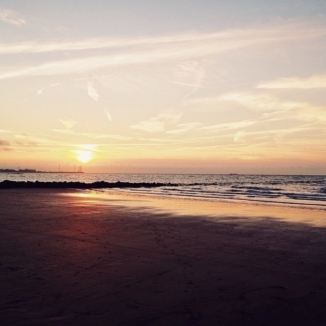
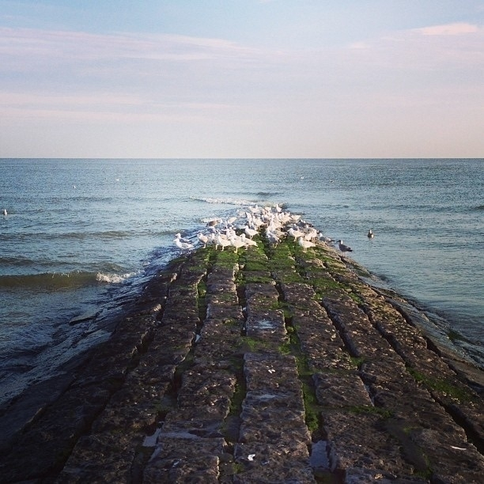

Hier nog een overzicht van een aantal aanwinsten van de maanden juni en juli. Ik had de foto eind juli al gemaakt, vlak voor we vertrokken op vakantie, met het idee een postje te maken op de trein, maar kijk het is intussen eind september. Oh well.
📚 ‘Under the Eye of the Big Birds’ van Hiromi Kawakami
Een serie los aan elkaar geknoopte verhalen met een dystopische visie op het einde van de mensheid. Deze is intussen al uitgelezen en kan ik zeker aanraden.
📚 ‘Virgin Suicides’ van Jefferey Eugenides
Ik heb ruim 20 jaar geleden de film gezien. Het verhaal had toen behoorlijk indruk nagelaten. Ik denk zelfs niet dat ik wist dat het gebaseerd was op een boek.
📚 ‘Klara and the Sun’ van Kazuo Ishiguro
Ik heb vorig jaar voor het eerst iets van Ishiguro gelezen. Hoewel ‘Klara and the Sun’ hoger op mijn lijstje stond, was het eerst ‘Never Let Me Go’ geworden.
📚 ‘Long Island Compromise’ van Taffy Brodesser-Akner
Hier ben ik heel erg benieuwd naar. Ik heb nog niets gelezen van Taffy Brodesser-Akner, maar heb wel de serie Fleishman Is in Trouble gezien, wat gebaseerd is op het gelijknamig boek, en was enorm fan van het verhaal en de personages. Ik heb hoge verwachtingen.
📚 ‘The Memory Police’ van Yoko Ogawa
Deze deed een tijdje terug de ronde op de socials. Met een voorliefde voor Japanse literatuur, science fiction en verhalen met een hoek af was het een no-brainer om hem ook in huis te halen.
📚 ‘Earthsea: The Four Books’ van Ursula K. Le Guin
Ik heb de Earthsea reeks al een tijdje op mijn Kindle staan, gekocht voor een prikje in een bundle met allemaal ebooks van Ursula K. Le Guin. Maar het is toch nog altijd plezanter om een fysiek boek te mogen lezen.
‘Howl’s Moving Castle’ heeft een groot deel van zijn faam te danken aan de verfilming van Miyazaki. Ik heb de film zelf een aantal jaren geleden gezien, maar kon mij vreemd genoeg niets meer van het verhaal herinneren. Bij het lezen van de eerste hoofdstukken zag ik nog de typerende animatie voor mijn ogen, maar eens ik daardoorheen was dook ik een nieuwe wereld in.
“In the land of Ingary, where such things as seven-league boots and cloaks of invisibility really exist, it is quite a misfortune to be born the eldest of three. Everyone knows you are the one who will fail first, and worst, if the three of you set out to seek your fortunes.”
Sophie is de oudste van drie zussen, voorbestemd om te falen mocht ze haar eigen geluk opzoeken. Ze leidt een onopvallend leven als hoedenmaakster in de winkel van haar ouders. Tot ze bezoek krijgt van de Witch of the Waste, die haar omtovert in een oud vrouwtje. In de hoop de spreuk te verbreken gaat ze op zoek naar tovenaar Howl, en zijn kasteel dat steeds in beweging is.
Ik heb enorm genoten van de fantasierijke wereld die Diana Wynne Jones hier neerzet. Maar meer nog van de personages, de koppige Sophie en de ijdele Howl, en hun dynamiek als die van een omaatje en een dramatische tiener, wat tot heel wat humoristische situaties leidt. Als ik het boek eerder had ontdekt, had ik het zeker voorgelezen aan de kinderen.
Dit moet toch een van de meer unieke boeken zijn dat ik al gelezen heb. Het is intussen van juli geleden en het zindert soms nog na.
‘Under the Eye of the Big Bird’ is een reeks kortverhalen die losjes aan elkaar zijn geknoopt. Hiromi Kawakami brengt met deze verhalen een visie op een toekomst waarin de mens met uitsterven wordt bedreigd. Over duizenden jaren heen volgen we verschillende personages en wordt er gespeculeerd over hoe de wereld evolueert en hoe de mens probeert te overleven.
“A man. The sound of the word was strange to me. At that time, 1 had yet to see a man, but my mother had told me about them often.
“Are they like you, or me, or Hawa, or are they an entirely different thing?”
“Oh, men aren’t things. They’re people, like us.”
Then why had we never seen one?
“Men are very busy.”
Busy. It was still some time before I’d know the meaning of the word.”
Het blijft een speculatief geheel, veel wordt vaag en in het midden gelaten en de lezer wordt uitgedaagd om zelf de gaten in te vullen. Elk verhaal is een momentopname in de tijd, maar de tijdslijn zelf blijft vaag. Op het einde is de cirkel mooi rond, en al durf ik zeker te zeggen dat ik niet noodzakelijk alles heb begrepen, de verhalen zijn boeiend en lezen vlot.
“Free might be the most-used word at our school. Free thinking is more important than anything else, the teacher would say, at least three times a day.
But I never felt too free at school.”
Een boek vol met interessante ideeën en filosofische mijmeringen over wat het betekent om mens te zijn. Ik kan mij inbeelden dat dit een frustrerende en verwarrende leeservaring is voor lezers die het graag concreet hebben, maar ik heb er enorm van genoten en zie mezelf er in de toekomst opnieuw naar grijpen. Zeker een aanrader, maar wellicht niet voor iedereen.
★★★★½
Goeiemorgen!
Liquid Glass op mijn iPad Pro van 2018 geïnstalleerd. Ziet er fine uit I guess. Maar hapert regelmatig, en toch ook al eens een layout bug tegen gekomen. Ik ga toch nog even wacht met ook de telefoon en de laptop te updaten.
Ik ga dringend eens moeten beslissen waar ik begin oktober wil gaan wandelen. Mijn uitvluchten om de knoop door te hakken zijn stilletjes aan op. 😅
Ideetjes zijn altijd welkom! Ik heb een 9-tal dagen en heb liefst een beetje mogelijkheden onderweg om water bij te vullen en af en toe iets te eten.
Het was dit weekend opnieuw Runksterfeesten en dat betekent ook rommelmarkt. Hoewel de meeste mensen hun te kleine kinderspullen en speelgoed buiten zetten valt er meestal ook een degelijk boek te rapen. Al was de vangst iets magerder dan andere jaren.
📚 ‘Magpie Murders’ van Anthony Horowitz
Horowitz heb ik vorig jaar ontdekt met de zeer amusante reeks detective boeken ‘Hawthorne & Horowitz’. ‘Magpie Murders’ wordt gezien als een van zijn beste misdaad romans, dus de verwachtingen zijn groot.
Op dat punt gekomen dat ik moet opblijven tot het tijd is om de oudste van een feestje te halen. Ben wel altijd een nachtmens geweest, maar ik merk ook dat ik er steeds vaker last van heb de volgende dag.
Gisteren dan toch een echo laten maken van mij voet. Die ziet ondertussen shades of blauw en geel. Wandelen, en vooral trappen af gaan, is nog steeds vervelend. Maar geen scheuren! Advies is nog een week of twee niet lopen en dan rustig opbouwen met steunverband.
Dit verhaal speelt zich af eind jaren 90 in de Vlaamse Kempen en schets de vriendschap van Jimmy, een jongen met een moeilijke thuissituatie, en Tristan, de zoon van Kosovaarse vluchtelingen. Tot er een plan nodig is om te voorkomen dat het gezin wordt uitgewezen.
“Jimmy had zich erbij moeten neerleggen dat hij alleen de Tristan-van-na-zijn-vlucht kende, de Tristan die niet zeker wist of hij zou mogen blijven, en dat ergens binnen in de Tristan die hij had leren kennen een andere Tristan verscholen zat, een grondiger versie, de Kosovaarse Tristan die een eigen taal sprak, die tien zomers in relatieve vrede in een boerderij nabij de bergen had doorgebracht, die nergens heimwee naar had en nog niets of niemand had moeten achterlaten.”
Een mooi, simpel verhaal waar toch best veel in zit. Het blijft een kunst om met zo weinig woorden een hele wereld te scheppen. En een einde dat alles mooi samenbrengt. Ik heb nu wel interesse om meer van Lize Spit te lezen, al zeggen haar andere boeken mij thematisch niet zoveel.
Ik heb de voorbije maanden mijn boekenpostjes wat laten rusten, wat wil zeggen dat ik jullie nog wat te goed ben, te beginnen met ‘The Ministry of Time’ van Kaliane Bradley. Het boek is trouwens verkrijgbaar in allerlei leuke kleurvarianten, voor de liefhebbers.
Een overheidsmedewerkster krijgt de zeer lucratieve job aangeboden om te functioneren als liaison voor mensen die uit de geschiedenis komen. Een experiment om te zien hoe goed tijdreizen werkt. Ze wordt toegewezen aan Commandant Graham Gore, een poolreiziger uit 1847. Terwijl Gore aan zijn nieuw modern leven went wordt steeds duidelijker dat er meer aan de hand is met het project.
“’This is London?' he asked, finally.
‘Yes.
‘How many people live here now?’
‘Nearly nine million.’
He sat back and shut his eyes.
‘That’s far too large a number to be real,’ he murmured. I am going to forget that you told me.”
Ik ben altijd wel fan van mensen (of wezens, ik denk bv aan ‘The Humans’ van Matt Haig) uit hun context te nemen om ze in onze moderne maatschappij te droppen. Het laat toe om banale observaties over de mensheid op een ietwat humoristische manier neer te pennen. Met haar luchtige schrijfstijl slaagt Bradley hier goed in. Het contrast met de Victoriaanse tijd is dan ook erg groot voor Gore, er is dus materiaal genoeg om mee te spelen. Ook in de relaties tussen de hoofdpersonages speelt Bradley dit uit, waarbij Gore, een heer van zijn tijd, zich niet altijd weet te houden rond zijn liaison, een moderne vrouw met een gemengde origine.
Bradley neemt haar tijd om allerlei themas te verkennen, maar houdt het spannend met een verhaal van intrige en spionage, en de aloude vraag of je met tijdreizen de toekomst kunt beïnvloeden. Amusant, en onderhoudend geschreven, zeker een aanrader.
★★★★
Naar Spa gereden en vol enthousiasme vertrokken om de rode extratrail lus te lopen. Na 1,5 km rechtervoet omgeslaan (hoorde ik daar ook iets scheuren?). Einde avontuur. Ben intussen terug aan de auto en enkel is al goed gezwollen. Balen. Ik had er zoveel zin in. 😔
Nog rap een rondje door de regen gelopen om de dag af te sluiten.
Nooo, mijn ochtendroutine is om zeep! Eerst The Mini, dan Strands, Wordle en eindigen met Connections. Maar The Mini zit nu mee achter de paywall. 😢
De Murderbot reeks is in promo bij Humble Bundle. Alle 7 boeken (en nog wat andere verhalen) voor een apple en een ei. Absolute aanrader!
Dankzij de Zomerfilms deze avond een klassieker kunnen meepikken. We zaten in de toepasselijk genaamde Bootstraat aan het kanaal. En voor de kinderen meteen de eerste keer dat ze de film zien. 🦈
“You’re gonna need a bigger boat”
Blijft goed.
Over de middag een rondje gelopen door de Mechelse Heide. De heide staat volop in bloei met de typisch paarse bloemetjes.
Even terugblikken naar vorig week met wat extra fotos van de viaduct in Glenfinnan. 🚂
De vakantie zit er alweer op, morgen terug aan het werk. De kinderen hebben nog 2 weken respijt, maar het zal snel de eerste schooldag zijn. Het was wel opnieuw een heerlijke periode. We hebben 2 weken met de trein rondgereisd door de prachtige natuur van Schotland, en om af te sluiten was het het voorbije weekend de trouw van mijn zus. Beter kan een mens het niet hebben.
Doorheen onze reis veel boekenwinkels gezien, waaronder ook veel mooie 2e hands zaken, en overal waar we kwamen stonden ruilkasten. Ik heb me behoorlijk moeten inhouden om niet overal iets mee te nemen, maar ik had geen zin om 2 weken lang extra gewicht mee te zeulen, en er was ook gewoon geen plaats in mijn rugzak. Op onze laatste dag daarentegen heb ik toch even tijd vrij gemaakt om wat “souveniers†te kopen, met het idee wat Schotse literatuur mee te nemen. Dat is – grotendeels - gelukt.
📚 ’Beartown’ van Fredrik Backman
Verre van Schots, maar kijk, deze staat al lang op mijn lijst en hij lag daar. In afwachting van een paperback versie van Backmans nieuwe ‘My Friends’ kan ik alvast deze lezen.
📚 ’The Way of all Flesh’ van Ambrose Parry
Het leuke aan de Schotse winkels is dat ze allemaal een rek hebben dat hun literatuur promoot. Dit is eentje dat me opviel in de selectie van thrillers. Een misdaad thriller dat zich afspeelt in victoriaans Edinburgh. Geschreven door een getrouwd koppel met een sterke interesse in medische geschiedenis. Ik verwacht me aan wat grimmige passages.
📚 ’Poor Things’ van Alasdair Gray
Bij het meer literaire werk vond ik ‘Poor Things’, behoorlijk populair op het moment ondanks dat de film toch al weer even geleden is. Alasdair Gray wordt gezien als een van de meest getalenteerde Schotse auteurs. Ik ben enorm fan van de verfilming, dus ik ben zeer benieuwd naar het boek zelf. Het ziet er alvast een mooi uitgave uit met interessante vormgeving en illustraties.
Wat een heerlijk weekend achter de rug. Vrijdagnamiddig afgezakt richting de Ardennen om mijn zus haar trouw te vieren. Vrijdagavond met de naaste familie en getuigen vuurke gestookt en verse pizza’s uit de pizza-oven, zaterdag ceremonie, receptie, en avondfeest met alle genodigden, en dan zondagochtend afsluiten met de kampeerders en de bende, en een hoop koffiekoeken. Mijn zus haar hartje helemaal vol. Enorm van genoten!
Gisterenavond de Caledonian Sleeper opgestapt in Fort William. Het eerst uur werden we getrakteerd op prachtige weidse landschappen, zonsondergang en af en toen een halte in the middle of nowhere. Intussen zijn we met de Eurostar terug in België aangekomen en zitten we op de trein richting thuis. Wat een reis!
Om onze reis af te sluiten hebben we gisteren nog een uitstap gemaakt naar Glenfinnan. Hoe beter onze treinreis door Schotland afronden dan de befaamde Jacobite stoomtrein spotten op de viaduct in Glenfinnan. We hadden zelfs het geluk om de stoomtrein het station van Fort William in te zien rijden. Onze Harry Potter fans waren zeer content.
We zitten intussen 4 dagen in Fort William, veel wandelen en lopen, veel foto’s waar ik nog eens op mijn gemak zal door moeten.
Morgen zit de reis er op, we maken in de namiddag nog een daguitstap naar Glenfinnan, en stappen ‘s avonds in Fort Willam de Caledonian Sleeper op, de nachttrein richting Londen, om dan de volgende ochtend meteen over te stappen op de Eurostar naar Brussel.
Donderdag waren we rond de middag aangekomen in Inverness. We hadden voorzien om hier 1 nacht door te brengen en vrijdag met de bus door te reizen naar Fort William.
Donderdag zelf konden we genieten van wat zon en buiten lunchen in afwachting van ons verblijf. Vrijdag was het eerder druilerig, we hadden ook het gevoel dat we donderdag eigenlijk al alles gezien hadden, dus het was een uitdaging om de tijd te vullen.
Na een bezoek aan Leakey’s Bookshop en Wasps, en lunch in The Victorian Market zijn we richting busstation afgezakt in de hoop dat we met een eerdere bus mee konden.
Achteraf gezien hadden we beter een overnachting uitgespaard en meteen doorgereisd naar Fort William.
We zijn in Inverness ook gepasseerd bij Wasps, een academie voor creatievelingen. Er liep een tentoonstelling van risoprints. Maar ik had, opnieuw, vooral oog voor het gebouw.
Eergisteren liepen we nog rond in Inverness. We zijn onder andere Leakey’s Bookshop binnen. Overal boeken, en dan nog stapels onder dekens die ze nog moesten verwerken. Het rook er even muffig als dat het er uit ziet. Ik vond het wel moedig om centraal tussen al die boeken zo een knoert van een houtkachel te zetten.
Travel day! We laten het pittoreske Pitlochry achter ons en reizen door naar Inverness. Treinrit ‘with a view’ gelijk ze zeggen. En ondanks de regenachtige voorspellingen zien we vooral zon in Inverness.
Nog enkele foto’s uit Kinghorn, toen we een stukje de Fife Coastal Path gevolgd hebben tot in Kirckaldy om dan een stukje binnnenland in te gaan en zo terug naar ons huisje. Prachtige omgeving!
Een paar dagen geleden zaten we in Kinghorn, net buiten Edinburgh, in een super gezellig en liefdevol familie huisje omringd door de velden en de zee. En met prachtig weer!
De ochtendzon in het station van Edinburgh na onze aankomst met de nachttrein. Intussen ook alweer 2 dagen geleden.
Het was een spannende ochtend. We zouden vandaag op ons gemak doorreizen van Kinghorn naar Pitlochry maar er was gisteren al stormalarm voor storm Floris. De meeste treinen in de namiddag waren al afgeschaft, dus hebben we onze plannen moeten bijsturen en waren we vroeg op stap om alvast een trein naar Perth te halen in de hoop dat we daar een verbinding naar Pitlochry zouden hebben. Het was een lang uur wachten in het bijna verlaten station van Perth—zou de trein alsnog komen of zitten we hier vast? Uiteindelijk kwam om 10:02 de laatste trein van de dag die richting het noorden ging, met als tussenstop Pitlochry. Hier is het weer wisselvallig met zon en regen, en veel wind, en draaien de lokalen met hun ogen “Just another Scottish summer†en “Watch out for the storm!†terwijl buiten de zon schijnt.
Gisteren stond er dagje Edinburgh op het programma. Omdat we met de aankomst van de slaaptrein al om 8u in de stad rondliepen, en we toch wat moe waren van 24 uur Londen is het vooral uitgedraaid op enkele uren rondhangen in het National Museum of Scotland, in deze prachtige hal, om daarna een iets vroegere trein te nemen naar ons eindbestemming.
Slice of London
Gisteren ook The Natural History Museum bezocht, wat wel groot succes was. De kinderen waren zeer enthousiast over de tentoonstelling van de dino’s. 🦖
Gisteren de British Museum bezocht in Londen. Het was er zo absurd druk dat we gevlucht zijn. De gebouwen zijn wel indrukwekkend.
De vakantie ingezet met de musical van Matilda. We hebben gelachen en genoten. Zeer de moeite.
De Kindle alvast voorbereid voor de vakantie.
Of ik ook effectief deze boeken ga lezen zal nog moeten blijken. Dit zijn nu mijn voorkeuren, maar er zijn nog veel opties. 😅
Het is al een aantal weken geleden dat ik nog eens een boekenpost deed, een mens zou nog geloven dat ik niet meer aan het lezen ben, maar niets is minder waar. Ik loop gewoon wat achter. Vandaag eentje van John Scalzi, dit moet zo stilletjes aan mijn meest gelezen auteur zijn. Scalzi heeft altijd gemakkelijk verteerbare sci-fi verhalen met een vleugje humor. Ik wou al Britse humor schrijven, maar de man is Amerikaan.
‘Head On’ is een vervolg op ‘Lock In’, die wereld waarin sommige mensen door een virus in hun lichaam vast zitten en dankzij neurale implantaten in virtuele werelden kunnen leven (Agora), en via robots (Threeps) de echte wereld in kunnen. Chris Shane is een zo een Haden, genaamd naar de ziekte, en als FBI agent wordt hij ingezet bij zaken die betrekking hebben op lotgenoten. Dit keer is er een verdachte moord in een top sport waarbij een van de spelers, een Haden die een Threep bedient, dood blijft tijdens een spel.
Verder verloopt het verhaal als een typische detective/mysterie met corporate intriges in een wereld waar veel geld mee gemoeid is.
Net zoals het vorige deel kan ik ook ‘Head On’ aanraden. Ideaal om mee te nemen naar het strand of zwembad en de rest even te vergeten. Wat dit tweede deel net iets interessanter maakt is dat je de wereld als kent, de introductie hebben we gehad in ‘Lock In’, dus er is iets meer focus op de personages en het ontwikkelen van de mysterie.
★★★★
Gisteren nog een herstel loopje gedaan in de Demervallei in Diepenbeek. Altijd een groene omgeving.
Het was vandaag boekenmarkt in Bilzen. Ik kon het niet laten om eens te snuisteren. Tussen alle Isabelle Allendes, Ruiz Zafóns, 7 Zussen en Nicci Frenchen sprongen er toch 2 uit, en dan nog eentje uitgekozen door m’n lief die iets dun en luchtigs wou om binnenkort mee te nemen op vakantie.
📚’De Vorm van Ruïnes’ van Juan Gabriel Vásquez
Hier had ik nog nooit van gehoord. Het lijkt wel wat half biografisch, half fictie. Een verhaal over terug gaan naar uw roots en leren over de geschiedenis van uw land, in dit geval Colombia. Ik ben zeer benieuwd.
📚’Hamnet’ van Maggie O’Farrell
Deze staat al een tijdje op mijn radar. Ik heb hem al vaak in mijn handen gehad, maar er was altijd iets anders dat mijn interesse meer prikkelde. Nu hij daar voor een appel en ei lag kon hem niet meer laten liggen. Toch wel hoge verwachtingen van dit.
📚’De Laatkomer’ van Dimitri Verhulst
Uitgekozen door m’n lief. Eens zij er door is zal ik hem ook lezen. Ik heb nog niets van Verhulst gelezen dus dat brengt me weer een stap dichter bij het ontdekken van Nederlandstalige literatuur.
Ik had gisteren ineens zin om nog eens in de Ardennen te gaan lopen dus heb ik mij de dichtsbijzijnde Extratrail gezocht en ben ik de auto ingesprongen. Ik ben in Theux beland om er de 18km lange blauwe lus te lopen. Het was niet mijn beste loop ooit, ik was moe en alles deed pijn, maar dat blijft toch genieten in de bossen, door de velden, bergop, bergaf.
Ik hou van werken in legacy code. Ik doe mijn beste werk als ik bestaande features kan uitbreiden, refactoren, optimaliseren, en verbeteren. Dat geeft mij energie.
Dankzij Copilot kan ik nu ook voor nieuwe features een hoop legacy code genereren en ben ik meteen vertrokken met herwerken. Ideaal om mij uit een dipje of ‘writers block’ te halen. 🤪
Er is een nieuw boekjaar gestart deze maand, ideaal moment dus om Billit en Peppol op te zetten. Billit lijkt prima te werken. Enkel nog kijken hoe, en of ik Toggl timetracking ga syncen. Ik heb geen zin om daar nog een Zapier tussen te zetten, misschien een eigen sync tooltje vibe coden? Dan kan ik ook eerst data verificatie doen in Toggl en de sync manueel pushen.
De factuur templates ga ik ook nog eens apart in duiken, anders gaan mensen zich afvragen waar mijn mooi design naartoe is. 🤪
De jongste is vertrokken se. Ik heb ze nog niet veel gezien. 1 dag thuis van vakantie met haar mama en al weer weg op kamp. Ik ga alvast uitkijken naar onze vakantie samen, en dat zij ondertussen maar veel plezier maakt. Eerste keer met de grote rugzak weg en mee helpen met het kamp opzetten. Spannend, en ook wel wat jaloers!
Ik heb me laten vangen. Er ontbreekt natuurlijk eentje.
Juni is een goeie maand geweest, bijna uitsluitend aanraders. ’Martyr!’ heeft zoveel mooie woorden dat het alleen al daarvoor de moeite is, en ‘Waar zijn de wolken’ kan ik ook zeer warm aanbevelen.
De voorbije maand hebben we ons gewaagd aan “Monty Python and the Holy Grail†(1975) met de kinderen. Ik was niet zeker of de 2 jongsten (12 en 13) er wat aan zouden hebben, maar het was een groot succes en we hebben allemaal goed gelachen. Verder ben ik er eindelijk toe gekomen om “The Worst Person in the World†(2021) te kijken, wat zeker niet teleurgesteld heeft. Maar de echte verrassing, en misschien wel mijn favoriet deze maand, is de ietwat absurde zwart komedie “Psycho Therapy: The Shallow Tale of a Writer Who Decided to Write About a Serial Killer†(2024), een pareltje dat bijna onder de radar is gegaan.
“The Worst Person in the World†(2021) ★★★★
Een zeer goed portret van een jonge vrouw die wat verloren loopt in haar leven, en hoe dat haar liefdesleven beïnvloedt. Verteld in 12 hoofdstukken met een proloog en een epiloog.
“Monty Python and the Holy Grail†(1975) ★★★★
Movienight met de kinderen. Ik was bang dat het misschien niet overeind zou blijven, maar zorgen om niets. Film was een groot succes. (Ik was vergeten hoeveel sociale commentaar er in de dialogen zit).
“The Accountant²†(2025) ★★★½
Buiten dat ik het degelijk vond kon ik me weinig van de eerste film herinneren. Deze film was zeker niet nodig en maakt een aantal vreemde keuzes waardoor het een quirky character krijgt. Maar het werkt wel voor mij.
“Deep Cover†(2025) ★★★
Prima actie komedie. Niet te veel bij nadenken, niet te veel van verwachten. Orlando Bloom doet dat niet slecht.
“A Minecraft Movie†(2025) ★½
De titel heeft niet gelogen. Het is een film. En uiteraard gaan ze een tweede maken.
“Pirates of the Caribbean: Dead Man’s Chest†(2006) ★★★½
Rewatch. Deze was op TV en heb ik dan maar laten doorspelen. Het was beter dan ik mij herinnerde, maar ik was helemaal vergeten dat dit een 2-delige film is. Ik zat maar te wachten op de grote finale die niet kwam.
“Deadpool 2†(2018) ★★★½
Rewatch. De oudste had deze nodig niet gezien. Blijft goed, maar minder goed dan ik mij herinner. Haalt niet de charme van de eerste film.
“Friendship†(2024) ★★★
Ik had mij aan een goofy komedie verwacht, maar het gaat eerder richting lichte horror, donkere humor, met intense en awkward situaties. Het heeft zijn momenten. Maar niet mijn type humor.
Heel erg dubbel gevoel bij dit boek. De eerste helft was met veel oogrollen, maar kijk, we zijn nu een week verder en het zindert nog steeds na. Hoewel ik me niet in alles kan vinden, kan ik wel begrijpen waar de liefde voor ‘Call Me By Your Name’ vandaan komt.
“We were—and he must have recognized the signs long before I did—flirting.”
Een Italiaanse zomer in de jaren ’80. Naar jaarlijkse gewoonte nodigen de ouders van Elio een doctoraat student uit, dit jaar Oliver, om gedurende 6 weken aan zijn thesis te werken en Elio’s vader te assisteren met academisch werk. Elio raakt gefascineerd door Oliver, wat wederzijds blijkt te zijn waarna er zich een passionele relatie ontwikkelt.
“The thud my heart gave when I saw him unannounced both terrified and thrilled me. I was afraid when he showed up, afraid when he failed to, afraid when he looked at me, more frightened yet when he didn’t.”
Het verhaal bestaat uit vier delen die telkens een fase in de relatie van Elio en Oliver representeren. Voor mij kwam het pas echt op gang in het derde deel—misschien tegen het einde van het tweede deel—maar dan ben je al tweederde door het boek. Dit deel maakt het verhaal echt, de relatie is tastbaar, en je kan de Italiaanse zomer bijna proeven. De passage over hun tijd in Rome hoort bij de mooiere stukjes die ik al gelezen heb, en zal ik mij nog lang herinneren.
Alles daarvoor daarentegen leest als een zeurende monoloog van een obsessieve tiener die geen weet blijft met zichzelf. Er zitten zeker mooie passages tussen, maar ja, ook veel oogrollen dus.
Wat een heerlijke reeks! Meer heb ik daar niet over te zeggen. ‘Locke & Key’, geschreven door Joe Hill en getekend door Gabriel RodrÃguez, is een reeks graphic novels gecentreerd rond de familie Locke. Na de moord op hun vader verhuizen de kinderen, 2 broers en 1 zus, samen met hun moeder naar Keyhouse in het dorpje Lovecraft.
Doorheen het huis vinden de kinderen mysterieuze, magische sleutels. Een sleutel waarmee je een geest kan worden, eentje die je sterk maakt, eentje die je laat vliegen, of je in een reus omtovert. Hoewel het voor de kinderen onschuldig plezier is blijkt snel dat er een duistere kracht het op hen en de sleutels gemunt heeft. Eentje die niet zal rusten tot het in zijn missie slaagt.
5-sterren overall. Goeie personages, monsters, spanning, intriges, verraad, … kortom alles wat je zou verwachten van een goed horror-mysterie verhaal. De reeks bestaat ui 6 volumes en is in een wip uitgelezen.
‘Martelaar!’, of liever ‘Martyr!’ van Kaveh Akbar heb ik vorig jaar gewonnen dankzij een nieuwsbrief. Ik had er eerder nog niet van gehoord, maar het was zeker op een andere manier op mijn radar gekomen. Hoewel ik zeer dankbaar ben met de winst, heb ik mij toch een Engelstalige versie gezocht die ik dan digitaal gelezen heb. Als het toch kan lees ik liever het origineel.
“Maybe it was that Cyrus had done the wrong drugs in the right order, or the right drugs in the wrong order, but when God finally spoke back to him after twenty-seven years of silence, what Cyrus wanted more than anything else was a do-over.”
De Iraanse Cyrus heeft zijn moeder nooit gekend, ze stierf een zinloze dood toen haar vliegtuig per ongeluk werd neergeschoten. Zijn leven lang worstelt Cyrus met haar dood, en later met die van zijn vader. Hij raakt helemaal in de ban van martelaars. Een obsessie die hem leidt naar revelaties die zijn waarheid in vraag stellen.
“In the back of your brain, your addiction is doing push-ups, getting stronger, just waiting for you to slip up,”
Zoveel mooie woorden in dit boek, het is dan ook door een poëet geschreven. Het zijn geen voor de hand liggende thema’s in Martyr!–immigratie, verslaving, dood, verlies, eenzaamheid–maar Kaveh Akbar gaat ze aan alsof het niets is en brengt een vlot leesbaar en hartverwarmend verhaal. Ik ging gisteren door mijn notities, en–los van het feit dat het een lange lijst is–kon ik niet kiezen welke ik hier wou delen. Ik heb het dan maar simpel gehouden, de langere passages zullen jullie zelf moeten ontdekken.
“She lived for something. And she knew when she was done living. That’s not nothing.”
Ik verwacht dat ik hier het komende jaar nog veel aan zal terugdenken.
Ik had mij voorgenomen dit jaar een effort te doen om ook Nederlandstalige auteurs te lezen–het is een wereld waar ik helemaal niet in thuis ben. Maar zie, het jaar is alweer half om, en naast ‘Wolf’ is ‘Waar zijn de wolken’ nog maar mijn tweede Nederlandstalig boek. Opnieuw non-fictie, maar dan heel wat luchtiger.
“en ik loop dit eindeloze rondje dus niet omdat ik een of
ander record probeer te breken of
omdat ik aan het trainen ben voor een pelgrimstocht
maar omdat mijn zoontje enkel kan slapen als ik wandel”
Suzanne Grotenhuis wandelt kilometers en kilometers hetzelfde rondje in het park nabij haar thuis. Allemaal omdat haar pasgeboren zoontje niet wil slapen. Ondertussen typt ze. Op haar telefoon. Zonder leestekens. Ze vertelt over haar ervaringen en ontmoetingen in het park, de hulp die ze zoekt, en het advies dat ze krijgt.
“zou het niet kunnen dat we per ongeluk al veel langer
in een tijd leven waarin we niet leren hoe je je moet
verbinden?
waarin we vinden dat elke vorm van ziekte en verlies
of rouw iets
is wat we zelf moeten oplossen”
Ik vond het een heerlijk boekje dat in geen tijd uit is. Door de schrijfstijl leest het als een monoloog: vertrouwd en bij momenten zeer herkenbaar. Sommige passages voelde ik echt binnenkomen. Ik heb nu wel een beetje spijt dat ik het digitaal gelezen heb–het lijkt me dat de vorm hier enorm veel zou bijgedragen hebben aan het leesplezier.
★★★★★
PS: Tips voor Nederlandstalige auteurs die ik zeker moet gelezen hebben zijn altijd welkom.
Gisteren avond nog rondje bij valavond en laatste streepje zon mee gepikt.
Ik was zo enorm onder de indruk van ‘Small Things Like These’ dat ik meteen meer werk van Claire Keegan ben gaan opzoeken. ‘Foster’ lag hier al een tijdje klaar om te lezen, maar de verfilming zat nog vers in mijn hoofd. Ik heb het zo lang mogelijk uitgesteld, maar mijn geduld was op.
“Now that my father has delivered me and eaten his fill, he is anxious for his tobacco; to have his smoke, and get away. “
In ‘Foster’ gaat een jong meisje voor een tijdje bij pleegouders wonen, zonder te weten hoe lang ze er zal blijven. Voor het eerst vindt ze liefde en warmte, en begint ze open te bloeien.
“‘Your complexion is better already, see?’ she says. ‘All you need is minding.’”
De kracht van Keegans schrijven zit in de eenvoud van taal en gebeurtenissen. Enkel de essentie, en toch vertelt ze daar telkens zo enorm veel mee. Hoedje af. ‘Foster’ is een teder verhaal met een bitterzoet verloop dat naar de keel grijpt.
Ik had het wel moeilijk om mijn gedachten los te koppelen van de verfilming, “The Quiet Girl†(2022). Maar hier is dat eerder een compliment: de film slaagt er in om met dezelfde eenvoud het verhaal extra slagkracht te geven. Zeker de moeite.
Dit derde deel uit de ‘Children of Time’-reeks valt wat uit de toon met de andere boeken, in die zin dat de focus dit keer niet ligt op de evolutie van een nieuw ras, maar op een groep mensen en de uitdagingen van het opstarten van een nieuwe kolonie.
“You will fail, they’d said, and here he was, failing. You will fail, and when you do, you must do everything you can to fail as little as possible. Don’t let the failure get its teeth into you. You will make decisions that come with a cost. That is Command. Do not let the cost consume you.”
Het verhaal begint in dezelfde lijn als de andere boeken: we volgen een nieuw schip, Enkidu, een ark voor de mensheid. De aarde achtergelaten op zoek naar een beter leven. Generaties later worden de planeet en kolonie ontdekt door onze vrienden uit de vorige boeken, Kern, Paul, Portia, en Miranda. Voorzichtig infiltreren ze het leven van de mensen en gaan ze op onderzoek, in de hoop hen met hun technologie te kunnen helpen. Maar niet alles is wat het lijkt.
“She’s learning that getting a proper education doesn’t answer questions, it just teaches you to ask them.”
Hoewel we ons duidelijk in een science-fiction wereld bevinden leest ‘Children of Memory’ eerder als fantasy. Het voelt bij momenten als een sprookje dat langzaam ontrafelt. Bovenop het feit dat het gewoon een goed verhaal is, met een ietwat onverwachte twist, krijgen we ook nog een aantal interessante filosofische vragen voorgeschoteld.
Ik kan de reeks enorm aanraden en kijk al uit naar boek nummer vier.
★★★★
Gisteren was het nog eens proclamatie. Dit keer voor muziek. E. heeft de 2e graad piano afgerond, en F. de derde graad viool.
F. mocht zelfs, tussen het voorlezen van de namen door, een nummer spelen als intermezzo. In de grote zaal van het CCHa. Best spannend en cool. F. was vooral onder de indruk van de artiestenloge achter de schermen.
Ochtend rondje door bos en heide. Het werk van bevers heeft geloond met een groot deel bos onder water.
Juni is al ruim door de helft, de examens zijn zelfs al gepasseerd, maar ik ga het toch nog even hebben over de films van mei. Over het algemeen een vrij gemiddelde filmmaand met als uitschieters “Paddington in Peru†en “Sinners”, oh en de ietwat ludieke “The Monkey”. 3 aanraders.
“One of Them Days” (2025) ★★★
Een degelijke komedie waarbij de hoofdpersonage tegen het einde van de dag haar huur moet zien te betalen. Zo een film waarbij er continue aan foute beslissingen en zelf-sabotage gedaan wordt. Dat werk na een tijdje wat op mijn zenuwen.
“Omni Loop” (2024) ★★★
Beetje een quirky science fiction film over de stervende Zoya met een zwart gat in haar lijf. Als ze een pil neemt kan ze terug de tijd in, met die gewonnen tijd probeert ze zichzelf te genezen. Er zit ook een diepere boodschap in van los laten en vrede nemen. Heb eigenlijk alleen maar gekeken omwille van Ayo Edebiri.
“Den of Thieves 2: Pantera” (2025) ★★
Ik kon mij van die eerste film niets herinneren, ik was het eerste half uur dus vooral in de war over wie de personages ook al weer waren en wie goed of slecht was. Begon intrigerend, eindigt prima, in het midden was het vaak mijn aandacht kwijt.
“The Monkey” (2025) ★★★½
Heerlijke horror film dat zichzelf niet serieus neemt, meer moet ge niet weten. Aanrader.
“The Trip” (2010) ★★★½
Beste vrienden Steve Coogan en Rob Brydon reizen door Engeland om een aantal van de beste restaurants te reviewen. 2 mannen op een roadtrip, daar moet ge niets serieus van verwachten. Er zijn er nog 3 gemaakt, in Spanje, Italië en Griekenland.
“Paddington in Peru” (2025) ★★★★
Movienight. Die Paddington films blijven toch zeer fijne familiefilms met veel hart in. Ik ben fan. Aanrader om met het hele gezien te kijken.
“Fountain of Youth” (2025) ★★
Ik ben altijd kandidaat voor een avonturen film met een schattenjacht, maar deze was het toch niet helemaal. Ik had meer verwacht van Guy Ritchie. Het kan ook aan John Krasinski liggen, die zijn “charme†voelt altijd zo geforceerd.
“The Wedding Banquet” (2025) ★★★½
Min zou liever met zijn vriend Chris trouwen, maar omdat Chris geen commitment durft aan te gaan, stelt Min voor om een greencard marriage te houden met een van hun vriendinnen. Om de schijn op te houden voor de familie moet er een Koreaanse trouw georganiseerd worden. Het verloop is allemaal wat voorspelbaar, maar het zijn allemaal fijne personages en er zit hart in.
“Sinners” (2025) ★★★★
Zeer goeie horror film waar ge best met zo weinig mogelijk kennis aan begint. Aanrader! En Miles Caton, what a find!
Love, Death & Robots
Als bonus nog een overzicht van de afleveringen van Love, Death & Robots. Geen enkel seizoen heeft voor mij nog het niveau van het eerste gehaald, maar blijft conceptueel wel top dat het bestaat. Ik vond “Close Encounters of the Mini Kind†nog wel amusant, geen idee wat de bedoeling was van “Golgotha”.
Gisteren was het proclamatie. De jongste is nu ook lagere school af. Enkel nog pubers in huis. 🥳
En over twee jaar al een eerst student. 😱
Varens tijdens het lopen deze ochtend. Zijn er mooiere planten dan varens? 🥰
Ik had nog een 3e seizoen van Our Flag Means Death niet erg gevonden. Spijtig dat het gedaan is.
Een streepje zon in Mechelen.
Donderdag, op uitnodiging van mijn zus, muchos gracias, dagje Disneyland Parijs gedaan. We hebben ons zeer goed geamuseerd. Ondanks dat we er al meerdere keren geweest zijn was ik blijkbaar nog nooit in het kasteel naar boven gegaan. Al die jaren deze prachtige glasramen gemist.
Mei was begonnen met een leesdip. Ik sleurde nog die logge ‘The Book of Elsewhere’ mee van april, en ik raakte ook moeilijk gestart met ‘Saturday’ van McEwan. Dat laatste steek ik op mijn exemplaar, veel te kleine letters en lange zinnen. Te veel tekst op 1 blad. Ben overgeschakeld op de ebook versie–tekst lekker groot–en ik kon het nauwelijks nog neerleggen. Beste deze maand was ‘Children of Ruin’, blij dat ik die reeks terug opgepikt heb.
🤗 ‘Eileen’ - Ottessa Moshfegh ‘The Old Man and the Sea’ - Ernest Hemingway ‘The Book of Elsewhere’ - Keanu Reeves
â ’Children of Ruin’ - Adrian Tchaikovsky
👌 ‘Saturday’ Ian McEwan
😠Absolute favoriet - â Aanbevolen - 👌 Topper (in zijn genre) - 🤗 Gewoon genoten / gezellig gelezen
Ik ben er niet tegen, die Liquid Glass redesign van Apple. Heb al screenshots van slechte implementaties gezien, maar ook goeie. Ik verwacht dat het in gebruik wel plezant zal zijn, vooral op een iPhone. Doorheen de betas nog wat tweaken, en komt wel goed.. voorzichtig optimistisch.
Gisteren opnieuw in dezelfde kerk. Dit keer niet voor het schoolkoor, maar voor het dameskoor Mavelle. Mijn lief supporteren, en sponsoren, voor hun deelname aan de European Choir Games in juli.
Monty Python and the Holy Grail, voor de eerste keer met de 3 pubers. Benieuwd of het overeind blijft voor de jeugd.
Reis naar Schotland deze zomer begint vorm te krijgen. Een aantal mooie plekjes op de route.
Gisteren was misschien een toepasselijker geweest om het over ‘Saturday’ van Ian McEwan te hebben. Een boek waar weinig in gebeurt, maar toch veel inzit. En gewoon mooi geschreven.
Het is zaterdag 15 februari 2003. Henry Perowne is een succesvolle neurochirurg, toegewijde man, en trotse vader van twee. Het is nog voor zonsopgang en Henry is al wakker, met een onrustig gevoel kijkt hij uit het raam en ziet een brandend vliegtuig over de stad vliegen. Voor de rest van de dag probeert Henry door zijn normale routine te gaan.
“He would like to embrace his son, not only out of relief, but because it occurs to him that Theo has become such a likeable adult.”
Het boek beschrijft, op een zeer rijkelijke manier, alledaagse handelingen en de gedachten van Henry, een squash match met een collega, bezoek aan zijn demente moeder, de muziekrepetitie van zijn zoon. Een intieme inkijk in het leven en hoofd van Henry. Op de achtergrond heerst er een permanente onrust dat veel aandacht eist van hem. Er zijn protesten in de stad tegen de oorlog in Irak, het pessimisme van de post 9/11 tijd en de “war on terror”, het brandend vliegtuig. Komt daar bij dat Henry een aanrijding heeft met de nerveuze en agressieve Baxter wat later op de dag nog escaleert.
“It’s a condition of the times, this compulsion to hear how it stands with the world, and be joined to the generality, to a community of anxiety.”
Het is die sluimerende angst, de tijdsgeest van toen, die McEwan zo treffend weet te vatten. Hoe doorheen de dag willekeurig gedachten van angst door uw hoofd gaan. Hoe snel je je huidige situatie in een context van bedreiging en terreur bekijkt. Het continue willen weten wat er gaande is. In 2003 betekende dat het tv-nieuws blijven volgen. Als je dat doortrekt naar vandaag is die angst, met social media, alleen maar groter en permanenter aanwezig, tenzij je er in slaagt mindful mee om te gaan.
“Unlike in Daisy’s novels, moments of precise reckoning are rare in real life; questions of misinterpretation are not often resolved. Nor do they remain pressingly unresolved. They simply fade.”
★★★★
Ergens in de buurt van Eben-Emael
Vandaag in de omgeving van Eben-Emael gewandeld. Mooi, wel erg vochtig de hele dag.
‘Children of Ruin’ is het tweede deel uit de ‘Children of Time’ reeks van Adrian Tchaikovsky. Een zeer goed tweede deel, en mocht je ‘Children of Time’ zelf nog niet gelezen hebben kan je dat beter eerst doen. Voor mij een van de beste sci-fi boeken dat ik al gelezen heb. En die is perfect op zichzelf te lezen.
‘Children of Ruin’ bouwt verder op de wereld van het eerste deel. Op dezelfde tijdslijn als ‘Children of Time’ volgen we een andere groep mensen die de aarde verlaten hebben om een toegewezen planeet om te vormen tot een leefbare planeet voor de mens. Daar aangekomen ontdekken ze dat er reeds leven is en besluiten ze de organismen te bestuderen.
Duizenden jaren later ontvangen de Portiids en hun mensen een signaal uit dit afgelegen systeem en gaan ze op onderzoek uit. Ze komen aan midden in een systeem in crisis en op het randje van oorlog in een conflict dat begon bij de eerste mensen die hier arriveerden.
“At the time, he was an enthusiastic volunteer and it all seemed an overwhelmingly good idea to be the first of his kind to contact visitors from another star, but now his feelings on the matter are precisely the opposite because it is no longer a choice.”
Wat voor mij deze reeks zo sterk maakt is Tchaikovsky zijn vaardigheid in het scheppen van de wereld, en vooral de wezens en hun ontwikkeling tot een maatschappij. In het eerste deel spinnen, dit keer octopussen. En dan nog een derde organisme dat best angstaanjagend is waardoor het verhaal naar het einde toe een horror kantje krijgt. Erg van genoten. Ik ben intussen al in het derde deel begonnen.
★★★★
Rondje Platwijers om de dag af te sluiten.
Nieuwe aanwinsten!
📚 ’Habibi’ van Craig Thompson
Een nieuwe graphic novel. Ik heb deze al zo vaak in mijn handen gehad, het is een zeer mooi vormgegeven boek, en de tekeningen zien er prachtig uit. Ik heb eerder al ‘Blankets’ van Craig Thompson gelezen, wat makkelijk een favoriet is, al heb ik die digitaal gelezen. Meer dan 650 bladzijden, moet nogal een werk geweest zijn om te tekenen. Hier ga ik van genieten.
📚 ’The Sailor Who Fell from Grace with the Sea’ van Yukio Mishima
Zag er mij een mooi boekje uit met een interessante synopsis. Puur op zicht gekocht. Is blijkbaar een klassieker uit de Japanse literatuur.
📚 ’The Book of Strange New Things’ van Michel Faber
Deze werd me recent nog eens van harte aangeraden, en staat blijkbaar al sinds 2017 op mijn TBR. Ik had een goeie deal gezien op Vinted, dus ik heb niet lang getwijfeld.
📚 ’Under the Skin’ van Michel Faber
Hier was ik niet meteen op uit, maar kwam gebundeld met ’The Book of Strange New Things’. Is tevens verfilmd met Scarlett Johansson in de hoofdrol. Het verhaal intrigeert me ook enorm, en heb de film al een paar keer bijna opgezet, maar zal nu toch eerst het boek lezen. Denk ik.
Zucht. Wat een frustrerende leeservaring. Haat-liefde voor ‘The Book of Elsewhere’ van Keanu Reeves.
B. De onsterfelijke krijger. Hij is gekend uit vele legendes en onder vele namen. Hij doolt al duizenden jaren rond en wil maar 1 ding. Kunnen sterven. Vandaag is hij aangesloten bij een U.S. black-ops groep die beloofd hebben hem hierbij te helpen, in ruil voor zijn hulp. Tot een soldaat tijdens een missie onverwacht terug tot leven komt. Alles wijst richting een mysterieuze kracht dat B evenaart.
“[…] they hated you thereafter for their son, but they said you were the weapon, and we called their dead boy the whetstone that had sharpened you.”
De eerste hoofdstukken waren behoorlijk verwarrend met de introductie van een hoop personages die allemaal schijnbaar willekeurig zaken doen. Het hielp ook niet dat er verschillende namen gebruikt worden om naar de legendarische B te verwijzen. Daarnaast is de taal die gebruikt wordt onnodig complex en bij momenten zeer pretentieus.
De structuur kon ik wel appreciëren. Het wisselde telkens tussen hoofdstukken met een verhaal of legende uit het verleden, en het vervolg op wat er vandaag gaande was. Die verhalen uit het verleden lazen als kortverhalen, waarvan een aantal wel sterk waren. Uiteindelijk was ik geïntrigeerd naar wat er gaande was en wou ik toch weten hoe het zou aflopen, al bleef het doorgaans moeizaam lezen. Spijtig genoeg was het einde wat aan de flauwe kant. Geen aanrader.
“The butterfly, the moth, is a newborn constituted of the dead flesh of another. A pupa is not a place for regeneration or revivification. It is an execution chamber and a birthing room, all at once.”
★★
Nog rap een rondje door De Maten lopen om het weekend af te sluiten.
Het was mooi licht in de kerk tijdens het schoolkoor optreden.
Vrijdag was het slotconcert van het VJC koor. Niet alleen van het voorbije schooljaar, maar tout court het laatste optreden. De dirigent stopt er na 20 jaar mee, en er is spijtig genoeg geen opvolger. Ze hebben alleszins met een knaller afgesloten!
Kalfjes tijdens het lopen.
Openbaar examen viool. De oudste heeft dat top gedaan! Trotse papa. En dat in het mooie Clarenhofkapel in Hasselt.
Ochtendloopje door de velden.
De twee eerste afleveringen van Murderbot er door. Was alvast entertainend. Ben zeer benieuwd en voorzichtig optimistisch voor de rest.
Altijd plezant om een auteur te leren kennen via een novelle. ‘The Old Man and the Sea’ is voor mij de eerste keer dat ik Hemingway lees. Het is blijkbaar ook het laatste grote werk dat hij schreef.
Het verhaal speelt zich af in Cuba. De ouder wordende Santiago trekt met zijn bootje de zee op en gaat de strijd aan om een gigantische marlijn te vangen.
““Thank you,” the old man said. He was too simple to wonder when he had attained humility. But he knew he had attained it and he knew it was not disgraceful and it carried no loss of true pride.”
Het boekje leest als een fabel (of is het parabel?), er is ook al veel geschreven over de symboliek in het verhaal. Voor mij is het een simpel verhaal van iemand die doet wat hij graag doet, zich laat meeslepen en uiteindelijk in een vervelende situatie terecht komt. Ik zou er precies ook niet meer achter zoeken dan dat.
“You did not kill the fish only to keep alive and to sell for food, he thought. You killed him for pride and because you are a fisherman. You loved him when he was alive and you loved him after. If you love him, it is not a sin to kill him. Or is it more?”
Hemingway zelf zou dit geschreven hebben over het symbolisme, uit ‘Selected Letters 1917-1961’:
“Then there is the other secret. There isn’t any symbolysm. The sea is the sea. The old man is an old man. The boy is a boy and the fish is a fish. The shark are all sharks no better and no worse. All the symbolism that people say is shit. What goes beyond is what you see beyond when you know.”
Niet de thriller dat ik verwacht had. Het blijft tot ruim voorbij de helft traag opbouwen met pas in de laatste bladzijden een duidelijke climax. ‘Eileen’ van Ottessa Moshfegh is veeleer een psychologische karakterstudie met een ondergeschikt plot.
Een veel oudere Eileen neemt ons terug in de tijd, naar de jaren 60, en vertelt het verhaal van hoe ze uit haar leven is ontsnapt. De jonge 24-jarige Eileen werkt als secretaresse voor een gesloten instelling voor jongens, en woont nog thuis bij haar vader. Een dronkaard die haar emotioneel misbruikt. Verder heeft ze niemand in haar leven, noch een echt doel om voor te leven. Tot de vrolijke Rebecca opdaagt en ze zich laat meeslepen in een misdaad in navolging van connectie en vriendschap.
“Generally he drank gin. Beer, occasionally. He was a drunk, as I said. He was simple in that way. When something was the matter, he was easy to distract and soothe: I’d just hand him a bottle and leave the room.”
Er zit enorm veel in deze vertelling. Het gaat over eenzaamheid, obsessie, controle. Eileen zit continue in haar hoofd, is hard voor zichzelf, en zet een masker op voor iedereen rond haar. Langzaam zie je ze psychologisch ontrafelen. Niet spannend in de klassieke zin van een thriller, maar wel enorm boeiend geschreven. Het einde had voor mij iets sterker gekund, al past het misschien net beter omwille van de onbetrouwbare vertelling van de oudere Eileen.
“My father could strip me nude and pelt me with shards of glass, for all I cared. Nothing was going to get to me that day. Soon I’d be at Rebecca’s house where I’d be treated like a queen.”
Gisteren schoolfeest, vandaag turnfeest. We zijn er dan weer vanaf voor dit schooljaar. Ook, de laatste schoolfeest tout court. Vanaf volgend jaar allemaal pubers in huis.
Rustig maandje film met, tot mijn verbazing, geen enkele movie night met de kinderen. Straf. Toch weer een paar toppers bij. WarGames (1983) is verrassend actueel, en houdt goed stand ondanks de leeftijd. Ik ben ook het oeuvre van Jesse Eisenberg ingedoken en kwam uit op The End of the Tour (2015), een ietwat waargebeurd verhaal gebaseerd op een interview met de auteur David Foster Wallace, eveneens met een sterke Jason Segel (shame on you als ge de serie “Shrinking†nog niet gekeken hebt). Als kers op de taart is er de hommage aan de muziek van de jaren 80, Sing Street (2016).
Top Gun (1986) ★★★½
Rewatch. RIP Val Kilmer. Deze was op TV en kon ik niet laten van nog eens te kijken. Blijft toch een iconische film, ondanks dat het verhaal op zich niet zo bijzonder is.
Sing Street (2016) ★★★★½
Jongen probeert hart van meisje te veroveren door een band op te richten in ‘80 Dublin. Heerlijke reis door de meest invloedrijke muziek van die tijd met een top soundtrack van originele nummers die een hommage brengen aan de jaren 80.
Mickey 17 (2025) ★★★½
Mensen die Bong Joon Ho enkel kennen van de spraakmakende ”Parasite†komen hier mogelijks wat bedrogen uit. Dit sluit eerder aan bij “Okja†(2017) en “Snowpiercer†(2013), maar dan met meer karikaturale humor.
Bullet Train (2022) ★★★½
Rewatch. Was op TV, had geen zin om iets anders op te zetten. Prima actie film dat niet stil staat. Zit voor mij goed in elkaar. Ietwat overdreven einde, maar het mag.
Black Bag (2025) ★★★½
Zeer verzorgde, goed uitgewerkt spion thriller van Soderbergh. Van genoten.
The End of the Tour (2015) ★★★★
Ik vond Jason Segel verrassend goed als David Foster Wallace. Het contrast met de iets stijvere Jesse Eisenberg werkt goed voor mij.
WarGames (1983) ★★★★
Een klassieker uit de jaren 80 met een zeer jonge Broderick. Zeer actueel ook, laten we een hallucinerende AI alle militaire beslissingen maken tijdens de koude oorlog. Houdt verrassend goed stand.
Brooklyn (2015) ★★★★
Mooi portret van een jonge Ierse dame die in de jaren 50 naar de VS migreert. Moet ongelooflijk moeilijk geweest zijn om in die tijd dergelijke stap te zetten. Dit was echt uw familie achter laten. We leven toch in luxe tijden waar we maar even een videocall kunnen doen of voor een paar dagen op en af kunnen vliegen.
The Lady from Shanghai (1947) ★★★
Een moordcomplot en dubbel spel zoals ze dat enkel in de begin jaren van cinema konden vast leggen. Het meest mysterieuze was Orson Wells zijn Iers accent dat bij momenten helemaal zoek was.
Death of a Unicorn (2025) ★★½
Hier had ik toch wat meer van gehoopt. De verwachtingen waren al niet hoog, maar zelfs die waren niet helemaal ingelost. Spijtig.
Deze middag rondje Munsterbos. Misschien niet altijd het meest gezonde, maar ik loop toch graag als het zo goed warm is. ☀️
400 dagen Portugees op Duolingo. Give or take a streak freeze. Ik vraag me af toch hoe vlot dat echt zou gaan als ik in Portugal zou staan.
Zo een zaterdag waar ge van het een in het andere rolde. Niet stil gezeten, maar wel een top dag. Gelukkig kon ik deze morgen wel eerst een rustig rondje lopen. Mijn kleine stilte voor de storm.
April was maar flauwtjes wat lezen betreft. De twee eerste weken nauwelijks een bladzijde gezien. Ben ook in 3 boeken begonnen om ze na 10 bladzijden weer opzij te leggen. Het zat er precies niet in.
Daarnaast was het moeizaam lezen in ‘In Ascension’, pas op, ik heb het (grotendeels) graag gelezen. Maar het ging allemaal wat trager. Tussendoor las ik af en toe een stukje in ‘The Book of Elsewhere’, dat boek van Keanu Reeves, ja, de acteur, wat ongelooflijk traag leest en nog steeds niet uit is.
Gelukkig hebben we nog graphic novels! De graphic novelisation van ‘The Road' van Cormac McCarthy is dan ook mijn enige echte aanrader deze maand.
’The Subtle Art of Not Giving a F*ck’ - Mark Manson
â ‘The Road: A Graphic Novel Adaptation’ - Manu Larcenet ‘In Ascension’ - Martin MacInnes
😠Absolute favoriet - â Aanbevolen - 👌 Topper (in zijn genre) - 🤗 Gewoon genoten / gezellig gelezen
Heerlijk weer tijdens de ochtendloop vandaag. En al veel bloemetjes. De bijtjes zullen blij zijn. 🐝
Cool, micro.blog maakt nu de automatische AI omschrijvingen / alt-tags op foto’s in het Nederlands in plaats van Engels. Geen idee wanneer dat aangepast is, maar 👍
Deze is intussen al meer dan een week geleden uitgelezen en ik ben er nog niet helemaal uit wat ik er van vond. ‘In Ascension’ van Martin MacInnes kan gerust omschreven worden als literaire science fiction. Ik blijf een dubbel gevoel hebben bij dit boek, ondanks de soms zeer sterke (literaire) passages mocht het op science fiction vlak iets meer uitgewerkt zijn.
Onze verteller Leigh is een mariene bioloog. Ze krijgt de opportuniteit om een mysterieuze geul in de Atlantische oceaan te onderzoeken wat haar dan weer naar de woestijn brengt waar ze voor een ambitieuze ruimte organisatie aan de slag gaat.
I questioned what else I had already missed so far, in my own life, simply through the limits of my character. If we were blind to anything representing a new category, then our individual histories might have amounted to a series of glancing encounters with unspeakable wonders – as a general summation, it felt about right. Life as a repeated failure to apprehend something.
Doorheen het verhaal worstelt Leigh ook met haar familie, een verleden van mishandeling door haar vader, een moeder die steeds slechter wordt en een zus die haar niet lijkt te begrijpen. Hoe ver is ze bereid zich in haar werk te storten en welke opofferingen wil ze maken?
The power, as we attempt and fail to observe it, resists us like it is itself alive. Life is not necessarily carried in a body. And what is a body, in the loosest terms, but a set of agreements among matter and energy that endures for a period and exhibits a metabolic response? The alien may be a particular way of calibrating energy, not constituted in any one of the properties that delivers the power, but in the act of delivery itself. A state and not a body, a pattern not a form.
Hoewel het wat trager leest, en het literaire soms wat op het randje zit van weinig toegevoegd waarde, heb ik doorgaans wel genoten van de reis. Aan de ene kant snijdt het persoonlijk verhaal van Leigh soms diep, langs de andere kant was ik helemaal mee met de mysterieuze ontdekkingen en de bijhorende vragen. Voor mij struikelt het wat op het einde. Daar waar MacInnes het allemaal wat poëtisch afsluit, met een ambigue einde en onbeantwoorde vragen, heb ik mijn science fiction graag iets meer expliciet.
‘I’m afraid to fall asleep,’ Tyler says, ‘in case I don’t come back. I don’t want that. I want to keep coming back. Forever. I don’t want to go away, everything dark. I want to stay here. All I want is to see . . . that’s all. To know something is there. Not nothing.’
★★★½
Aan de goede ziel die mijn pakketje met een boek in uit de regen heeft gehaald: een dikke merci! ☔️
Aan de postbode die datzelfde pakketje maar met een hoekje in de brievenbus geduwd heeft: had ge mijn overdekte en droge voordeur niet gezien? Is thans naast elkaar in dezelfde gevel. 🧐
Ik dacht, ik wacht om te gaan lopen tot het even niet regent. Maar het is echt non-stop aan het gaan. En niet een klein beetje.
Jaren geleden heb ik de verfilming van ‘The Road’ gezien. Een beklijvend verhaal dat me altijd is bijgebleven. Vorige jaar heb ik eindelijk ook het boek gelezen, hartverscheurend, pijnlijk, mooi. Sinds enkele maanden is er ook een graphic novel adaptatie door de Manu Larcenet.
“You forget what you want to remember and you remember what you want to forget.”
De wereld die McCormac in zijn tekst schept is zeer deprimerend, wat Manu perfect weet om te zetten in grauwe, grijze, bijna zwart-witte tekeningen. Een wereld onttrokken van kleur en hoop. Manu slaagt er zo goed in dat de wereld en het lot van onze hoofdpersonages nog hopelozer voelt dan in het boek.
“You don’t believe me.”
“I always believe you, papa… I have to.”
McCarthy eindigt het verhaal in ambiguïteit waardoor het aan de lezer is om in te vullen hoe het verder gaat. Ik laat dan graag mijn (kinderlijk) naïviteit de overhand nemen, en hoewel Larcenet niets verandert aan die ambiguïteit, komt de realiteit van de wereld des te harder binnen waardoor, voor mij, het einde een heel andere betekenis krijgt.
★★★★½
Goeie morgen Gent! 👋
Deze middag rondje gelopen aan de Demervallei/Dauteweyers in Diepenbeek. Ik passeerde er het geboortebos dat eerste groen vertoont.
Tot morgen Hasselt.
Trein op richting Gent-Dampoort. Nachtje Gent om morgen niet om 6u naar daar te moeten rijden. De vraag is, hoe vlot raak ik morgen avond terug thuis met de zoveelste staking.
📚 ’Ministry of Time’ van Kaliane Bradley
Ik wist dat hier een nieuwe editie van uitgekomen was, en hoopte dat het in de winkel zou liggen. Ik ben altijd klaar voor wat tijdreizen, mensen die ik vertrouw hebben hem aanbevolen, dus ik ben erg benieuwd.
📚 ’11.22.63’ van Stephen King
Het is alweer even geleden dat ik nog een Stephen King heb gelezen, ik denk dat ‘Fairy Tale’ de laatste was, wat ook alweer 2 jaar geleden is. Ik heb al te vaak gehoord dat mensen ’11.22.63’ hun favoriete Stephen King noemen, zijn literaire hoogte punt. En opnieuw tijdreizen! De verwachtingen zijn hoog.
Voorzichtig en heel rustig rondje gelopen. Zit nog vuiligheid op de longen en kop vol snot. Maar had het fysiek en mentaal nodig om effe te bewegen. Zeker met dit weer. Hopelijk morgen geen spijt van.
Avondje lekker Noord-Afrikaans en Midden-Oosters geïnspireerd gegeten. Gevolgd door een pianoconcert van Jochen Golsteyn.
Weeral een post summary vergeten invullen. Micro.blog laat sinds kort toe om een samenvatting van lange posts toe te voegen wat dan gebruikt wordt bij cross-posting naar Bluesky en Mastodon. Gentle reminder voor mezelf om er aan te denke die summary in te vullen.
Soms laten we ons vangen aan een hype. Ik was toch wat teleurgesteld door deze. Er staan zeker een aantal interessante ideeën in “The Subtle Art of not Giving a F*ck”, maar de uitvoering vond ik wat pover. Er is weinig invulling rond de ideeën en de anecdotes ontbreken echte wijsheid. Het leest meer als een persoonlijk relaas van iemand die nog wat zaken te verwerken heeft. Een blogpost of een long-read had voor mij dezelfde impact gehad.
De auteur komt mij ook niet altijd even sympathiek over. Ik kreeg regelmatig de indruk dat Mark vooral zichzelf graag bezig hoort. Een beetje zoals Tom Cruise in de film Magnolia, een zelf-verklaarde self-help guru. Een beeld dat ik moeilijk kon los laten waardoor ik er steeds meer diagonaal door ging.
Gelukkig is de taal zeer conversationeel en leest het makkelijk weg, dus mocht je alsnog nieuwsgierig zijn kan je er prima door lopen en toch de essentie mee hebben.
We zullen voor het gemak maar negeren dat het midden april al gepasseerd is. Dit stond al even in draft, maar ik kwam er maar niet toe het af te ronden. Alleszins, vooral minder recente films gezien met als toppers “Mistress America” (2015), “The Father” (2020) en “Lucky” (2017).
“Dungeons & Dragons: Honor Among Thieves” (2023) ★★★½
Rewatch. Movie night. Ik wou de kinderen eens iets anders laten zien. Plezante film, de kinderen hebben zich ook geamuseerd.
“Fargo” (1996) ★★★★½
Rewatch. Ik kan me niet herinneren wanneer ik deze laatst gezien heb. Blijft toch zeer goed.
“Unhinged” (2020) ★½
Uhm. Tjah. Niets voor mij. Er hebben veel ogen gerold.
“The Father” (2020) ★★★★½
Ongelooflijk beklijvende vertoning van de aftakeling door alzheimer. Volledig vanuit het standpunt van alzheimer. Ik voelde op den duur zelf de verwarring en machteloosheid. Sterk gedaan.
“Lucky (2017)” ★★★★½
Mooie slice-of-life film over een 90-jarige man die routineus door het leven gaat in een afgelegen woestijndorp. Tot hij geconfronteerd wordt met zijn eindigheid.
“Interior Chinatown” (2024) ★★★
Mini-serie. Fine I guess. Ze steken de grote plot twist niet echt onder stoelen of banken. Het is een interessant concept, en het heeft zijn momenten, maar eindigt wat flauw.
“Frances Ha” (2012) ★★★½
De jonge Frances wil het waar maken in New York maar zit wat vast in haar leven. Was goed, en met Greta Gerwig in de hoofdrol. Die kennen we intussen als regisseuse van “Barbie†(2023) (en “Little Women†(2019) en “Ladybird†(2017), allemaal de moeite).
“Spellbound” (2024) ★★½
Movie night met de jongste. Het is was het is. Netflix probeert Disney te doen. Het is niet goed, maar ook niet echt slecht. Zeer voorspelbaar. Matige liedjes De jongste vond het top.
“Mistress America” (2015) ★★★★½
Hier heb ik ongelooflijk van genoten.
“The Drop (2014) ★★★★
Niet de film wat ik verwacht had, ik dacht dat er meer actie zou zijn. Maar een zeer degelijke thriller. Zit goed ineen.
“Moana 2 (2024)” ★★★
Movie night. Prima vervolg op de eerste Moana. De liedjes deden het minder voor mij. Naar het einde toe voelde het een beetje als een supercut van een eerste seizoen met de setup voor meer.
Weeral ziek. Is nog geen 2 weken geleden. Daarvoor 2 weken moeten plat liggen na operatie. Begin wat kriegel te worden van al dat stil zitten. En permanent moe en ellendig te zijn.
Gisteren op micro.blog ingesteld om Europese servers te gebruiken. De copy was initieel vast gelopen, maar ben snel geholpen door het manueel opnieuw in gang te steken. Alleszins, de blog is nu gehost in Europa ipv de US.
Ik heb de eerste helft van de maand zowat onder een steen geleefd, dus ik kom deze nu pas tegen, maar hoe cool is dat! Tracks II: The Lost Albums. Bruce Springsteen gaat een hoop nooit uitgebrachte nummers uitbrengen in maar liefst 7 albums. Zeer zeer benieuwd.
Rain in the River is alvast de moeite.
Oh kijk, de eerste trailer voor Murderbot is daar! Ik heb die boeken zo graag gelezen. Ik zal wel mijn beeld wat moeten hercalibreren, want Murderbot was in mijn hoofd altijd een vrouw. En misschien ook iets scherper. Sarcastischer. Ik ben benieuwd!
Deze middag een rondje Mechelse Heide gelopen. Richting Terhills om daar de dubbele terrils op en af te lopen. Ik heb genoten van de zon en de natuur, maar mijn lijf wou niet mee. Viel wat tegen.
De kinderen zijn deze week op vakantie met mijn ouders, daarnaast heb ik mij een weekje op mijn werk gestort om daar een korte knal te geven. Gevolg is dat ik niet alleen mijn maart overzicht nog niet gedeeld heb, ik heb nauwelijks gelezen. Mijn mood ging ook alle kanten uit waardoor ik al in 4 verschillende boeken begonnen ben zonder dat er iets echt bleef plakken.
Alleszins, maart was wel een goeie leesmaand. 4 boeken, waarvan een dikke klepper, en nog een handvol kortverhalen. Toevallig liggen de thema’s in lijn met elkaar rond mentaal welzijn, depressie en gezondheid. Ontdekking was Ottessa Moshfegh, enorm fan van haar schrijfstijl, ik kijk er naar uit om meer van haar te lezen. Daarnaast is ‘The Bell Jar’
een van de meer impactvolle verhalen dat ik de laatste tijd gelezen heb.
Eigenlijk had ik geen idee waar The Bell Jar over gaat. Ik wist dat het over New York in de jaren 50 ging, en dat het gebaseerd is op Sylvia Plath haar eigen ervaringen. Maar verder had ik me niet ingelezen in het verhaal. Gebaseerd op de achterflap had ik een ‘Mad Men’-esque blik achter schermen van een New York Fashion magazine in de jaren 50 verwacht. Hoe het is om als jong meisje in die wereld te rollen, hoe het er soms bikkelhard aan toe ging, en wat die ervaring was voor vrouwen.
Ik bedoel maar: “It has been celebrated for its darkly funny and razor-sharp portrait of 1950’s society…â€
We krijgen inderdaad een glimp van de glamour en de feestjes, maar het neemt snel een wending in de richting van de mentale gezondheid van Esther Greenwood, onze hoofdpersonage. Een mooi en pijnlijk portret van het worstelen met depressie en de zin van het leven.
Only I wasn’t steering anything, not even myself. I just bumped from my hotel to work and to parties and from parties to my hotel and back to work like a numb trolley-bus.
Er zijn genoeg analyses geschreven, daar ga ik mij hier niet mee bezig houden. Als je wat skimt merk je snel dat lezers de weergave van de mentale problemen, en het gedrag van Esther, op hun eigen manier een plaats geven. Al valt het voor velen ook zwaar, mede door de tijdsgeest. Sommige passages zijn duidelijk een product van hun tijd.
Ik kon mij er alleszins perfect in inleven en het is doorgaans zeer mooi geschreven. Het is des te pijnlijker wetende hoe het met Sylvia Plath afloopt.
It seemed silly to wash one day when I would only have to wash again the next.
It made me tired just to think of it.
I wanted to do everything once and for all and be through with it.
De voorbije weken als tussendoortje een paar kortverhalen gelezen uit de Faber Stories serie. Ik heb in het verleden nooit veel gehad met kort(ere)verhalen, maar kan het steeds meer appreciëren dankzij een aantal novelles die ik de voorbije maanden gelezen heb. Een kortverhaal werkt ook bijzonder goed als een verhaal-snack, voor als je een kleine pauze nodig hebt.
Ben voorlopig begonnen met 3 auteur die al ken. Heb van alle 3 enorm genoten. Ik blijf het straf vinden hoe een goeie auteur er in slaagt zoveel te vertellen met zo weinig woorden. ‘The Forester’s Daughter’ was wellicht het mooist, maar mijn favoriet zal toch ‘Come Rain or Come Shine’, alleen al omwille van de humor en absurditeit van de situatie.
📚 ‘Mr Salary’ - Sally Rooney
📚 ‘Come Rain or Come Shine’ - Kazuo Ishiguro
Wat heerlijk geschreven, My Year of Rest and Relaxation van Ottessa Moshfegh. Het moet toch plezant zijn om zo een egocentrisch, neurotisch en onaangename personage te schrijven. Geen regels volgen en gewoon gemene dingen schrijven. Dingen die we allemaal wel eens denken maar niet kunnen of mogen zeggen. Volgens mij werkt dat zeer cathartisch, ik heb er alleszins enorm van genoten.
“By summer 2000, I still hadn’t had a single conversation with any of my neighbors—almost four years of complete silence in the elevator, each awkward ride a performance of hypnotized spaceout.”
Het verhaal zelf gaat over niet veel. Onze vertellen probeert een jaar lang te slapen en neemt daar de ene pil na de andere voor. Tussendoor passeert haar beste vriendin Reva, waarmee ze een duidelijke haat liefde relatie mee heeft. Het eindigt wat flauwtjes, maar het blijft een interessante karakterstudie.
“Thank God for Reva. Her greed would unburden me of my own vanity.”
★★★½
Deze middag een rondje door de velden gelopen. Opladen. ☀️
Gisteren eindelijk tijd genomen om wat lampen en rekjes op te hangen. Huis voelt weer een beetje meer thuis. Deze voormiddag goeie toer gelopen, daarna in goed gezelschap geluncht en nog wat op het terras gehangen. En dan in de namiddag proberen lezen maar steeds in slaap vallen. Top weekend!
Deze voor middag een grote toer gaan lopen met als startpunt As. Daarna een stevige, en welverdiende, plank ribbetjes gegeten in het oud station. 😋
Ik ben een beetje over mijn boekenbudget gegaan deze maand. Ik ben een aantal nieuw boekenwinkels ingewandeld en dan gebeuren er dingen. 🫣
Maar kijk, ‘The Road’ is een graphic novel, en graphic novels tellen niet mee. ‘De Krater’ is het boekenweekgeschenk, dan nog een tweedehandsje, en ‘Foster’ heb ik bij een online bestelling geduwd om geen verzendkosten te moeten betalen, dus die is in essentie ook gratis. Met andere woorden, ik ben onder mijn budget gebleven!
📚 ‘Foster’ van Claire Keegan
Na het lezen van ‘Small Things Like These’ was ik enorm onder de indruk van hoe Keegan zoveel kan vertellen met zo weinig woorden. Ik ken het verhaal al van de verfilming “The Quiet Girl”, maar het boek is altijd beter.
📚 ‘The New York Trilogy’ van Paul Auster
Ik wil al langer iets lezen van Auster. Aanvankelijk dacht ik te beginnen met ‘4 3 2 1’, maar wat dikke klepper! Dan kwam ik deze tweedehands tegen.
📚 ‘Autumn’ van Ali Smith
De vier seizoenen van Ali Smith spreekt me enorm aan als concept, en dan vooral ook als je ze alle vier naast elkaar ziet staan. Visueel een mooie set. Ik sluit niet uit dat ik volgende maand de volledige reeks heb staan. Het zal voor mij de eerste Smith worden.
📚 ‘The Road: A Graphic Novel Adaptation’ van Manu Larcenet & Cormac McCarthy
Jaren geleden heb ik hier de verfilming van gezien en ik kan me nog perfect herinneren hoe ik mij voelde. Vorig jaar heb ik eindelijk het boek gelezen, een van mijn weinige 5 sterren. Toen ik er achter kwam dat er sinds kort ook een graphic novel van bestaat wist ik dat ik hem in huis zou halen.
📚 ‘The Whalebone Theater’ van Joanna Quinn
Deze kwam twee jaar terug op mijn radar, rond de tijd dat ik ‘All the Light We Cannot See’ heb gelezen. Afgaande op de synopsis komt het zowat in hetzelfde vaarwater. Het doet me nu ook denken aan ‘Our Castle By the Sea’. Twee verhalen waar ik enorm van genoten hebben. Erg benieuwd!
📚 ‘Eileen’ van Ottessa Moshfegh
Ik ben momenteel in Moshfegh’s ‘My Year of Rest and Relaxation’ bezig. Ik was na enkele bladzijden al verkocht, Eileen is me meermaals getipt als nog beter. De kans is groot dat ik deze meteen als volgende lees.
📚 ‘De Krater’ van Gerwin van der Werf
Altijd leuk om gratis boeken te krijgen!
Het gaat over Emile, die de diagnose van jong-alzheimer krijgt. Stiekem koopt hij een camper, en plaatst een advertentie voor een reisgenoot. De mysterieuze Joanne reageert op zijn oproep, en kort daarop zijn ze samen weg voor een roadtrip van onbepaalde duur.
Mijn grootste probleem was echter halfweg het verhaal, voor geen goede reden shift de aandacht van Emile naar Joanne. Voor mij is het Emile zijn verhaal, doorheen het eerste deel zitten we ook echt in zijn hoofd en zijn er regelmatig flashbacks om meer context te geven over zijn verleden. Ik vond dit niet altijd nodig, maar het paste. In het tweede deel wordt dit dan herhaald voor Joanne. Er waren hier en daar al hints gevallen over haar verleden, waarvan ik vond dat het meer dan voldoende was om haar te begrijpen. Maar plots kregen we uitgebreide stukken expositie over Joanne’s leven waardoor het als een ander verhaal begon aan te voelen.
Nog wat spelen met LLMs. Dit keer om highlights die ik maak tijdens het lezen te organiseren. Ik maak altijd foto’s van interessante quotes en passages, highlight die, en verzamel de foto’s per boek in een mapje. Als ik dan eens zin heb zet ik de foto’s om in een reeks geformatteerde Markdown bestanden. Ik wil er vooral zelf naar kunnen zoeken en refereren, maar door ze al markdown bij te houden kan ik ze misschien ooit op een site te verzamelen.
Alleszins, leek me iets dat makkelijk te automatiseren is.
En ja, kijk, van de eerste keer er boenk op.
Het enige wat ik nog mis is een manier om de bestanden als zip te downloaden en dan lokaal automatisch te organiseren. Dat kan misschien wel met de desktop apps vs een browser based assistent? Of een LLM dat op OS niveau is geïntegreerd… (We zullen het maar niet hebben over Apple Intelligence zeker?)
Cool, je kan nu met je “mijn bibliotheek” account inloggen op Sooner en gratis films streamen. Ziet er op eerste zicht een fijn aanbod uit van festival films, kleine independent films, en buitenlandse films.
Eindelijk uitgelezen. Ik was hier in oktober vorig jaar aan begonnen, maar heb halverwege het boek aan de kant gelegd tot een paar weken geleden. Niet dat het niet boeiend was, ik had gewoon even geen zin meer om non-fictie te lezen. Ik vermoed dat ik er toen ook de waarde had uitgehaald waar ik initieel naar op zoek was, maar ik was nu toch nieuwsgierig om te weten wat er nog allemaal in stond.
Ik kan mij inbeelden dat het voor sommige mensen als een persoonlijk aanval kan overkomen. Op uzelf of op uw ouders, en op hoe je opvoedt, of opgevoed bent, maar dat lijkt me allerminst zijn bedoeling. Wel probeert hij te schetsen hoe kinderen en jongeren, veelal ongewild en onbewust, niet altijd de beste omgeving hebben om ADD op armlengte te houden. Nu goed, er zit heel wat nuance in dat ik hier niet in een paar woorden kan vatten.
De rode draad die ik er uit heb gehaald, al kan dat misschien een verkeerde conclusie zijn, is dat mensen met ADD in een bijna permanente staat van anxiety leven. Ik gebruik hier even het Engelse woord, omdat het woord angst voor mij de lading niet helemaal dekt. Verlatingsangst, angst om te falen, angst om het niet goed genoeg te doen, angst om verkeerde keuzes te maken, enz.
Ik vond het alleszins enorm interessant, en veel van wat er omschreven wordt lijkt me ook nuttig voor mensen die niet in aanraking met ADD komen. De strategieën om een rustiger omgeving te creëren en een geest tot rust te brengen lijken me breed inzetbaar voor iedereen. Zeker in deze tijden van sociale media en de korte aandachtspanne.
De oudste (15j) is vertrokken richting Nederland om mee te doen aan MEP, Model Europees Parlement. Kennismaken met de werking van het Europees Parlement en basically een week lang parlement spelen. Hij zit in de groep die Griekenland vertegenwoordigt. Ik vind dat best wel cool. Trots.
De oudste begint meer open te staan voor andere soort cinema, dat betekent dat ik nu ook favorieten kan beginnen delen met mijn kinderen. Deze maand was dat The Truman Show. Toppers deze maand waren Aftersun en Flow.
“Hamilton†(2020) ★★★★
Movie night. Rewatch. De oudste wou deze heel erg graag zien, blijkbaar een veelbesproken film op school. Blijft goed, zit sterk in elkaar, goeie muziek. Enkel Lin Manuel Miranda, hoe goed hij ook is in het schrijven van de musicals, zijn performance is duidelijk de zwakste. En dat met de hoofdrol, doet voor mij toch altijd wat af aan het geheel.
“Carry-On†(2024) ★★★
Welja, nog een Netflix thriller. Taron Egerton doet dat niet slecht, en ik kan Jason Bateman niet meer op dezelfde manier zien. Er zitten wat goede momenten in, maar weinig verrassende film.
“One Flew Over the Cuckoo’s Nest†(1975) ★★★★
Ik had deze dus nog nooit gezien! Hoe je van zo’n klassiekers een eigen beeld begint te maken op basis van de flarden die je gezien hebt. Straffe film, maar dus helemaal niet wat ik verwacht had. Triest einde. Ik had helemaal niet door dat Martini gespeeld werd door Danny DeVito, al ben ik niet verbaasd.
“Sometimes I Think About Dying†(2023) ★★★½
Charmante film over depressie, en hoe moeilijk het soms kan zijn voor iemand om te een connectie te maken met andere mensen. Ik ben ook fan van de verzorgde, bewuste en precieze fotografie.
“The Kings of Summer†(2013) ★★★½
Coming-of-age ten top. Eigenlijk is Joe het meerdeel van de film een ongelooflijke verwaande rotjong die gelooft dat het allemaal rond hem draait. Pubers zeker? Maar de charme van de film heeft mij toch kunnen overwinnen. Iedereen heeft een Biaggio nodig in zijn leven.
“The First Omen†(2024) ★★★½
Ik heb nog nooit een Omen film gezien. Het is duidelijk dat deze gemaakt is voor de fans. Het zal zeker een meerwaarde zijn om te weten wat er in de originele The Omen (1976) gebeurt, maar ik heb toch enorm genoten van deze horror.
“Flow†(2024) ★★★★
Voor moest ge het nog niet gehoord hebben, de film is deels in samenwerking met België gemaakt. Prachtige geanimeerd, ontroerend, grappig, spannend. Zeer de moeite.
“Aftersun†(2022) ★★★★½
Enorm pakkend portret van een vader en dochter die samen op reis gaan.
“The Truman Show†(1998) ★★★★★
Movie night. Rewatch. Dit blijft toch een absolute favoriet van mij. Dit, en Man on the Moon (1999) zijn Jim Carrey’s beste rollen.
“His Three Daughters†(2023) ★★★★
3 dochters die vervreemd zijn komen samen in de laatste dagen van hun vaders leven. Elizabeth Olsen is altijd goed, maar het is Natasha Lyonne die het geheel samen houdt. Vooral met wat er niet gezegd wordt.
“The Gorge†(2025) ★★½
Ja, nee, dat was het toch niet helemaal. Interessante premisse dat in de tweede helft in het karikaturale vervalt.
“Companion†(2025) ★★★½
Jack Quaid begint wat op zichzelf te staan, ik ken hem vooral als de beduusde Hughie uit The Boys. Hier laat hij toch een andere kant zien. Maar het is Sophie Thatcher die de show steelt. Benieuw wat ze nog allemaal gaat doen.
“Blink Twice†(2024) ★★★½
Ik had geen idee waar deze film over ging, wat enkel maar een plus was. Goeie thriller, al vond ik het einde ietwat onrealistisch. Maar daar kan ik niet verder op ingaan zonder prijs te geven waar de film over gaat.
“Get Away†(2024) ★★½
Goh, ze proberen eens iets anders. Er zit een twist in die ik niet meteen had zien komen, maar het valt allemaal wat plattekes. Zeker ook omdat het humoristisch bedoeld is.
Ik ga eerlijk zijn, ik heb LLMs (ik weiger het AI te noemen 🙂‍↔️) grotendeels genegeerd sinds ze zijn beginnen hypen. Sinds kort heb ik wel via het werk toegang tot GitHub Copilot, en ja, dat is plezant om mee te experimenteren, maar ik heb er voorlopig nog geen waarde uit gehaald. Ik zit meestal te diep in de business kant van de code en schrijf niet vaak genoeg boilerplate om er naar mijn gevoel veel winst uit te halen. Het komt misschien nog.
Met mijn fonkel nieuw abonnement op Kagi heb ik daar ook toegang tot hun Assistant, een UI bovenop alle mogelijke LLMs (Gemini, ChatGPT, Claude, DeepSeek, …). Geen idee hoe dat vergelijkt met de individuele services zelf, maar voor mij voorlopig voldoende om wat te experimenteren.
Wil nu dat ik voor deze blog wel een repetitieve taak heb die ik graag uit handen geef: mijn maandelijks overzicht van gekeken films. Mijn film tracking doe ik via Letterboxd, dat komt daar allemaal in mijn diary terecht, dat is gestructureerd, dat moet toch automatisch kunnen!
Ik was begonnen met een screenshot te maken van de lijst die ik wou, dat aan de Assistant te voeden, en daar een prompt op te gooien. En dat werkt behoorlijk. De ratings waren wat hit or mis, afhankelijk van de LLM, maar ik krijg daar makkelijk een bullet list uit met de films. Dan bedacht ik mij dat die Diary pagina publiek is en ik de LLM ook kan vragen om naar die pagina te surfen:
Go to https://letterboxd.com/stijndm/films/diary/ and list all the movies seen in February 2025.
- Use markdown as output
- Put the movie name in double quotes
- Put the release year of the movie in round brackets.
- Add the rating after the release year
- Reverse the order of the list
Cool, dat werkt, en met correcte ratings! Het enige wat nog ontbreekt is de link naar de film pagina, in markdown, op de naam van de film. En hier krijg ik het maar niet in orde.
Ik zal nog wat verder aan “prompt engineering†moeten doen om aan die juiste markdown output te komen. 🙄
Ik moest de hele tijd denken aan dat filmpje van die vader die een P&J boterham smeert op basis van de instructies van zijn zoontje.
Ha, mijn 3 maanden trial voor Kagi is afgelopen. Ik had nooit gedacht dat ik ooit voor search zou betalen, maar Kagi heeft mij overtuigd. Subscription meteen in orde gebracht. Ik zie ook dat ze een eigen browser Orion hebben, vanavond eens zien of dat de moeite is.
Veel gelezen de voorbije maand. Met dat ik 2 weken niet mocht sporten had ik ruim 10 uur extra die ik anders moest invullen. Er zat niets slechts bij, al ben ik hier en daar wel wat gul geweest met mij scores. Omdat ik niets van Nederlandstalige literatuur ken wou ik daar dit jaar wat meer aandacht aan geven, deze maand ging die aandacht naar Lara Taveirne met de pakkende memoire ‘Wolf’. Verder heb ik erg genoten van de slow burn ‘Orbital’, en voor zij die van cosy crime houden kan ik ‘How to Solve Your Own Murder’ aanraden. De label van favoriet voor de voorbije maand gaat naar ‘De gevaren van roken in bed’.
â ‘Orbital’ - Samantha Harvey
👌 ‘De gevaren van roken in bed’ - Mariana EnrÃquez
‘Lock In’ - John Scalzi
‘Saga, Volume 9’ - Brian K. Vaughan
â ‘Saga, Volume 10’ - Brian K. Vaughan
â ‘Wolf’ - Lara Taveirne
👌 ‘How to Solve Your Own Murder’ - Kristen Perrin
Ik doe nu al enkele maanden deze samenvattingen en zet daar schijnbaar willekeurig emojis bij dus ik ben even gaan terug kijken welke ik al gebruikt hebt, en wat voor sentiment daar voor mij aan hangt:


😠- Absolute favoriet
â - Aanbevolen
👌 - Topper (in zijn genre)
🤗 - Gewoon genoten / gezellig gelezen
Nieuw onderzoek materiaal voor een mogelijke wandeling later dit jaar! Via een post op Bluesky kwam ik uit op de wandelgidsen van Floor Denil. De shortlist voor locaties was al Spanje, de Balkan of Wales, met een lichte voorkeur voor Spanje. Het kriebelt om nog eens de bergen in te gaan.
Daredevil: Born Again. Eerste keer in jaren dat ik terug een beetje enthousiast ben voor iets uit het Marvel huis. ğŸ¤
Deze middag effe wat zon gaan ophalen met de kinderen. Deed enorm deugd!
In ’How to Solve Your Own Murder’ wordt Annie uitgenodigd op het domein van haar zeer rijke, teruggetrokken groot tante Frances. Frances is geobsedeerd door de voorspelling van haar dood en probeert al 60 jaar te achterhalen wie haar moordenaar zal zijn. Bij aankomst van Annie wordt Frances dood terug gevonden. Annie is vastberaden om de moord op te lossen.
“I get the impression that Rose is one of those people who burned bright in her youth and everything since then has seemed a little dim.”
De twee weken verplichte rust na de kleine ingreep zijn technisch gezien nog niet voorbij, dinsdag pas, maar ik kon het niet laten om toch al een klein rondje te lopen vandaag. Ik voelde het wel, het ging niet zo vlot als ik gewend ben. 😅
Hartverscheurend. Rouwen is altijd chaotisch, en als iemand zelf gekozen heeft om uit het leven te stappen zal je nooit alle antwoorden hebben, je kan enkel op zoek naar een eigen vrede. Om een ander zijn woorden te parafraseren: een mooi eerbetoon aan haar broer.
“Bij leven was je ons broertje. Altijd het kleine broertje van. Je werd gedefinieerd aan de hand van ons. Nu dit boek bijna af is, besef ik dat dit veranderd is. Dat wij allemaal gedefinieerd worden door jou. Dat we jouw broer of zus zijn geworden. Hertekend door jouw verhaal. Wolf’s sister.”
Ik had mijn ingreep bewust in februari ingepland want februari is toch altijd grauw en koud, dus dat ik 2 weken niet mag sporten en wandelen is dan minder erg.
Uiteraard is het ideaal wandel en loop weer. Ik zal dan nog maar wat rusten zeker. 🙄
Het vuur vergeten uitzetten waar nog een pan met vleesjus op stond. Ik weet nu wel dat de rookmelder werkt! 🫣
Consider the fact that most companies are unable to successfully develop and deploy the simplest of CRUD applications on time and under budget.
We’re trading deep understanding for quick fixes, and while it feels great in the moment, we’re going to pay for this later.
Uit de post New Junior Developers Can’t Actually Code. Die quote vat zowat mijn gevoel bij AI in het algemeen samen. Het artikel gaat specifiek over programmeren, maar ik zie hetzelfde gebeuren in andere sectoren waarbij het steeds meer gaat om snel iets hebben, en het minder belangrijk wordt om te begrijpen wat je aan het doen bent en wat the bigger picture is.
Er liggen weer nieuwe boeken klaar in de kast. 2 Murakamis, een trendy boek, en een klassieker. Normaal ben ik niet zo voor de grote formaten, ik will een boek graag in 1 hand kunnen vasthouden terwijl ik lees (en de kleinere pockets zijn een pak goedkoper), maar die 2 hardcovers van Murakami vond ik te mooi om te laten liggen.
📚 ’The City and Its Uncertain Walls’ de nieuwste Haruki Murakami, ik ging eigenlijk wacht op een paperback versie. Maar kijk naar die cover! Ik werd ook jaloers van alle mensen die hem al in het Nederlands hebben gelezen.
📚 ’Hard-Boiled Wonderland and the End of the World’ een klassieker van Haruki Murakami. Staat al even op mijn lijst, en daar stond ie dan, naast ’The City and Its Uncertain Walls’, ook in zo een mooie uitgave, dus ik ben wat impulsief geweest.
📚 ’All Fours’ van Miranda July doet de ronde de voorbije maanden als een van de populaire must-reads. Ik heb hem al heel vaak in mijn handen gehad, om dan toch maar een ander boek te kiezen. Maar dit keer was mocht ie toch mee. Ik ben zeer benieuwd want ik ben enorm fan van haar film “Kajillionaire†(2020), en ook “Me and You and Everyone We Know†(2005) is de moeite.
📚 ’The Old Man and the Sea’ van Ernest Hemingway. Kijk, de oudste was mee in de winkel en had interesse getoond om dit verhaal te lezen. Kinderen, ze weten soms perfect wat te doen. Alleszins, ik heb nog niets van Hemingway gelezen, dus waarom niet hiermee beginnen. En het is een leuke uitgave.
De voorbije weken Astro Bot gespeeld. De completionist in mij wil natuurlijk al die robotjes verzamelen, maar de enige levels die overblijven zijn time-based (speedruns) en skill-based (geen checkpoints) levels. Hier haak ik dus af. Spijtig. Kleine zure noot op verder een amusant, ludiek spel.
Zalig om wat op te laden in de zon deze middag. ☀️
Vandaag een kleine ingreep gehad met lokale verdoving. Beetje absurd hoe je daar een babbeltje ligt te doen met arts en verpleging, alsof ge samen aan de toog zit, terwijl de dokter zit te snijden en koteren in uw lijf. 😅
Ik mag nu wel 2 weken niets van sport doen. Verplichte rust. 🥲
Ik had vorige maand al de uitgebreide proloog ‘Unlocked’ gelezen met het idee helemaal voorbereid te zijn op ‘Lock In’ van John Scalzi. In ‘Unlocked’ werd de dystopische wereld geïntroduceerd, in ‘Lock In’ volgen we 2 FBI agenten die in deze wereld een aantal mysterieuze moorden onderzoeken. Het science fiction beperkt zich dus tot de setting van het verhaal, verder is het een typische detective/thriller roman.
Lees je graag detective/thrillers met een technologische twist is dit zeker een aanrader. Scalzi schreef nog een tweede, losstaande detective verhaal in dezelfde wereld wat ik later in het jaar zal lezen, ideaal zwembad lectuur.
★★★½
Iets kleins extra bij de bestelling steken (wat ik ook nodig heb, maar minder dringend) om verzendkosten te vermijden. Worden de 2 items alsnog apart verzonden. Had me dan van de eerste keer de gratis verzending gegeven. 🤦‍♂️
Vandaag Saga Vol. 9 en 10 gelezen. Ben kwaad. Maar blijft zo goed. Zal eens moeten kijken om 11 en 12 te bemachtigen.
Wat een traag boekje, ‘Orbital’ van Samantha Harvey. Met zijn 135 pagina’s zou je denken dat je er vlot door bent, maar de tekst eiste alle aandacht op waardoor ik maar beetje bij beetje kon lezen. Er gebeurt ook niet veel, we volgen 6 mensen in het ruimtestation over een tijdspanne van 24 uur. In die tijd gaan ze 16 keer rond de aarde. Het is allemaal zeer monotoon en routineus, net als het voorbij glijden van de aarde. Maar ik vond het wel mooi, deze, bijna poëtische, liefdesbrief aan de aarde en de mensheid.
“The planet is shaped by the sheer amazing force of human want, which has changed everything, the forests, the poles, the reservoirs, the glaciers, the rivers, the seas, the mountains, the coastlines, the skies, a planet contoured and landscaped by want.”
★★★★
Gisteren was het 6 jaar geleden dat we onze eerste date hadden. Het is intussen traditie geworden om elk jaar opnieuw op dezelfde plek wat cocktails te drinken, terug te kijken op onze fijne tijd samen, en te speculeren over de andere aanwezige koppels en wie van hen op eerste date is. 🥰
Gisteren mochten we meegenieten van een jong koppel dat valentijnscadeaus aan het uitwisselen waren.
Ik heb een aantal boeken uitgelezen deze week, maar heb nog geen tijd gehad om er ook iets over te schrijven. Eerste boek was ‘De gevaren van roken in bed’, een verhalenbundel van de Argentijnse Mariana EnrÃquez. Het gaat om een reeks horrorverhalen, niet van het genre slasher en jump-scare, maar eerder onder-de-huid-kruipende, psychologische horror die themas rond dood, kinderen, vrouwen en mishandeling behandelt.
Er waren toch verschillende momenten dat ik de haren op mijn armen rechtop voelde gaan, al kan dat misschien ook liggen aan het feit dat ik ze luidop heb voorgelezen aan mijn lief. Dat leek de verhalen intenser te maken, alsof het luidop vertellen de gebeurtenissen waar maakte. Brr.
Er waren voor mij geen slechte verhalen bij, maar we hebben toch al meermaals moeten terug denken aan ‘De Maagd van het bergmeertje’, ‘De winkelwagen’ en ‘Treurige Rambla van Raval’.
★★★★
Sounds about right I guess.
(Uit Saga Vol. 9)
The Truman Show met de oudste gekeken. Blijft toch een absolute favoriet. ❤️
Gisteren een grote toer gaan lopen in het gebied De Groote Heide. Vertrokken in Achel en dan de Nederlands grens over, het Leenderbos in. Nat, drassig, en zeer plat, maar ook zeer mooi.
Ook in januari heb ik weer film gekeken. Slechts 1 movie night met de kinderen deze maand. Toppers waren Past Lives, ‌A Real Pain, en ‌The Way Way Back.
“Past Lives†(2023) ★★★★
Mooie verkennen van de ontlopen liefde en wat had kunnen zijn.
“Doctor Who: Joy to the World†(2024) ★★★½
Ik ben fan van Doctor Who, ik ben fan van Ncuti Gatwa. De kerstboodschap in deze special ligt er nogal vingerdik op, en dit is zeker niet het beste van Doctor Who, maar ik vermoed dat ik niets met Ncuti Gatwa echt slecht ga vinden.
“A Real Pain†(2024) ★★★★
Ik kan Jesse Eisenberg zeker appreciëren, al heeft hij over al zijn rollen heen een vrij gelijkaardig stijl. Dit keer acteert hij niet alleen, maar neemt hij ook het scenario en de regie op zich. Maar Kieran Culkin is hier duidelijk de ster. Zeker een aanrader. En luister meteen ook naar de Smartless aflevering met Kieran, wat een fijne mens.
“The Order†(2024) ★★★★
Dit was niet wat ik verwacht had. Ik ben hier aan begonnen met de mindset van een spannende thriller, maar het is een behoorlijk trage film. Los daarvan, wel goed.
“The Way Way Back†(2013) ★★★★
Ik ben altijd wel te vinden voor een goede coming-of-age film.
“Smile 2†(2024) ★★★
Ik meende dat ik de eerste Smile film nog wel goed vond, maar blijkt dat deze beter was. Met themas als verslaving, en mentaal welzijn probeert het iets meer te zijn dan een oppervlakkige horror film. Het heeft zijn momenten.
“The Penguin†(2024) ★★★½
Een mini-serie dat het verhaal van Penguin vertelt, volgend op The Batman (2022) (wat ik overigens een sterke film noirishe detectieve vond) en voor de volgende film in de zalen komt. Colin Farrell en Cristin Milioti zijn erg sterk hierin. En een goed einde.
“Wallace & Gromit: Vengeance Most Fowl†(2024) ★★★½
Movie night. Altijd fan geweest van Wallace & Gromit, een ideaal moment om de kinderen kennis te laten maken. Hoe goed is Feathers McGraw als villain!?
“Watchmen: Chapter I†(2024) ★★★
Een behoorlijk getrouwe verfilming van de graphic novel. Ben niet zo fan van de animatie stijl, en had ik het beter gevonden had ik al land het 2e deel bekeken. It is fine I guess.
“La La Land†(2016) ★★★★½
Rewatch. Samen met de oudste gekeken, die er op stond om, na het grijs draaien van de muziek, de film eindelijk eens te zien. Ik heb het altijd goed gevonden, maar het was nog beter dan ik me herinnerde.
“Sonic the Hedgehog 3†(2024) ★★
Mijn geheugen heeft mij in de steek gelaten. Ik dacht dat ik de Sonic films nog wel leuk vond, maar nee, het was wat aan de saaie kant.
“Robin Robin†(2021) ★★★½
Met Wallace & Gromit te kijken werd ik er aan herinnerd dat ik de kortfilm Robin Robin van dezelfde studio nog niet gekeken had. Leuk, schatting, lichtjes hartverwarmend verhaal over een vogel dat een muis probeert te zijn.
Mijn niet gamed lief Avatar zien spelen. Entertainend.
Zomerplannen beginnen vorm te krijgen. 10 dagen met de kinderen met trein en bus door Schotland reizen. De Eurostar naar Londen en dan met de Caledonian Sleeper richting Schotland. Zal voor mij ook een eerste ervaring zijn, zo een nachttrein.
Eerste loopje met de nieuwe Altra Via Olympus. Nog niet zeker wat ik er van denk. De extra ruimte aan de tenen is fijn, en de zero drop merk je, maar voor schoenen met maximale demping had ik iets meer bounce verwacht. Vind ze precies wat hard en weinig responsief. Nu goed, is misschien kwestie van inlopen.
Januari leek maar niet te eindigen, maar we zijn dan toch in februari geraakt. Wat dan weer zeer snel zal voorbij gaan. Alleszins veel leestijd, en alleen nog maar goeie dingen gelezen, elk in zijn genre, zonder dat er echt iets uitspringt. Ik kijk uit naar de volgende avonturen van Amina Al-Sirafi, en ik zal zeker nog het andere werk van Kazuo Ishiguro opzoeken. Maar niets dat mijn huidige TBR opschudt.
👌 The Adventures of Amina Al-Sirafi - Shannon Chakraborty
White Nights - Fyodor Dostoevsky
â Never Let Me Go - Kazou Ishiguro
👌 Milo de Lliandriër - Joeri Wielandts
Unlocked: An Oral History of Haden’s Syndrome - John Scalzi
Ik had nog eens zin in een vleugje fantasie, dus het werd ‘The Adventures of Amina Al-Sirafi’ van Shannon Chakraborty. Piraten en magie, what’s not to like?
Amina Al-Sirafi geniet van een rustig en onopvallend leven met haar familie. Ze is gekend als een van de meest beruchte piraten van de Indische Oceaan, maar heeft de piraterij intussen 10 jaar geleden achter zich gelaten. Tot ze opgespoord wordt door de zeer rijke moeder van een vorig crew lid. Zij wil Al-Sirafi inhuren om haar ontvoerde kleindochter, en dochter van Amina’s goede vriend, te redden voor een som geld dat ze niet kan weigeren. Al snel wordt duidelijk dat er meer aan de hand is.
“Men find it easier to believe they have been swindled by a witch than outwitted by a woman.”
Ik ben geen grote fantasie lezer, ik heb ook weinig met uitgesproken fantasie werelden, maar een verhaal dat de grenzen met de werkelijkheid opzoekt, en magie op een subtiele manier onze wereld in brengt (denk ook aan ‘Babel’ van Kuang) kan ik wel pruimen, en al helemaal als het gaat over mythologie uit de oudheid en de middeleeuwen tot leven brengen.
Chakraborty neemt haar tijd om de verschillende personages te introduceren, en de groep vrienden die aan het roer staan te herenigen. Ondertussen leren we de wereld waarin Amina zich beweegt beter kennen en worden de puzzelstukken voor de mysterie gelegd. De tweede helft van het boek zijn we echt vertrokken op avontuur en wordt de omvang van wat er speelt alleen maar groter.
Het boek werd aangekondigd als het eerste deel van een trilogie, maar ik ben blij te zeggen dat het verhaal effectief afgerond wordt. Nu we de wereld en de personages kennen, kunnen we, hopelijk dit jaar nog, meteen in het volgende avontuur duiken. Ik ben fan en kan het zeker aanraden!
★★★★
Nog eens richting Diepenbeek tijdens het lopen.
Het lopen zelf ging niet goed, er hangt al een week viezigheid in huis, maar wat deed de zon deugd! ☀️
Ik kwam deze tegen tijdens het lopen. Nog nooit van gehoord, een zwerfboek. Niet meteen mijn goesting van boek, maar wel een leuk concept.
Uiteraard scheen de zon gisteren en had ik geen tijd om de deur uit te gaan. En uiteraard is het vandaag, op mijn geplande loopdag, de hele dag aan het regenen. Uiteraard. 😒
Nieuwe loopschoenen besteld, het begon tijd te worden. Een paar Altra Via Olympus` in de uitverkoop voor op de weg, en de vertrouwde Hoka Torrents voor op de trails. Ik wil al jaren Altra’s uit proberen, en aan die prijs kon ik niet sukkelen.
Nu er hier ook een platenspeler in huis is kon ik het niet laten om een van de mooiste albums van de voorbije jaren in huis te halen.
Twin Peaks S01E01. Eindelijk ook eens aan beginnen.
Een tussendoortje. Het kortverhaal ‘White Nights’ van Fyodor Dostoevsky in deze Penguin Little Black Classics editie gebundeld met het kortverhaal ’Bobok’.
’The story of my life!’ I cried out, frightened. ‘My story! But who told you that I have a story to tell? I don’t have a story …’
‘But how have you lived if there’s no story?’ she interrupted, smiling.
Een mooi gevat liefdesverhaal dat zich in enkele nachten in Sint-Petersburg afspeelt. Een verhaal over eenzaamheid, dromen, connecties maken, en liefde en vriendschap vinden. Het enige wat verraadt dat het in 1848 is geschreven is de taal, verder zou het zich eender wanneer kunnen afspelen. Op zich een mooi tijdloos verhaal, en ik voelde mee met de verteller, maar ik haalde er duidelijk niet zoveel uit als sommige andere lezers.
Het tweede verhaal, ’Bobok’, is een ludiek tussendoortje over het ‘gezever’ van enkele zielen in een kerkhof.
★★★½
Extra rustdag nemen ipv een grote toer te lopen vandaag. Het is precies nodig.
La La Land met de oudste, die voor de eerste keer kijkt.
Een blauwe kaft voor Blue Monday. Geheel toevallig, het boek heb ik vorige week uitgelezen, maar ik heb nu pas de tijd genomen om er iets over te schrijven. Al weet ik niet goed wat te schrijven.
In ‘Never Let Me Go’ neemt Kathy ons mee naar haar kindertijd en jeugd. Ze vertelt over hoe ze opgroeit in een Engelse kostschool, ver weg van de buitenwereld. We leren haar vrienden kennen, Ruth en Tommy, en zien ze opgroeien tot volwassen mensen. Gaande weg leren ook meer over die buitenwereld waarin ze leven, al blijft het lang eerder suggestief, iets dat daar gewoon is en voor hen ook weinig impact lijkt te hebben. Zo is het nu eenmaal. Dit is onze waarheid.
“The problem, as I see it, is that you’ve been told and not told. You’ve been told, but none of you really understand, and I dare say, some people are quite happy to leave it that way.”
Enkele jaren geleden heb ik de verfilming al gezien, ik wist dus waar het verhaal naartoe ging, maar dat maakte de impact niet minder groot. In tegendeel, er waren momenten dat ik zo aan het genieten was van de vertelling, de taal, het ritme, en ik zo begaan was met de personages, dat ik het boek aan het einde van een hoofdstuk weg legde om de volgende dag verder te lezen, net omdat ik wist wat er zou komen, en soms om er nog langer van te kunnen genieten.
★★★★
Zo een weekend gevuld van begin tot einde. Geen moment stil gezeten, maar wel heel fijn en gezellig afgesloten met familie om de verjaardag van de jongste dochter, 12 jaar, en de plusdochter, 13 jaar, te vieren. 🥳
Nieuwe aanwinsten! Ik moest in de week bij de post zijn en heb meteen van de gelegenheid gebruik gemaakt om nog eens wat boeken te snuisteren. 2 waren geplande aankopen, maar heb per ongeluk 2 extra meegenomen.
📚“In Ascension†van Martin Macinnes stond al even op mijn lijst, en is me meermaals getipt. Ik had in december al een exemplaar in de rekken gespot, ik was blij te zien dat ie er nog stond.
📚 “Orbital†van Samantha Harvey was als winnaar van The Booker Prize de hype van vorige maand. Literaire fictie met science-fiction elementen, lijkt me op het lijf geschreven.
📚 “Howl’s Moving Castle†van Diana Wynne Jones, een verhaal dat ik ken van de Miyazaki film. Ik denk niet dat ik wist dat het op een boek gebaseerd is. Alleszins een impuls aankoop omwille van de cover.
📚 “Slaughterhouse-Five†van Kurt Vonnegut, in een mooie hard-cover verjaardagseditie. Had ik al meermaals in mijn handen en kon ik dit keer niet meer laten liggen.
Lijkt nu ruim een week dat Hasselt in een quasi permanente mist zit.
Gisteren rondje De Maten gelopen. Het wordt tijd dat de zon er nog eens doorkomt. Is precies al even geleden.
Een klein boekje tussendoor, 60-tal pagina’s. Ik wou eigenlijk aan “Lock In†beginnen, ook van Scalzi, maar zag dat het vooraf gegaan werd door deze novelle, en als we dan toch zaken in volgorde kunnen lezen doen we dat.
De novelle kan je eerder zien als een uitgebreide proloog waarin we aan de hand van getuigenissen geïntroduceerd worden tot de dystopische wereld van “Lock In”, een wereld die overrompeld wordt door een virus met verregaande gevolgen. De eerste getuigenissen komen van specialisten, artsen, politici die voor het eerst met de ziekte geconfronteerd worden. Naar het einde toe, verdeeld in verschillende fases van de ziekte, komen andere wetenschappers, beleidsmakers, en overlevenden aan de beurt.
Opvallend hoe de eerste reacties overeenkomen met hoe de wereld in 2020 reageerde op corona (het boek is van 2014). Alleszins, “Unlocked†geeft de nodige context mee om de wereld van “Lock In†beter te begrijpen, het is een interessante manier om die introductie te doen zodat het eigenlijke verhaal op zichzelf kan staan. En dan nu aan “Lock In†beginnen!
★★★½
Hoe goed is dit! Een video countdown van de 25 beset films van 2024. Heerlijk toch, cinema. ❤️
Er zitten een paar bij waar ik nog niet van gehoord heb, altijd plezant. En opgepast voor spoilers (o.a. het einde van The Substance)!
Iets later dan gepland, maar naar analogie van mijn 2024 in boeken post, nu ook een overzicht van mijn 2024 in film. Ik heb minder film gekeken dan vorig jaar, 116 films (en mini-series) vs 157 het jaar er voor. Daar tegenover staat wel dat ik een pak meer gelezen heb.
Het was op zich een degelijk filmjaar, maar opnieuw weinig films die ik echt brilliant zou noemen, of een favoriet. Het is een fenomeen dat mij de laatste jaren steeds meer opvalt. De film industrie is veranderd, tegenwoordig gaat er meer aandacht naar (mini-)series, ten koste van kwalitatieve cinema. Daarnaast heb ik intussen al zoveel gezien waardoor ik minder snel onder de indruk ben (of ik moet minder kritisch zijn 🙃). Al kan ik nog steeds enorm genieten van een goed verhaal, of een brainloze actie of komedie.
Hieronder enkele highlights van het voorbije jaar (there is no system to the madness). Ik heb ze gemakkelijkheidshalve ook in een Letterboxd list gedropt, samen met nog een aantal favorieten. Of je kan de full stats bekijken op Letterboxd.
De meest opvallende, verrassende en memorabele films:
Zo een weekend dat voorbij gevlogen is en ik niet heb kunnen doen wat ik eigenlijk had moeten doen omdat de buitenwereld beslist heeft wat ik wel mocht doen. Maar het was een goed weekend.
Winterloopje door de Mechelse Heide en Terhills. Opvallend hoe de heide een mooie sneeuwtapijt heeft terwijl de andere kant van de terril richting Connecterra helemaal niets van sneeuw te zien was.
Eerste boek met de kinderen zit er al op. Hier waren we in 2024 al in begonnen, maar met de examens en de drukke feestdagen was het niet gelukt om verder te lezen.
We volgen twee personages, Milo, een jonge tiener, wiens dorp wordt aangevallen en die op de vlucht moet. Daarnaast is er Ivan Horvath, de kapitein van het leger van Koning Santi die met een veel te klein leger de naderende vijand moet tegenhouden. De levens van de hoofdrollen geraken onherroepelijk met elkaar verstrengeld. Met de nodig intriges.
Het is moeilijk om hier geheel objectief te zijn aangezien ik Joeri al bijna 20 jaar ken, maar los daarvan hebben we enorm genoten van het verhaal. Als de kinderen luidop beginnen te reageren op wat ik voorlees weet ik dat het goed zit. Het is een leuk, avontuurlijk verhaal voor alle leeftijden. Er wordt gebruik gemaakt van een aantal gekende elementen uit sprookjes, die op een originele manier verweven zijn in het verhaal. Jonge kinderen zullen tot het einde verrast blijven, voor de iets ouderen blijft het spannend tot het einde om te weten hoe het allemaal zal ontknopen.
★★★★
Sneeuwloopje ⛄️
De beste wrapped is er. De Letterboxd 2024 Year in Review. Morgen werk maken van mijn eigen 2024 in film overzicht.
We weten allemaal dat in America verder studeren veel geld kost, en we weten ook dat er een heel application proces is om in een school aanvaard te worden. Maar als je wil weten hoe ongelooflijk absurd dat proces is moet je zeker naar de rant van John luisteren in aflevering 251 van RecDiffs. Bij de haren getrokken absurd.
Naast voor mezelf lezen lees ik ook nog steeds voor aan de kinderen. En hoewel ze ouder worden en met hobbies, examens, kampen, en een groeiend sociaal leven het moeilijker wordt om in te plannen maak ik er toch een gewoonte van om tussendoor wat voor te lezen.
Het voorbije jaar vond ik de verhalen eerder gemiddeld, zeker niet slecht, maar er sprong niets uit.
📚 ‘Een Dodelijke Opleiding’ van Naomi Novik
Dit had het meeste succes onder de kinderen. In de winkel werd het omschreven als een iets meer volwassen Harry Potter. Er is magie, speelt zich ook af op een school, maar met een donkerder kantje aan. Ik ben zeker benieuwd naar hoe het verder gaat, maar het is enorm lastig om voor te lezen omwille van de stream of consciousness stijl van de tekst. Deel twee ligt klaar en zullen we volgende week in beginnen.
📚 ‘The Lion, the Witch and the Wardrobe’ van C.S. Lewis
Dit vond ik eerder meh, het ontvangst bij de kinderen was ook eerder lauw. We hebben hier de volledige gebundelde Narnia liggen maar zijn (voorlopig?) gestopt na boek 1.
📚 ‘De Zoon van de Zee’ van Davide Morosinotto
Een leuk verhaal ten tijden van de Grieken en de Hunnen of het ontstaan van Venetië. Eigenlijk een verhaal over Pietro, een 14-jarige jonge die mee de oorlog in wordt gesleurd. Ik had alleen meer verwacht van Morosinotto, maar de lat lag wel zeer hoog omwille van zijn andere boeken die we gelezen hebben.
📚 ‘De bijzondere kinderen van mevrouw Peregrine’ van Ransom Riggs
Nog een reeks waar ik nieuwsgierig naar was, en waar ik meer van verwacht had. Gelukkig kan het eerste deel prima op zichzelf gelezen worden en zijn we tevreden om het daarbij te laten.
Voor 2025 hebben we onze selectie al klaar liggen. ‘Milo de Lliandriër’ hebben we net uitgelezen, ze hebben al beslist dat we volgende week in ‘De Laatste Leerling’ starten. We kijken ook enorm uit naar de volgende in de ‘Nevermoor’ reeks, dat eindelijk dit jaar zou uitkomen, en tot slot hebben we nog ‘Twee fonkelrode sterren in de blinkend witte sneeuw’ om af te ronden.
In tegenstelling tot andere jaren voelt het nu al vreemd om 2024 te schrijven en al heel natuurlijk om 2025 te gebruiken. Heb me zelfs als betrapt dat ik over 2025 praat als ik naar vorig jaar verwijs. Ligt vast aan die 5 op het einde.
Het was een goed leesjaar. Ik heb in 2024 het meeste gelezen dat ik ooit op een jaar gelezen heb. Ik steek het op de nieuwe boekenkast die ik begin van het jaar geïnstalleerd heb, en het opnieuw regelmatig kopen van fysieke boeken, de jaren daarvoor las ik nagenoeg uitsluitend op de Kindle.Â
Ik heb een paar oude bekenden gelezen, maar ik heb vooral voor mij nieuwe auteurs gelezen waaronder Sally Rooney, Fredrik Backman, Cixin Liu, R.F. Kuang, Claire Keegan, en nog meer. En boeken uit verschillende landen wat een soms verrassende blik gaf in andere culturen, vooral dan uit Azië: China, Japan, Zuid-Korea, Ierland, Zweden, … En zoals steeds een mix van eigentijdse en literaire fictie, en science-fiction (en af en toe iets non-fictie).
Hier alvast mijn 5-star reads:
‘The People’ on Platorm 5 van Clare Pooley
‘Born to Run’ van Christopher McDougall (reread)
‘Anxious People’ van Fredrik Backman
‘The Road’ van Cormac McCarthy
‘The Dark Forest’ van Cixin Liu
‘Girlfriend in a Coma’ van Douglas Coupland (reread)
Omdat ik geen zin heb om te kiezen of selecteren vind je hieronder een lijst van boeken die mij om verschillende redenen het meest verrast, geraakt of ontroerd hebben.
‘A Psalm for the Wild-Built’ van Becky Chambers
‘Normal People’ van Sally Rooney
‘Babel’ en ‘Yellowface’ van R. F. Kuang (waarom heb ik Babel geen 5 sterren gegeven?)
‘The New Seoul Park Jelly Massacre’ van Cho Yeeun (een van de meest bizarre boeken die ik in jaren gelezen heb)
‘Before the Coffee Gets Cold’ van Toshikazu Kawaguchi
The Three-body problem Trilogy van Cixin Liu
‘This Is How You Lose the Time War’ van Amal El-Mohtar en Max Gladstone
‘Remarkably Bright Creatures’ van Shelby Van Pelt
‘Small Things Like These’ van Claire Keegan
Voor zij die van de cijfers houden: ik heb in total 60 boeken gelezen, waarvan een 10-tal graphic novels. Goed voor 17.944 bladzijden. Het dikste boek was ‘Death’s End’ van Cixin Liu met 724 bladzijden, het dunste ‘After The Coup’ van John Scalzi met 26 bladzijden.
Voor het komende jaar zal ik opnieuw geen speciale voornemens maken, lezen doe ik toch, dat is intussen zoals het sporten, als ik niet aan mijn uren sport/lezen kom begin ik lichamelijk/geestelijk nerveus te worden. 😅
Ik heb wel een aantal auteurs en boeken die ik graag zou lezen, een Brandon Sanderson, ‘Mistborn’ misschien?, iets van H.P. Lovecraft, nog eens iets van Stephen King, ‘The Poppy War’ Trilogy van Kuang, Jasper Fforde’s ‘Red Side Story’, de nieuwste Murakami, enz. Maar ook hier is wat ik lees heer erg afhankelijk van mijn goesting op het moment, dus geen beloftes.
Door de drukte van de eerste weken is zowat al het lezen in de laatste dagen van december gebeurd. Moest ik nu elke week dezelfde tijd hebben, er zouden nogal wat boeken door vliegen op een jaar.
Dit weekend maak ik een jaaroverzicht.
Literair hoogtepunt is toch wel Small Things Like These van Claire Keegan, ik loop er soms nog aan te denken. Verder erg genoten van Remarkably Bright Creatures en het jaar afgesloten met de top reeks Saga.
Koud genoeg voor sneeuw - Jessica Au
After the Fall, Before the Fall, During the Fall - Nancy Kress
🤗 Remarkably Bright Creatures - Shelby Van Pelt
â Small Things Like These - Claire Keegan
Saga Volume 7 - Brian K. Vaughan
👌 Saga Volume 8 - Brian K. Vaughan
Helemaal vergeten te sporten gisteren. 😱🤪
Dan maar nu een loopje doen, eindelijk nog eens met zon! ☀️
December was een goeie filmmaand. Verrast door een aantal uitschieters dat het moeilijk is om een favoriet te kiezen. Zo had ik geen idee wat te verwachten van de horror films “Heretic†en “The Substance”, maar ik zal nog lang terug denken aan beide films. “Joker: Folie à Deux†bleek helemaal niet de flop te zijn dat de massa liet uitschijnen, terwijl “Wicked†helemaal voldeed aan de hype.
“The Outrun†(2024) ★★★★
Straffe film over het worstelen met alcohol verslaving en het verwerken van een moeilijk verleden. Prachtige beelden van de Schotse Orkney eilanden. Saoirse Ronan bevestigd nogmaals haar talent.
“Marmalade†(2024) ★★★
Degelijke misdaad film, ik wist helemaal niets toen ik er aan begon en dat is ook de beste manier om deze film te kijken. Ik was niet zo fan van Camila Morrone en heb weinig met Joe Keery, als ik iets meer connectie had met de twee hoofdrollen was het ongetwijfeld beter geweest.
“Woman of the Hour†(2023) ★★
Flauwe boel, weinig respectvolle vertelling van een seriemoordenaar. Ze hadden duidelijk een ‘angle’ (de blind date) en een bekende actrice nodig om het enigszins interessant te maken, maar het komt allemaal zeer oppervlakkig over.
“Heretic†(2024) ★★★★½
Zeer zeer goed. Heerlijk om Hugh Grant in z’n element te zien. Ik hoorde recent in een interview dat die romantische rollen in de jaren 90 eerder toeval waren maar dat hij zich daar nooit echt goed in gevoeld heeft. En dat zie je aan zijn rol hier (of Paddington, of Wonka, of..).
“Joker: Folie à Deux†(2024) ★★★½
Zoals ik eerder al zei, ik vond hem goed. Het is goed geschreven. Cinematografisch en visueel zeer sterk. En het in en uit weven van de muziek ter ondersteuning van de fantasie van Joker en Lee werkte enorm goed.
“Venom: The Last Dance†(2024) ★★½
De Venom films zijn flauw, deze is wellicht de flauwste van de 3. Maar Tom Hardy doet iets wat voor mij werkt, ik vind de dynamiek tussen zijn personage en Venom plezant om naar te kijken. De rest pak ik er dan maar bij.
“The Wizard of Oz†(1939) ★★★★
Rewatch. Movie night met de kinderen, ter voorbereiding van “Wicked”. Ik hou toch van het theatrale op groot scherm. Blijft goed.
“The Empire Strikes Back†(1980) ★★★★½
Rewatch. De tweede Star Wars movie night met de kinderen. Ze hadden er enorm van genoten en vonden het duidelijk plezant. Voor mij ook de beste van de originele trilogie.
“Wicked†(2024) ★★★★½
De kinderen hadden, bij mijn weten, nog nooit een groot spektakel musical op groot scherm gezien. “Wicked“ was dus de uitgelezen film om dat ook af te vinken. Voldoet helemaal aan de hype, het theatrale, het grootse, wat een stemmen, wat een nummers! De kinderen hadden grote smiles op hun gezicht. En heerlijk om nog eens om 11u de middag voorstelling mee te pikken.
“Juror #2†(2024) ★★½
Weinig spannend, voorspelbaar verhaal met een moreel dilemma. Beetje saai en doorzichtig bij momenten.
“We Live in Time†(2024) ★★★★
Ik ben fan van Andrew Garfield, dus deze had hoe dan ook al streep voor. Maar dat had de film niet nodig. Gewoon een mooie film over wat het betekent om te leven en hoe ge uw tijd gebruikt. Aangrijpend verhaal waar ik nog regelmatig op zal reflecteren.
“The Substance†(2024) ★★★★
Miljaar wat was dat! Eigenlijk was dit een ongelooflijk goede film. En sexy, heel sexy. Visueel pareltje. Demi Moore en Margaret Qualley waren schitterend als elkaars tegenpolen. Juist dat einde vond ik wat overbodig, daardoor verliest ie een half sterretje.
“Anora†(2024) ★★★★
Hier ben ik behoorlijk blind aan gestart. Ik wist enkel dat er veel positieve buzz was. Het eerste half uur wist ik niet goed waar we naar zaten te kijken en begon ik te twijfelen of ik er wel goed aan gedaan had de film aan te raden, maar dan kwam het verhaal op gang en veranderde het in ietwat onvoorspelbare komedie. Het werd uiteindelijk een zeer plezante rit, lichtjes hartverscheurende rit.
TV
“Man on the Inside†- Seizoen 1 - Netflix
Gezellige en hartverwarmend serie over een eenzame gepensioneerde die zijn leven wat nieuw avontuur geeft door undercover een rusthuis in te gaan, op zoek naar een juwelendief. De ideale rol voor Ted Danson, ik kijk al uit naar nog een seizoen.
“Black Doves†- Seizoen 1 - Netflix
Prima spionage reeks. Af en toe wat bij de haren getrokken, de hoofdpersonage komt, als vrouw van een prominent publieke figuur, met veel weg zonder dat ze herkend wordt. Maar goed, de rest past mooi ineen, de belangrijks rollen hebben de juiste dynamiek. En het eindigt netjes. Voor mij is het verhaal wel verteld en ik zit niet te wachten op nog een seizoen.
“Shrinking†- Seizoen 2 - Apple TV+
Dit is volgens mij de beste show wat momenteel gemaakt wordt. Ik kijk elke keer uit naar de volgende aflevering, de dynamiek tussen alle personages is zo goed, maar vooral Harrison Ford en Jason Segel zijn zo goed op elkaar ingespeeld. Er zit zoveel hart in deze reeks. Ik kijk er naar uit om nog meer tijd met deze mensen te kunnen doorbrengen. Zo goed.
Een beetje spijt dat ik vandaag en morgen niet ingepland heb als verlof. Maar doet ook wel deugd om terug wat productief te zijn, al was het een beetje trager dan anders.
Met Kerst een platenspeler in huis gehaald. Vooral op aandringen van de puber die graag platen wou kunnen draaien. Ik moet toegeven dat ik het zelf ook plezant vind. Lang niet meer zo bewust naar muziek geluisterd. Ik kijk er al naar uit om te snuisteren op de rommelmarkten.
Dan eens aan mijn eerste missie starten in Avatar Frontiers of Pandora. Ben nog maar goed en wel door de introductie, maar eerste indrukken zijn positief.
Eerste loopje van het jaar zit er op. Veel wind. 💨
Alle tellers terug op 0. Maak er een jaar van dat kan tellen!
Om het jaar af te sluiten nog even de wereld van Saga ingedoken. Blijft toch een topreeks! Volume 7 vond ik de minste tot nu toe, voelde een beetje als meer van hetzelfde, maar volume 8 maakte veel goed met een paar mooie momenten. De tekeningen, de personages, ik zal ze niet snel beu zijn. Nummers 9 en 10 heb ik ook al klaar staan, maar ik ga het nog even uitstellen om er extra van te genieten!
Volume 7: ★★★½
Volume 8: ★★★★½
Laatste loopje van het jaar door de Mechelse Heide.
Met de release van de verfilming enkele weken geleden was er veel te doen over Small Things Like These. Ik had er zelf nog nooit van gehoord, maar ik laat me al eens graag beïnvloeden door wat hype. Zeker nadat ik ontdekte dat het van dezelfde auteur komt als Foster (wat verfilmd werd als de zeer mooie The Quiet Girl; ik heb enkel de film gezien).
Het is 1985, het zijn de winterdagen naar aanleiding van Kerst en Bill Furlong wordt geconfronteerd met de ongemakkelijke waarheid van een dorp dat gecontroleerd wordt door de Kerk en waar de mensen de ogen dicht houden.
“Always it was the same, Furlong thought; always they carried mechanically on without pause, to the next job at hand. What would life be like, he wondered, if they were given time to think and reflect over things?”
Het eerste wat me opviel is hoe Iers het allemaal klinkt, of eerder leest. Als het kan, lees het dan zeker in de originele taal want ik kan me moeilijk inbeelden dat een vertaling die eigenheid kan capteren. Ik sta versteld van hoeveel Keegan in dit kleine boekje gekregen heeft, het is een prachtig atmosferisch verhaal waarin je de winter en het leven van toen kan voelen. En hoewel er harde vragen gesteld worden doet ze dit op een zachte manier waardoor het vlot weg leest, maar nadien blijft nazinderen.
Soms ben ik blij dat ik de hype gevolgd heb, absoluut een aanrader en kan je makkelijk in 1 zitting uitlezen. Het kortverhaal The Forester’s Daughter staat al klaar op de Kindle, nadien zal ik zeker nog werk van Keegan opzoeken.
Feesten en vakantie, en dus ook tijd om te lezen. De twee weken in aanloop van de feesten waren goed gevuld dus ik was blij dat ik mij dit weekend gewoon in de zetel kon zetten met een boek.
In Remarkably Bright Creatures volgen we Tova, een recente weduwe die 30 jaar geleden haar zoon op mysterieuze wijze verloor. Hoe ze haar plaats zoekt in deze nieuwe fase van haar leven, en de vriendschap die ze ontwikkelt met de octopus Marcellus.
“Humans. For the most part, you are dull and blundering. But occasionally, you can be remarkably bright creatures.”
Tova zit duidelijk vast in haar leven en de gebeurtenissen in dit boek geven haar leven een nieuwe wind. Je weet perfect wat je kan verwachten als je hier aan begint. Een niet pretentieus feel good verhaal waar toeval en het “op het juiste moment ergens zijn†een grote rol spelen. En Marcellus natuurlijk, de aandachtige octopus die sneller dan iedereen door heeft wat er aan de hand is. Ik heb hier enorm van genoten, ideaal voor deze tijd van het jaar.
★★★★
Rondje Platweijers deze middag. Ik voelde de extra kerstkilos. 😅
Dinsdag hadden we even wat zon tussen de buien door. Intussen weer permanent grijs.
De oudste heeft mij verrast met een Kerstcadeautje voor mij te kopen. Eerste keer een cadeautje dat van de kinderen komt met eigen verdiende en gespaarde centjes. 🥰
Die finale van Shrinking. 🥺
Het was dinsdag letterlijk lopen door het water in Kiewit en Bokrijk. Nat nat nat.
The Empire Strikes Back gekeken met de kinderen. Voor hen de eerste keer. Blijft een topper. 👌
Blij ook om te rapporteren dat de kinderen langzaam fan worden van de Star Wars universe. Ze vonden het echt goed. (Is ook wel de beste van de originele 3).
Pakketje ontvangen, gescheurde enveloppe en geen game te bespeuren. Tof, zo vlak voor Kerst. 😒
Trots op m’n lief! 🥰 Zeer mooi winterconcert van Mavelle Choir, en nadien gezellig gaan eten. Top avond!
Ik zocht iets simpel en licht om tussendoor te lezen en botste op ‘After the Fall, Before the Fall, During the Fall’ van Nancy Kress, een van de vele sci-fi boeken die op mijn Kindle is verzeild bij aankoop van een boekenbundel.Â
Het was de premise dat me enorm aansprak. Er vindt zich een ecologische ramp plaats op de aarde, veroorzaakt door mysterieuze aliens. We krijgen mondjesmaat flarden van voor, tijdens en na de ramp. In 2035 volgen we een groep van 26 overlevenden, opgesloten in The Shell. Ze hebben enkel toegang tot een portaal dat op willekeurige momenten een brug naar het verleden legt waar ze dan kinderen ontvoeren met als doel de genenpoel uit te breiden. Intussen, in 2013, volgen we de statisticus Julie die met haar algoritme probeert te voorspellen wanneer de volgende ontvoering zal plaats vinden.
Als ik eerlijk moet zijn, dan is het allemaal wat dunnetjes uitgeschreven en leunt het verhaal helemaal op de premise. Maar het werkte wel voor mij, meer en het zou langdradig worden, zeker met de conclusie die gemaakt wordt. Het had ook niet meer nodig om de duidelijke ecologische boodschap over te brengen. Het engste aan dit verhaal vandaag lezen is dat er, in de meer dan 10 jaar sinds de publicatie, nagenoeg niets veranderd is.
Al bij al een charmant boekje. Het won ook de Nebula voor Best Novella en werd genomineerd voor tal van andere prijzen.
★★★½Â
Huiswaarts na een dagje Antwerpen. Vrijdag nog eens, en dan verlof!
Trein gemist. Dan heb ik tijd om nog wat sfeerbeelden van mijn loopje aan Terril As van gisteren te delen.
Rondje Terril As gelopen. Guur en mistig. Eerst even naar de top en dan de gele lus gevolg. Ben nogal laat vertrokken dus het was tot ruim na zonsondergang eer ik klaar was. Wat ook zijn charmes heeft.
Ik had gisteren zin om nog eens tussen de boeken te snuisteren. Ik had ook nog een bon om op te maken, niet van moeten maar eerder van willen. Er lag veel dat ik wou meenemen, maar zo vlak voor de feestdagen kan ik niets van mijn wishlist kopen. Ge weet nooit wat de Secret Santa brengt.
Annihilation van Jeff VanderMeer

Ik heb destijds de verfilming gezien op Netflix en pas veel later ontdekt dat het gebaseerd was op een boek. Hoe dan ook een verhaal dat ik nog eens wil lezen, en deze mooie 10th Anniversary edition kon ik moeilijk laten liggen. Benieuwd

My Year of Rest and Relaxation van Ottessa Moshfegh

Deze stond al langer op mijn radar voor moest ik hem eens tegenkomen. Et voila, hij stond daar in de kast. Gaat ook snel bovenaan de TBR komen.
Small Rain van Garth Greenwell

Deze kende ik niet, maar zowel de cover als het verhaal spraken mij enorm aan.
Net Joker: Folie à Deux gezien. Vond hem goed. Het is goed geschreven, klein dipje halfweg, maar kan ik vergeven. Cinematografisch en visueel zeer sterk. En het in en uit weven van de muziek ter ondersteuning van de fantasie van Joker en Lee werkte enorm goed.
Misschien waren mijn verwachtingen beïnvloed door de negatieve hype, maar voor mij werkte het. Ik snap de diepe haat niet, en als mensen dit een musical noemen dan hebben ze nog niet veel musicals gezien.
Schoontje.
“If you think about it, the very best books are really just extremely long spells that turn you into a different person for the rest of your life”
Vanaf nu, naast hetgeen ik gelezen heb, ook een maandelijks overzicht van wat ik gekeken heb? We zullen zien. Ik maak geen beloftes.
Hoogtepunt deze maand, of alleszins wat mij het meest is bijgebleven, moet toch “The Wild Robot†zijn. Wat mij betreft een sterke aanrader. Mooie animatie, humor, hart, zit iets in voor iedereen. Perfecte familiefilm.
Daarnaast zijn er een aantal filmavonden geweest met de kinderen waardoor er heel wat rewatches zijn. “Big Fish†was niet zo succesvol als ik gehoopt had, met “Kick-Ass†hebben we dan weer wel plezier gehad, al was het misschien nog niet helemaal gepast voor de jongsten.
“Station Eleven†(2021) ★★★★★
Mini-serie gebaseerd op het gelijknamige boek van Emily St. John Mandel. De twee vergelijken heeft weinig zin, omwille van de aanpassingen die gemaakt zijn in de serie vertellen ze in essentie een ander verhaal. Enkel de personages en de setting zijn gedeeld. Los daarvan vond ik de serie op zich zeer goed met een aantal enorm sterke scenes.
“Kick-Ass†(2010) ★★★★
Rewatch. Movie night met de kinderen. Het was voor hen de eerste keer dat ze iets gezien hebben met zoveel geweld, en waar dat geweld, leed en bloed als humor gebruikt wordt. Als ouder is het dan soms meer lachen met de reacties van de kinderen op wat er gebeurt, dan op wat er effectief gebeurt.
“Deadpool†(2016) ★★★★
Rewatch. De jongste was op Scouts weekend, de oudste vroeg al lang om deze te zien. Blijft plezant.
“Big Fish†(2003) ★★★★★
Rewatch. Movie night met de kinderen. We wouden eens een ander type film proberen, iets met wat meer diepgang, weg van het kinderlijke. We dachten dat deze toegankelijk zou zijn, maar de film werd nogal lauw ontvangen. Blijft voor mij wel een favoriet.
“My Old Ass†(2024) ★★★½
Gewoon een fijn filmpje over wat het betekent om volwassen te worden en uw eigen leven te gaan leiden.
“Rebel Ridge†(2024) ★★★½
Hier had ik weinig verwachtingen van, maar bleek uiteindelijk een behoorlijk intense thriller/actiefilm te zijn. Er werd weinig ruimte gegeven om even op adem te komen. Zat goed in elkaar, geen flashy actie.
“Lisa Frankenstein†(2024) ★★★
Opnieuw weinig verwachtingen. Een humoristisch twist op Frankenstein met wat zwarte humor. Prima vrijdagavond film.
“Elevation†(2024) ★½
Hier zit weinig in. De CGI ziet er ook wat lachwekkend uit. Kan je gerust overslaan.
Op vlak van TV heb ik weinig bijzonders gezien. Na jaren lang niet kijken, zelfs bijna negeren, heb ik deze maand “De Slimste Mens†herontdekt waardoor er in de avond weinig tijd overblijft om naar andere zaken te kijken. De andere momenten, als we iets luchtig willen kijken, vallen we gewoonlijk terug op “Taskmaster”. Daar hebben we nog meer dan genoeg seizoenen te gaan.
Nog wat sfeerbeelden van De Maten gisteren. Normaal was ik vandaag ook nog even gaan lopen maar de goesting was niet zo groot, en er hangt al een hele week vermoeidheid op mijn lijf, dus heb ik maar een extra rustdag genomen.
Deze middag een rondje Diepenbekerbos en De Maten gelopen. Het ligt er al goed drassig bij. Wel een heerlijk zonnetje. Op tijd terug voor de regenbuien begonnen.
Ma ziet hoe schoon. Als ik half zo goed ben op mijn 80ste (als ik al zo ver geraak) als Dick Van Dyke hier op 98 jarige leeftijd zal ik content zijn. En die kinderlijke verwondering en dat genot helemaal op het einde terwijl Chris Martin on the fly een nummer componeert. Iemand die duidelijk zijn hele leven is blijven spelen.
De beek was uit zijn overs gebarsten waardoor het pad een grote modderpoel was geworden. Hoe erg kan het zijn dacht ik, vollenbak rechtdoor. 🏃‍♂️💨
Tot ik een paar meter verder met mijn linkerbeen tot half aan mijn knie wegzakte en vooroverviel. Op handen en knieën in de modder en het water.
Terwijl er 2 mensen die me een weg eromheen hadden aangewezen op stonden te kijken. 🤦‍♂️
Blijkt 10 minuten later dat ik ook mijn been had opengehaald. 👌
De Sint bracht ons een nieuwe Morosinotto! Twee Fonkelrode Sterren in de Blinkend Witte Sneeuw.
Ik ben enorm fan van deze jeugd auteur, maar vooral van deze reeks van 3. Geen idee of ze als een reeks gezien worden, maar thematisch zijn het telkens verhalen over kinderen die een avontuur doorstaan. De leefwereld en tijdsgeest van de verhalen zijn enorm goed onderzocht en komen erg realistisch over. Ze zijn ook alle drie voorzien van speelse typografie en aanvullende tekeningen die het verhaal perfect ondersteunen, en wat het samen lezen meer een belevenis maakt. Dit komt vooral heel sterk naar voor in De Verloren Bloem van de Sjamaan waar we de wereld soms letterlijk door de ogen van het hoofdpersonage te zien krijgen.Â
In dit boek volgen we een 12-jarige tweeling die op de vlucht moet uit Leningrad wanneer Hitler Rusland binnen valt. In de chaos verliezen ze elkaar uit het oog en raken ze gescheiden. Ze houden een dagboek bij voor elkaar. De ene schrijft met rode inkt, de andere met blauwe inkt.Â
Koud genoeg voor sneeuw. Een boekje dat helemaal uit het niets komt. We hebben het gewonnen op de tombola van de spaghetti avond van de scouts. Het is te zeggen, de dochter van mijn vriendin heeft het gewonnen, ik mocht het dus wel lezen, maar het mag helaas niet in mijn kast staan.
Ik had er nog nooit van gehoord, maar was wel erg geïntrigeerd. En omdat het een dun boekje is ben ik er vrijwel meteen in beginnen lezen.
“En toch, tijdens de reis keek ik weleens naar haar van opzij, haar gezicht als het moe was of in rust, en besefte dat ze een grootmoeder was geworden.”
We volgen een jonge vrouw die door Japan reist met haar moeder. Samen bezoeken ze musea, monumenten, pleinen en gaan ze lekker eten. Dit roept allemaal herinneringen op bij de verteller die ons regelmatig meeneemt in haar/hun verleden. Het verhaal krijgt een mijmerend karakter waar de grens tussen heden en verleden vervaagt en beide doorheen het boek losjes in elkaar overlopen. Het is een sfeervol beschreven verhaal over de relatie van moeder en dochter, waar het evenzeer gaat over wat niet gezegd wordt dan wat wel gezegd wordt.
November is relatief rustig verlopen, al had ik de laatste 2 weken wel een beetje last van de korte dagen, waardoor ik soms wou dat ik om 16u al kon afkappen met een boek. Nog een paar weken en dan verlof! Feesten en lezen.Â
Wat deze maand betreft heb ik enorm genoten van de graphic novel versie van Lord of the Flies en kan ik A Prayer for the Crown-Shy ook aanraden. Met de kinderen ben ik begonnen aan Milo de Lliandriër, maar omdat we telkens een week moeten wachten om verder te lezen zijn we er nog niet door geraakt.
1500 km gelopen dit jaar! Daarmee heb ik mijn jaardoel met een maandje voorsprong gehaald. Ik heb lang het gevoel gehad dat ik wat gestagneerd was, ik raakte ook moeilijk boven die 20-30 km per week, maar dat lijkt eindelijk te zijn gekeerd.
Begin dit jaar naar de kine gegaan voor mijn rug, en dan na de zomer mijn training omgegooid en wat gevarieerder gemaakt. Nu loop ik al enkele weken zonder veel moeite terug 40 km per week met regelmatig een rondje van minstens 20 km. Het is van 2016 geleden dat het zo ‘effortloos’ ging.
Als ik het op deze manier kan verder doen hoop ik volgend jaar terug rond de 50 km per week te zweven en zie ik het helemaal zitten om opnieuw trails van 30-40 km te lopen. Ik heb er al zin in!
Mijn stapeltje fysieke boeken voor december ligt al klaar, maar weet niet goed wat ik tussendoor op de Kindle ga lezen. Ik kan de volgende Dune lezen, starten aan Earthsea of The Expanse, of nog een Scalzi lezen. Aja The Salvation Sequence en Shards of Earth heb ik ook klaar staan. Keuzes!
Veel valt hier niet over te zeggen. Kovalic en zijn team zijn terug in dit 4e deel van The Galactic Cold War. Het volgt vrijwel direct op de gebeurtenissen van The Nova Incident. Komende uit hun vorige missie wordt het team verdacht van nationaal verraad en gaan ze op vlucht om hun onschuld te bewijzen.Â
Ik geloof dat Dan Moren had aangekondigd dat dit (voorlopig?) het laatste deel zou zijn in de reeks. Alleszins, spanning, verraad, adrenaline. Personages uit het verleden die nog even de kop op steken. Een eervolle afsluiter voor de bende.
Als “Mission Impossible in de ruimte†u als idee aanspreekt, dan kan ik de reeks ten zeerste aanraden!
★★★★
Deze middag mijn maandelijks rondje in de Mechelse Heide gelopen. Het ziet er hier en daar al winters fris uit.
Een heel weekend de kasten van de kinderen uitgemest. Alle te kleine kleren en ongebruikt speelgoed er uit! Het was hoog nodig. En we hebben de kerstboom gezet. Ik denk niet dat we ooit al voor december de boom hebben gezet. 🎄
Het boek is gebaseerd op, of misschien eerder geïnspireerd door de seriemoordenaar gekend als ‘the Konkatsu Killer’. We volgen journalist Rika Machida die contact zoekt met de moordenaar Manako Kajii, die reeds opgesloten zit. Ze weet een eerste gesprek te pakken met de belofte het enkel over eten te hebben, Kaji’s favoriete onderwerp. Het einddoel is een interview. De start van een obsessieve en toxische relatie voor Rika.
‘I think not taking care of yourself properly is a form of violence.'
Ik had mij aan een intens verhaal verwacht waar de spanning tussen journalist en moordenaar steeds zou toenemen, waarin Rika steeds dichter bij Kaji’s waarheid zou komen. Maar de kern van het verhaal gaat over relaties, relaties van vrouwen met eten, met hun vader, hun partner en vrienden. Wat het betekent om, in de Japanse cultuur, een goede vrouw te zijn en aanvaarding te vinden met uzelf. Het zijn Rikas’s en Kaji’s tegenstrijdige ideeën over vrouwen en feminisme die uitgespeeld worden.Â
Het duurde even eer ik in het verhaal kwam, vooral het eerste deel ging erg traag vooruit. Halfweg pikt het tempo op en wordt het interessanter, maar het blijft schommelen met soms erg trage stukken. Los daarvan vond ik het fascinerend om de evolutie en het verwerkingsproces van Rika te volgen, en dan zijn er die overheerlijke beschrijvingen van allerlei gerechten. Niet op een lege maag lezen!
★★★
Na het grillig weertje van de voormiddag klaarde het alsnog een beetje op dus heb ik er gebruik van gemaakt om een rondje te lopen. Het was al goed fris.
Gisteren even binnen gesprongen bij Grim. Het was al enkele weken geleden, het kriebelde. Ik was niet op zoek naar iets specifieks, maar je weet nooit wat er ligt. Ik vind wel dat ik me goed heb kunnen inhouden, slechts 2 boekjes mee:
Never Let Me Go van Kazuo Ishiguro
Ik heb nog geen Ishiguro gelezen en deze blijf ik maar tegen het lijf lopen. Hoewel, Klara and the Sun heb ik ook al regelmatig in mijn handen gehad. Alleszins, de film heb ik enkel jaren geleden graag gezien, dus ik ben erg benieuwd.Â
Small Things Like These van Claire Keegan
Hier was de voorbije weken veel om te doen met de verfilming die recent uitgekomen is. Mijn interesse was gepiekt. Ik kom er ook net achter dat de zeer mooie film The Quiet Girl gebaseerd is op een kortverhaal van Keegan. De verwachtingen zijn hoog.
Iets dunnere boeken, hier liggen nog genoeg boeken van 400+ bladzijden, het zal fijn zijn om nog eens iets te lezen dat wat sneller uit is. Daarnaast nog 2 boeken getipt gekregen, The Book of Strange New Things van Michel Faber en In Ascension van Martin MacInnes. Die kunnen alvast op de Kerstlijst!
Nog eens een rondje gelopen in de Teut. Het was al even geleden dat ik daar nog geweest ben. Ik was vergeten hoe mooi de heides er zijn. Wel een kleine hagelbui moeten verduren. 😅
Er is weer een mooie Humble Bundle beschikbaar met de volledige Earthsea reeks van Ursula K. le Guin.
Daarnet wat tijd genomen om een groot deel van mijn Instagram archief te importeren. Ik ben wel iets selectiever geweest met de oudere fotos. Je kan ze terugvinden op de fotos pagina, het archief loopt nu terug tot 2012. Het ging bijna moeiteloos met de micro.blog desktop app, de files in het Instagram archief stonden niet waar de app ze verwachtte, maar door wat te schuiven met folders was dat snel opgelost. En dan dankzij wat gefoefel met filters kon ik de posts meteen in de fotos categorie duwen. Het ziet er netjes uit.
Ge moet niet altijd ver gaan om verrassende landschappen tegen te komen.
“You don’t have to have a reason to be tired. You don’t have to earn rest or comfort. You’re allowed to just be.”
Wat een fijn boekje, zoals een warm drankje bij de open haard in putteke winter. Het eerste boekje, A Psalm for the Wild-Built, ook trouwens.Â
We bevinden ons in Panga, een wereld waar robots zelfbewustzijn ontwikkelden en op een dag beslisten de mens achter te laten en de wildernis in te trekken. Eeuwen later zijn robots het onderwerp van urban legends en leeft de mens zo dicht mogelijk bij de natuur met zo weinig mogelijk technologie.Â
In het eerste deel volgen we de reizende monnik Dex die de verboden wildernis in trekt en daar Mosscap ontmoet, een robot die nieuwsgierig is naar de mensheid. In het tweede boekje trekken ze samen van dorp naar dorp en leren we de wereld kennen door de verwondering van Mosscap die alles voor het eerst beleeft.Â
Becky Chambers stelt geen harde vragen, het gaat hier niet om goed vs slecht, dat is duidelijk niet het doel van de verhalen. Het gaat om positiviteit, vriendschap, nieuwsgierigheid, stil staan bij de kleine dingen. Gewoon wat feel good vibes in een boekje dat je in 1 zitting kan uitlezen.Â
★★★★Â
Nog een herfstbeeld van gisteren.
Vandaag een zeer herfstig rondje gelopen in het Munsterbos.
Het zijn al heel wat jaren geleden dat ik Lord of the Flies van William Golding gelezen heb, een Engelse klassieker. Hoewel ik mij de details niet meer kan herinneren weet ik wel nog hoe ik mij voelde na het verhaal gelezen te hebben, de sfeer dat het boek uitstraalde. Het verval van grenzen, wetten, menselijkheid onder de kinderen. Hoe de personages gedreven werden door angst, bangmakerij om uiteindelijk vergezeld van strijdkreten vreselijke dingen te doen. En hoe het besef plots als een mokerslag binnenkomt eens die sluier van angst weg valt.
Eindelijk begonnen aan het 3e seizoen van The Bear. Wat een pareltjes die 3 eerste afleveringen, en dan vooral de seizoensopener! Heel erg benieuwd naar de rest van het seizoen.
Het was een erg moody dag vandaag.
Deze morgen weer vertrokken voor een dagje Antwerpen.
De maand is weer om, ik had iets minder tijd om tussendoor te lezen. Langs de andere kant heb ik ook die dikke klepper van Cixin Liu uitgelezen. Het waren onbewust ook allemaal boeken met wat meer donkere thema’s, het einde van de mensheid, kinderen met krachten die achterna gezeten worden door monsters, het monster van Frankenstein. Girlfriend in a Coma blijft een favoriet, en ik kan de Cixin Liu’s trilogie ook ten sterkste aanraden.
😠Death’s End - Cixin Liu
😠The Bad Beginning (A Series of Unfortunate Events, #1) - Lemony Snicket
☺️ De bijzondere kinderen van mevrouw Peregrine - Ransom Riggs
🤷‍♂️ Frankenstein - Mary Shelley
Vandaag nog eens afgezakt tot in de Ardennen om een rondje te lopen. Ik heb al een deel van de Extratrail routes gelopen, maar ik was nog niet in Stoumont geweest. Ik heb er de 21 km gelopen. Zeer mooie streek, mooie route en ook goed beloopbaar. Komt alvast in mijn top 3. Zodra ik wat sterker ben ga ik terug om de 30 km te lopen.
Wat inspiratie opdoen voor de eerste week van de paasvakantie. Kijken wat interessant en haalbaar is om op een paar dagen te wandelen.
“Destiny was too potent, and her immutable laws had decreed my utter and terrible destruction.”
Ik ben hier behoorlijk blind ingedoken, ik ken Frankenstein en het monster als figuren, maar ik had geen idee wat het originele verhaal was. Ondanks dat ik wel van griezelen hou heb ik ook weinig met het monster van Frankenstein, er zijn andere figuren die voor mij meer tot de verbeelding spreken. Maar ik wou toch zijn origine kennen, en het is (was) oktober, dusja …
Als ik wat minimaal opzoekwerk gedaan had over het verhaal had ik me vast teleurstelling kunnen vermijden. Het is weinig griezelen, maar vooral een bijna romantische vertelling van het geweeklaag van een man die moet omgaan met de gevolgen van zijn acties. En Victor kan bij momenten een goed stukske zagen.
“I, a miserable wretch, haunted by a curse that shut up every avenue to enjoyment.”
Dat gebrek aan ‘enjoyment’ komt er bij momenten zo hard door dat ik er zelf niet meer van genoot en daardoor weinig voelde voor de achterliggend spanning en psychologisch horror.
Het was zeker niet slecht, het is een goed verhaal, de taal is bij momenten prachtig, als is het soms wat moraliserend. Het begin en het einde maken veel goed en het boeiendste is als het monster zelf aan het woord is. Het oeverloos gezeur van Victor neem ik er dan maar bij.
Aja, Dracula is een pak beter. 👻
Klaar voor een Halloweenfeestje. 💀
Rondje door Nietelbroeken deze middag. Zal een van de laatste van het jaar zijn tot het in de lente weer wat droger wordt. Al veel plekken waar ik tot over mijn enkels in het slijk wegzakte. Van die goeie kleverige waar uw schoenen in blijven steken.
Ik heb mijn blog opnieuw leven ingeblazen. Het draait niet alleen op een nieuw platform, maar het leeft nu op het hoofddomein stijndm.be. Het doel is om wat meer te posten, niet enkel langere posts, maar ook kortere gedachten en foto’s die ik anders enkel op social media zou posten.
Het kriebelde ruim een jaar om opnieuw meer te bloggen, of liever, meer te posten op mijn eigen domein, en niet enkel op social media. Een gecentraliseerde plek met mijn online activiteit.
Ik was al zeer lang ontevreden over mijn blog en vond het niet meer plezant om mee werken. Ik had niet het gevoel dat ik er mee kon doen wat ik wou, dus heb ik het lang genegeerd. Het ding draaide op een oude, self-hosted, versie van Ghost en afgaande op de ontwikkelingen rond het Ghost platform voelde het ook niet als een match om, zeg maar, te upgraden en de nieuwe versie te gebruiken.
Zoals elke technerd had ik het in mijn hoofd gehaald dat ik het dan maar zelf moest bouwen. Ik had een waslijst aan features dat het zou moeten ondersteunen, een hele visie van wat het zou kunnen zijn, waardoor ik er uiteindelijk nooit aan begon. Ik ben uiteindelijk tot de conclusie gekomen dat ik daar ook geen zin meer in heb. Vroeger haalde ik veel plezier uit alles zelf doen, vandaag wil ik gewoon kunnen posten met zo weinig mogelijk frictie.
Ik heb nu enkele weken gespeeld met micro.blog als nieuw platform. Ik volg het platform al van bij het ontstaan en op papier doet het alles wat ik wil. Achterliggend maakt het gebruik van Hugo (een static site generator) en kan ik mijn eigen theme beheren, waardoor ik met templating verschillende layout keuzes kan maken. Dat maakt het posten ook voor mij interessant. Er zijn verschillende apps om te posten, alles is Markdown based, het maakt gebruik van open web technologie, doet van cross-posting naar social media, … Het is niet perfect, maar ik ben fan.
Er zijn nog wat zaken dat ik verder wil bekijken en uittesten. Ik zou nog een deel van mijn Instagram posts willen importeren zodat die hier ook een plaats hebben. De oude blog op blog.stijndm.be staat nog online, ik moet nog kijken om de redirects in testellen. Maar ondertussen kan ik verder, en het is plezant.
Weer een leuk verhaal gelezen met de kinderen, al had ik er persoonlijk iets meer van verwacht. Ik was in dezelfde mate teleurgesteld van de film zoveel jaar geleden.
We volgen Jakob, die groot is geworden met de wilde verhalen van zijn grootvader. Naarmate Jakob ouder wordt, wordt het ook steeds moeilijker om de verhalen te blijven geloven, tot hij zijn grootvader ziet vermoord worden door iets wat op een monster met tentakels lijkt. De volwassenen rondom hem overtuigen Jakob dat het wilde dieren waren, maar er blijft toch iets knagen in het achterhoofd. Daarom beslist hij op onderzoek uit te gaan en bezoekt hij het eiland en het weeshuis waar zijn grootvader gewoond heeft.
Mondjesmaat komen er doorheen het verhaal hints en vragen bij waardoor de mysterie en de spanning steeds opbouwt naar uiteindelijk een zeer spannend einde met lichte horror kenmerken. De haren bij de kinderen gingen soms overeind staan van de ‘creepiness’ (of van de horror van mijn voorleestalenten).Â
Wat het boek extra bijzonder maakt zijn de foto’s die doorheen het verhaal verspreid zitten. Het is niet zo dat foto’s gemaakt zijn om het verhaal te matchen, maar omgekeerd, Ransom Riggs heeft een hele collectie foto’s van rariteiten en besliste hier een verhaal rond te maken. En het werkt heel goed, de foto’s zijn fascinerend en geven het verhaal een bepaalde tastbaarheid. Â
Hoewel de belangrijkste vragen beantwoord zijn op het einde van het boek, is het duidelijk dat het avontuur van de kinderen nog niet op zijn eind is. We zijn allen benieuwd hoe het verder zal gaan (er zijn 6 boeken in totaal!), maar ik kan ook perfect vrede nemen met het einde en het hierbij laten. Het zal dus van de kinderen afhangen of we hier mee verder gaan.Â
Alleszins een aanrader voor tieners waar het iets spannender mag zijn. En ideaal als je een nieuw wereld wil ontdekken zonder dat je je verplicht voelt het vervolg te moeten lezen.
Vandaag effe Kiewit doorgestoken tijdens het lopen.
“My behavior wasn’t greed, it was … it was me doing anything but speaking honestly with myself […]”
Ik ben grote fan van Douglas Coupland, ik denk dat ik op 1 boek na al zijn romans gelezen heb. Een groot deel daarvan staat hier ook in de kast. Girlfriend in a Coma las ik voor het eerst in 2006, en heb ik sindsdien altijd bestempeld als mijn favoriete Coupland. Ik was bang om de magie te verliezen bij het herlezen, en hoewel de impact iets minder was dan 18 jaar geleden, blijft het een topper!
Coupland zijn sterkte ligt in het capteren van tijdsgeest en subcultuur, en ook hier schrijft hij een mooi portret van een groep jongeren die na het verlies van 2 vrienden doelloos door het leven gaan. Sommige observaties die hij maakt over de jaren 90 zijn overigens nog steeds (pijnlijk) relevant. Ik ben benieuwd hoe het verhaal er vandaag zou uitzien, in een post covid wereld. Als we terug zouden kunnen gaan naar begin 2020, welke keuzes zou jij dan maken?
Het blijft wat mij betreft een aanrader, maar misschien niet als het je eerste Coupland is. En dan heb ik nu zin om Miss Wyoming te herlezen.
“I mean, nobody even has hobbies these days. Not that I can see. Husbands and wives both work. Kids are farmed out to schools and video games.
Nobody seems to be able to endure simply being by themselves, either-but at the same time they’re isolated. People work much more, only to go home and surf the Internet and send e-mail rather than calling or writing a note or visiting each other. They work, watch TV, and sleep. I see these things.
The whole world is only about work: work work work get get get … racing ahead… getting sacked from work … going online.. knowing computer languages.. winning contracts. […]”
Quote komt uit Girlfriend in a Coma van Douglas Coupland. Ik vond het een frappante vaststelling. Het boek werd voor het eerst gepubliceerd in 1998 en hier gaat het ook over die periode, mid-eind jaren 90. Ik was toen zelf volop puber, en veelal blind voor deze evolutie. Maar vervang video games en internet door social media en dan zie je dat we vandaag in een uitvergrote versie van deze wereld leven.
Deze middag een rondje Mechelse Heide gelopen. Heerlijk herfstweer.
Ik had deze fijne boekjes begin september besteld, en ze zijn eindelijk toegekomen! A Psalm for the Wild-Built, en A Prayer for the Crown-Shy van Becky Chambers. Ik was al enorme fan van haar Wayfarers reeks dus ik heb niet lang getwijfeld om deze ook te lezen.
Het eerste boekje uit de Monk & Robot serie had ik begin dit jaar gelezen op de Kindle, maar zulk een grafisch mooie edities moest ik toch in huis halen. Ik kijk er naar uit om in A Prayer for the Crown-Shy te kunnen beginnen.
Herfst! Als de herfstkleuren volop doorkomen, de lage zon schijnt, en de temperaturen nog aangenaam zacht zijn. De twee mooiste dagen van het jaar, voordat alles een bruine smurrie wordt.
Ik ging eigenlijk geen boeken kopen deze maand, maar dan zag ik dat Boekhandel Grim Remarkably Bright Creatures op voorraad had en ja, gewoon 1 boek kopen gaat natuurlijk niet:
Remarkably Bright Creatures van Shelby Van Pelt
Intermezzo van Sally Rooney
North Woods van Daniel Mason
Omdat het week van het Engelstalig boek is kreeg ik ook nog The Pale Dreamer van Samantha Shannon cadeau. Een novelle uit The Bone Season serie. Geen idee of het iets voor mij is, misschien dat de kinderen het interessant vinden.
En omdat het jeneverfeesten zijn dit weekend zijn we meteen de stad in gegaan om de sfeer wat op te snuiven.
Eind september zijn we naar de boekenmarkt in Bilzen gegaan. Ik had hoge verwachtingen, zeker na mijn bookhaul op de rommelmarkt in Runkst. Maar een boekenmarkt is duidelijk geen rommelmarkt. Naast het feit dat er andere prijzen gehanteerd werden (kan ik nog mee leven), was het aanbod niet naar mijn smaak. Overal lagen dezelfde auteurs (Pieter Aspe, Deflo, Isabelle Allende, Lucinda Riley, Carlos Ruiz ZafónCarlos Ruiz Zafón, …) en aanverwanten boeken.
Op 1 tafel na, een duo jonge dames met een wat moderner aanbod. Daar had ik De Gevaren van roken in bed, van Mariana Enriquez gespot, die cover alleen al! Maar om een of andere reden had ik hem toch niet meegenomen. Daar had ik achteraf spijt van dus ben ik op Vinted gaan kijken. Ik heb uiteindelijk niet alleen De Gevaren van roken in bed, maar ook Ons deel van de nacht op de kop kunnen tikken.
Oktober is horrormaand, dus lijkt me een ideale aanwinst voor de collectie.
Ja, goed eh. De ideeën worden alleen maar groter. Op een bepaald moment gaat het verhaal niet helemaal de richting uit dat ik gehoopt had, maar wat ik eigenlijk wel had kunnen verwachten. Cixin Liu slaagt er goed in de mensheid te capteren, langs de ene kant onze naïviteit waardoor we niet altijd durven doen wat er moet gedaan worden, al klinkt naïviteit hier misschien wat hard als de motivaties vooral voortkomen uit liefde - en aan de andere kant een stukje arrogantie waarin we snel en graag geloven dat we onoverwinnelijk zijn.
Een goed einde voor een schitterende trilogie. Boek 2, The Dark Forrest, is duidelijk mijn favoriet. Het eerste deel, The Three-Body Problem, terwijl ook goed op zichzelf, heb je eigenlijk enkel nodig om de wereld op te zetten zodat het echte verhaal uit deel 2 en 3 kan verteld worden.
School is terug begonnen, terug meer routine, meer tijd om te lezen!
☺️ In it for the Long Run - Damian Hall
Ik lees graag memoires over mensen die afzien, grenzen verleggen en avonturen beleven op hun eigen manier. Damian doet dat ook nog eens met een vleugje Britse humor. Ik heb het graag gelezen.
☺️ De zoon van de zee: De sage van de familie Da Mar - Davide Morosinotto
Deze was ik op vakantie gestart met de kinderen. Ik ben grote fan van de jeugdboeken van Davide Morosinotto, en hoewel we nu ook weer van het verhaal genoten hebben, haalde dit niet het niveau en de diepgang van de andere boeken die we samen gelezen hebben. Mijn favoriet van hem blijft voorlopig De verloren bloem van de sjamaan.
😠Saga, Volume 6 - Brian K. Vaughan
Om de paar weken gooi ik eens een graphic novel in de mix. Momenteel ben ik door de Saga reeks aan het gaan. Ik heb hier nog geen slechte volume gelezen, ik blijf het een fantastische wereld vinden.
😠This Is How You Lose the Time War - Amal El-Mohtar, Max Gladstone
Mooi.
🤷‍♂️ 2nd Chance (Women’s Murder Club #2) - James Patterson
Ik ben op zoek naar een nieuwe serie in het genre thriller/misdaad. Ik heb vroeger graag de Alex Cross boeken gelezen van Patterson, en had nog een deel van deze Women’s Murder Club op de kindle staan. Dit is het tweede uit de reeks. Ik blijf voorlopig nogal lauw. Misschien dat ik nummer 3 nog probeer, en anders ga ik door op zoek naar een andere reeks.
Enkele weken geleden was het rommelmarkt in Runkst, en voor mij is er maar 1 reden om door een rommelmarkt te lopen. Boeken!. Het leuke aan zo een rommelmarkt is dat je al moeite moet doen om meer dan een paar euro uit te geven.
Eerste vondst was Grand Hotel Europa. Ik ken niet veel van Nederlandstalige literatuur, maar ik herinner me wel dat hier veel om te doen was. Wat ik niet verwacht had tegen te komen, en wat al jaren op mijn wishlist staat is de biografie van Bruce Springsteen, Born to Run. Tot slot viel mij oog op een kleine doos Engelstalige boeken waar ik The Bell Jar van Sylvia Plath in terug vond.
Ik was content met mijn vangst.
Morning! We zitten vanaf nu op het 10e met zicht over heel Antwerpen.
De laatste van de zomer. Terug naar huis. Nu uitkijken naar de zomer van volgend jaar.
Het meest opvallende van Visby zijn de vele ruïnes van kathedralen. Allemaal rond dezelfde periode gebouwd, op een paar 100 meter van elkaar.
Ben bijna door de reisfotos van deze zomer. Onze laatste dag in Gotland hebben we opgevuld met wat kuieren door de hoofdstad Visby, in afwachting van onze vlucht ’s avonds.
Mag ik al terug uitkijken naar de zomer?
Het Warfsholm hotel heeft ook een eigen zwempier. 3 keer raden wie direct in het water zat.
Room with a view.
Kleine storm onderweg, ergens op Gotland. Ik was een rondje gaan lopen en een 5-tal km verderop, boven onze Airbnb was er storm. Ikzelf liep nog droog, maar Riene was er toch niet helemaal gerust in. 😛
Tegen dat ik terug was was het gedonder voorbij maar het water viel nog wel met bakken uit de lucht. Fun times.
Wandeling door een stukje Ullahau natuurpark in Fårö. Dit laagje opvallend mos gaf het een zeer winters gevoel ondanks dat het hoogzomer was.
Dagje Sudersand Strand in Fårö voorbije zomer.
Zonsondergang aan Warfsholm in Gotland. Een van de mooiere en meest rustgevende plekken waar ik ooit heb mogen logeren.
Throwback naar onze AirBnb Volvo Bus van ons weekje Gotland Zweden begin deze zomer.
Laatste avond in de bergen.
De top gehaald, dus kunnen we genieten van het uitzicht terwijl we langzaam afdalen.
Nog even achterom kijken en dan recht naar de top.
Blijven stijgen richting Tête aux vents. Ter hoogte van de Aiguilette d’Argentière en bijna aan de befaamde ladders.
De laatste wandeling van de vakantie was een schoontje, met een stevige klim naar Tête aux Vents. Maar vooral permanent zicht op de Mont Blanc.
Laagje mist boven het water
Afscheid nemen van de Miage
Aankomst in Refuge de Miage
Afdalen naar de Refuge de Miage
Op weg naar Col du Tricot
Afdalen van Mont Lachat richting Bellevue
Terwijl wij er uit moesten op Mont Lachat rijdt de Tramway du Mont Blanc verder door naar Nid d’Aigle, door werkzaamheden deze zomer enkel toegankelijk voor de alpinisten. Spijtig, anders had ik de kinderen wat meer van de Couloir en refuge de Gouter kunnen laten zien.
Picknick op de Mont Lachat
Tijd om terug naar Portugal te gaan. Daar was meer zon.
Dit weekend rondje gelopen in Herbeumont.
Nog een laatste zonsondergang van Portugal.
Eentje van tijdens het lopen in Carrascalinho.
Wellicht een van de mooiste plekken waar we verbleven hebben. Alleszins de beste (buiten)douche van de hele reis. Een serre in het midden van niets, en ‘s avonds vanuit bed naar de sterren kijken.
We zijn intussen terug thuis, maar heb nog wel genoeg foto’s om nog een paar dagen te kunnen nagenieten van onze reis door Portugal. Deze komt uit de streek van Reguengos de Monsaraz toen ik een rondje was gaan lopen.
Zonsondergang aan het vissersrestaurant O Sacas. Lekker eten, mooi zicht.
Een stukje van de Fisherman’s trail volgen tijdens het lopen. 🏃‍♂️
Genieten van onze laatste avond aan zee. Vandaag zitten we intussen iets hoger en meer richting binnenland.
Mistige ochtend aan zee.
Nog eentje van het zicht en het kasteel van Marvão.
Terrasje doen in Marvão na een stevige klim naar boven.
Nog eentje van onze wandeling in Marvão.
Vandaag onze eerste dag minder goed weer na twee weken Portugal.
Gisteren aangekomen in Zambujeira do Mar met zicht op zee en zonsondergang van op het dakterras. 👌
Dit weekend was het stadsfeest met live muziek, eten en kermis in Portalegre.
Eentje van tijdens mijn loop door de São Mamede streek dit weekend.
Eentje van dit weekend, door de kleine straatjes van Marvão.
Vandaag Marvão bezocht. Zeer mooie burcht en kasteel. 👌
Roeien op de Douro in Porto
Nog eentje van Port vorig weekend.
Wandeling in het park van Aveiro
Eentje van onze lunch stop in Aveiro tijdens de rit van Porto naar Bravo.
Loopje tot aan het meer
Lunchpauze in Aveiro op weg naar de volgende bestemming.
Weekendje Porto
Nog een rondje lopen in het laatste licht.
Uitregenen in Normandië.
Gisteren nog een door de Mechelse Heide gelopen. De zon begon te zakken, het was helder en regenachtig tegelijk, links uit beeld een regenboog. Toch mooie natuur hier vlak bij de deur. 👌
Voorbije weekend rondje Munsterbos gedaan. Er staat nog veel onder water.
De Maten enkele weken geleden.
Eentje van een paar jaar geleden.
Ergens in de buurt van Dilserbos
Ergens ter hoogte van Terhills of Connecterra.
Oude spoorlijn van As
Eentje van in de Hoge Venen twee weekends geleden.
Nog een van tijdens het lopen. Spelen, zo door de sneeuw.
Door modder ploeteren in Nietelbroeken
Winters loopje in de Mechelse Heide.
Eentje van een paar weken terug. Rondje lopen bij valavond.
Wat een fijne afsluiter van een unieke ervaring. In zeven dagen helemaal rond de Mont Blanc. In totaal heb ik net geen 170 km gewandeld en kom ik uit op een 11300 hoogtemeters. Fysiek voel ik me nog prima, ik heb enkel wat last aan de voeten, maar eerder drukpijnen van het doorwandelen dan blaren of iets dergelijks, en dan wat stijve schouders van de rugzak. De voeten kan misschien wat verholpen worden door in de toekomst schoenen met extra demping aan te doen.
Hierna kom je al snel in een omgeving dat duidelijk voorzien is als skigebied met grote brede jeepwegen, en hopen liften, waarvan een aantal actief waren om wandelaars op hoogte te brengen.
Tot in Planpraz hebben mijn vader en ik samen kunnen genieten van het mooie weer, de omgeving en de uitzichten. Het had niet gezelliger kunnen zijn. Tot hier was het ook relatief makkelijk en gewoon gezellig wandelen.
Kort voor het einde zijn er nog wat ladders, en lopen de rotsen om in een zeer breed pad. Van hier is het nog even wandelen en dan kom je op de top samen met de mensen die de lift nemen. Het is dus een van de drukker toppen die ik gepasseerd ben. Wel met een prachtig uitzicht.
Na wat rondkijken op de top is het een zeer lange afdaling tot in Les Houches. Ik denk dat ik er een 4-tal uur over gedaan heb. Het eerste deel is makkelijk stappen door het natuurgebied, sommige stukken zijn zelfs aangelegd. Eens je hierdoor bent wordt het een stenig pad en later, vanaf de boomgrens, een bospad. Het is geen moeilijke afdaling, maar je mag er ook niet te licht over gaan. Genoeg opportuniteiten om voeten om te slaan, en ook hier zijn er soms stukken die extra gezekerd zijn met stangen, kettingen of tredes.
Het zal de komende week nog even moet doordringen wat ik gedaan heb. We zijn vertrokken met het idee om het in 8 a 9 dagen te doen, wat me toen al straf leek gezien de meeste gidsen over 9-11 dagen spreken. Zoveel verlof had ik niet dus het moest korter, maar dat het mij in zeven dagen zou lukken was zelfs niet in mij opgekomen. Er zijn stukken die ik graag nog eens opnieuw doe, en dan, door het nemen van varianten, zijn er stukken die ik nog niet gedaan heb. Daarnaast zijn er andere stemmen opgegaan die ook graag eens zouden meegaan. Redenen genoeg om nog eens terug te komen.
Ik denk dat vandaag de mooiste etappe was van de hele tour. Hetgeen dat nog moet komen zal serieus zijn best mogen doen.
De verwachtte en gevreesde storm is dan eindelijk gepasseerd de voorbij nacht. Deze ochtend was het nog aan het regenen dus heb ik het wat trager gedaan. Tegen dat ik opgeruimd en in gepakt had was het gedaan met regenen, al bleef er wel lange tijd wat nevel hangen.
De eerste etappe was 1000 meter omhoog naar de Fenêtre d’Arpette. Tot boven heb ik in of langs wolken gelopen, maar een aan de andere kant van de berg was het helemaal opengetrokken. De klim naar de fenêtre was zo eentje zoals het hoort te zijn in de bergen. Starten met een bos af, af en toe wat stenen en rotsen op, langzaam overgaan in voornamelijk stenen en rotsen op om dan te eindigen met echt klim en klouter werk op rotsblokken waar je ook je handen voor nodig hebt. Heerlijk, in zo een omgeving gaan de hoogtemeters vanzelf.
Enkel de laatste 100 meter gingen recht omhoog op een glibberig grindpad. Hier was het voet voor voet zetten om niet uit te glijden. Nu goed, uiteindelijk doe je daar ook minder dan een kwartier over en is het zo voorbij. Eens de top in zicht zag je de klimmer er allemaal op een rijtje zitten, een echt ontvangt committee. Toevallig was het een groepje Belgen die er via Anders Reizen samen zijn.
Na een korte snack pauze is het tijd om af te dalen tot aan de Refuge des Glacier. Dat afdalen begin even rotsig en stenig en maakt dan de omgekeerde beweging naar een bospad toe op het einde. De hele tijd loop je met de gletsjer links achter je en het geraas van de rivier in de vallei links van je. De refuge beneden was de ideale plek om even op adem te komen en iets te eten.
Na de middag ging het aan de overkant omhoog. Opnieuw langs een zeer mooi bospad. Eens op hoogte loop je de hele tijd langs reuzen graniet wanden tot je boven aan de Refuge Les Grands uitkomt.
Van hier kan je dan via een travers doorsteken naar Grand Col de Blame. Een zeer leuke travers die lichtjes op en neer gaat en afwisselt met paadjes en wat rots klauteren. Op de col was er enorm veel ijzige wind, dus daar heb ik maar net lang genoeg blijven hangen om water bij te tanken, en iemand de weg te wijzen.
Toen ik beneden kwam stond er nog een verrassing op mij te wachten. Mijn vader is me in de andere richting tegemoet gekomen. Hij heeft een nacht in de auberge geregeld met een uitgebreid avondmaal en een goed ontbijt morgen. Dan rest er mij enkel nog de keuze of ik het laatste stuk tot in Les Houches in 1 keer doe, of dat ik het nog in 2 splits en misschien nog een variant er bij gooi. Ik slaap er eens een nachtje over.
Over vandaag kan ik vrij kort zijn. Na een uurtje klimmen stond ik op de Grand Col Ferret naar Zwitserland te kijken. Van daaruit was het een lange lange afdaling tot in de vallei. Je passeert hier en daar wel wat moois, maar het is niet de meest spannende tocht.
Het eerste wat je tegenkomt eens je uit de alpenweides komt is La Fouly. Een klein dorpje waar je wat voorraden kan inslaan. Ik vond dat ik na 2 en half uur dalen een pauze had verdiend dus heb ik me in de lokale supermarkt een stuk watermeloen gekocht en mij daar even op het terras gezet.
Van hier wordt de tocht lichtjes interessanter met eerst een aangelegd trail dat verschillende dorpjes via de natuur verbindt om dan over te gaan in een bospad en singletrack door het bos. Ik hou van een goed singletrack door het bos, en dit was er zeker een. Op het einde van het pad kom je uit in Praz-de-Fort waar ik in het enige etablissement een goeie pasta heb gegeten. Zowel Paz-de-Prez als de daarop volgende dorpjes lijken meer op wereld erfgoed met hun typische grote houten huizen, boerderijen en schuren.
Na de lunch was het verder zetten richting Champex. Na nóg een korte daling gaat het door het bos weer een paar honderd meter omhoog waarna je plots in Champex-Lac staat. Het idee was om daar te kamperen, maar de camping op Google maps bestond niet dus heb ik verder aangezet naar de camping Relais d’Arpette. Dat heeft de tocht een uurtje langer gemaakt dan voorzien, maar de camping ligt op de route die ik morgen zou nemen, dus dat bespaart me morgen een uurtje klimmen.
Ondanks de lange afstand van vandaag, was het wel de meest ontspannen en minst lange dag tot nu toe. Morgen ga ik terug richting Frankrijk. Als het weer het toelaat via de Fenêtre d’Arpette en dan zo naar Col de Blame wat de grens met Frankrijk is. Tot daar alleen al is 1000 meter omhoog. Daarna afzakken via La Tour. Voorlopig heb ik veel geluk gehad met het weer met enkel ‘s avonds als de tent al op staat wat donder en regen. Het zou tot morgen 9u nog nat zijn en daarna weer zonnig, wat ideaal zou zijn om door te steken. ğŸ¤
Vandaag was het doel om tot net voor de grens van Zwitserland te geraken. Ik heb aan de Camping de bus genomen naar Courmayeur waar de officiële tour door het centrum gaat. Ik zag ook mensen te voet tot Courmayeur gaan, maar zo langs een bergbaan wandelen met auto’s en bussen die soms al niet genoeg plaats hebben om te kruisen. Nee dank u. Op die paar kilometer zal het nu ook niet aankomen.
Vanuit Courmayeur gaat het recht omhoog, bijna 700 meter stijgen tot aan de Refugio Bertone. Het was een goed bewandeld pad, ik was alles behalve alleen. (En gelukkig maar of mijn buff lag nu nog ergens op dat bospad. Dank u lieve Italianen om het op te rapen en mee te nemen!)
Boven zag het er gezellig uit, maar ik had geen tijd te verliezen, want je kan vandaar de chill route nemen tot aan Refugio Bonatti of je kan de hoger gelegen scenische route nemen. Uiteraard wil ik hoger op lopen, maar man, steil dat dat was! Enfin, voor de middag had ik al 1100 meter gestegen. En dat was niet de laatste klim van de dag.
Het was op zich wel een mooie wandeling waar je het echte alpenweide gevoel krijgt. Je passeert ook kooien en paarden. Veel gras en een aantal stromen. Het viel wel op dat het er erg droog is met voornamelijk bruin gras. Frankrijk krijgt precies meer bergwater toegestuurd.
Na een tocht van bijna 6 uur heb ik halt gehouden aan Refugio Bonatti. Ik was er te laat voor nog een echte maaltijd, maar zo een sandwich met kaas en ham onder de gril smaakte ook.
Na de pauze was het aanzetten naar Refugio Elena. De laatste hut in Italië. Hiervoor volg je aanvankelijk een travers langs de flank door alpenheide met af en toe een beekoversteek, en op het einde zak je via een bospad af naar Val Vert. Op zich een hele mooie wandeling, maar gevoelsmatig een lange wandeling (ik heb er denk ik minder dan anderhalf uur over gedaan) omdat je de hele tijd uw eindbestemming in de ogen kijkt. En het was ook al weer een lang dag geweest.
Vanuit Val Vert klim je dan terug iets van een 250 meter tot aan Refugio Elena. Onderweg naar boven had ik al overwogen om in de refuge te overnachten, want kamperen mag er eigenlijk niet, maar toen ik aankwam was een deel volk volop bezig met tenten zetten. Ze hadden toestemming gekregen, dus heb ik maar aangesloten. Het voordeel van aan de refuge kamperen is dat ik nog even binnen kon opwarmen aan de bar voor ik terug de tent in moest.
Morgen steek ik over naar Zwitserland. Eerst een uurtje klimmen om de Grand Col Ferret over te steken en dan volg ik de oninteressante hoofdroute tot in Champex. Geen alternatieven dit keer. Het is vooral een daling met dan een wandeling door de vallei langs brede makkelijke paden en soms eens door een dorpje. Het zal deugd doen om aan een iets lager tempo te kunnen gaan. Er is ook wat twijfel over het weer, morgen of overmorgen wordt wat storm verwacht. Door laag te blijven kan ik in geval van nood de bus nemen tot in Champex.
(Door de roamingkosten in Zwitserland verwacht ik morgen geen post te schrijven. Die heb je overmorgen dan weer te goed.)
Het was een emotionele derde dag. We zijn gestart met de verdere klim naar Col du Bonhomme. Eens boven liet mijn vader weten dat hij gaat terug keren en ik de tour alleen verder moet zetten.
Een aantal jaar geleden heeft hij een diagnose van neuropathie in de benen gekregen. Concreet een aftakeling van de zenuwen. De TMB wandelen zou een laatste test zijn, en iets dat we samen konden doen, maar de pijn is te veel. Hij heeft altijd een liefde gehad voor de bergen, we hebben samen al twee pogingen gedaan om de top van de Mont Blanc te halen, en hij heeft een aantal van de seven summits gedaan (op z’n eentje naar de top van McKinley, goed zot 😅). Dat maakte het vandaag extra pijnlijk, en voor hem ook wat afscheid nemen van de bergen (of althans de avonturen in de bergen).
Na lang overleg en getwijfel, wat telefoontjes naar het thuisfront en aandringen van hemzelf heb ik uiteindelijk beslist om toch alleen verder te gaan. Ik vond het geen gemakkelijke beslissing. Voor mij ging het nooit om de volledige TMB uitwandelen, maar een laatste avontuur beleven met mijn vader. Eerlijk gezegd wist ik op voorhand dat het te veel zou zijn voor hem om alles te doen. Ik was uitgegaan van een paar dagen en dan terug keren. Maar ik doe hem wellicht meer plezier van door te gaan, dan van samen te stoppen.
Dus, hier lig ik dan, alleen in Italië. De tocht vandaag begon met een stevige klim naar de Col du Fours, om van daaruit via prachtige velden en vallei af te zakken tot Ville des Glacier. Hier was het dan een half uurtje omhoog tot aan de refuge Mottets.
Na een stevige pasta en een uurtje rust ben ik verder gegaan richting Col de la Seigne, wat de grens Frankrijk Italië is. Aan de andere kant was het afzakken tot in de vallei en via een lange brede jeepweg mij richting Courmayeur te begeven.
Omdat ik verderop in de vallei wou kamperen heb ik aan Lac de Combal de lange saaie asfaltweg moeten nemen. Gelukkig kon ik de laatste 3 km met de bus doen, die net aankwam toen ik de publieke weg op ging. Hierdoor mis ik nu wel een stukje van de officiële route net voor Courmayeur. Gelukkig zijn er nog toppen genoeg om te doen. 😅
Wellicht neem ik dan morgen opnieuw de bus van de camping tot in Courmayeur centrum om daar de route terug aan te vatten om net voor de grens van Zwitserland eindigen.
Na een nacht rust heeft mijn vader beslist om vandaag terug af te zakken naar Contamines om daar de officiële route te nemen tot aan Refuge Nant Borrant. Ik zou dus alleen Mont Joly beklimmen en de richel volgen.
De klim was behoorlijk stevig. Naar Porchery ging nog vlot, maar daarna doorgaan naar de schouder van de Mont Joly was gigantisch steil. Van de schouder ging het dan over in stappen en klauteren met hier en daar erg gladde stukken. Tegen dat ik helemaal op de top stond had ik al iets meer dan 1100m geklommen. Niet slecht, zo voor de middag.
De beloning was wel magnifiek. Het zicht op de Mont Blanc en het gebergte er rond was prachtig. En dan zag ik de kers op de taart, de richel naar Aguilles Croche. Daar boven was gewoon een heerlijk wandeling. De afdaling naar Col du Joly was gewoon saai. Jammer.
We dachten eerst af te spreken aan Nant Borrant, maar ik zou pas een paar uur na mijn vader daar zijn dus hebben we besloten later op de route te ontmoeten. Ik heb de weg dan verder gevolgd naar La Balme via Col de la Fanêtre, wat eveneens een prachtig stuk was.
Van hier kon ik letterlijk doorsteken en door een maanlandschap de weg richting Col du Bonhomme volgen. Dit bracht me uiteindelijk terug op de officiële TMB route waar ik mijn vader iets verder gevonden heb. De tent hebben we nu opgezet op 2100m, net voor de laatste klim naar Bonhomme.
Voor mij kwam het uiteindelijk uit op een 20,5km en 1840 hoogtemeters. Wat meer dan genoeg is. Morgen iets rustiger doen en zien dat we tot aan de Refuge des Mottets geraken.
Dag 1 zit er op en het was alvast een topdag. Buiten nog een bui vanmorgen, terwijl we de tent aan het opruimen waren 🙄, hebben we de hele dag droog weer tot zelfs heel zonnig weer gehad. Nu we opnieuw in de tent liggen begint het terug wat te regenen. Laten we hopen dat het de rest van de week zo mooi blijft overdag.
Aanvankelijk zouden we vanuit Les Houches vertrekken naar Col de Voza om zo de TMB in te zetten. Maar we hadden bij het overlopen van de route, met z’n vele varianten, ons zinnen gezet op de Mont Joly en de richel wandeling van Aguille Croche. Het is geen officieel aangeduide variant, maar hij takt wel af van de officiële route en leidt dan naar een tocht op hoogte ipv door een vallei. Aan de refuge van Nante Barron sluit je dan terug aan op de officiële route.
Omdat dit toch een behoorlijke extra is hebben we dan besloten om vandaag vanuit Les Houches de lift te nemen tot aan Bellevue, zo konden we wat tijd terug winnen. Daar hebben we dan de variant via de Col Tricot langs de bekende hangbrug gevolgd. Na een heerlijke lunch in Miage ging de tocht verder richting Mont Truc.
Het is hierna dat de officiële route via La Frasse verder gaat, maar wij zijn afgezakt tot Quy om dan de klim naar Mont Joly (2525m) te starten. De bedoeling was om aan Porchery (1717m) te overnachten, maar voor mijn vader was het goed geweest en kamperen we vannacht op 1380m.
Ik kijk al uit naar de wandeling boven op de richel. Dat is altijd indrukwekkend en toont altijd goed de grootsheid van de bergen. Als het goed zit raken we zeker tot in Nant Barron, misschien wat verder en dan is het overmorgen de bocht om en richting Italië.
Hier zie je al de richel met Mont Joly en Aiguille Croche
Zaken die ik al geleerd heb: ik kan gerust minder water meenemen. De route is zo druk bewandeld en onderweg goed voorzien van refuges, drinkwater en wc’s, dat ik gerust met een liter minder kan.
Gisterenavond was het nog even de paklijst overlopen en zien dat alles in de rugzak past, vanmorgen alles de koffer in en dan richting de Alpen.
De rit naar Les Houches is vlot verlopen. Onderweg nog een hammeke met friet gegeten en voor de rest rustig bollen richting bestemming.
Intussen staat de tent voor de nacht op, en hebben we het startpunt van de Tour du Mont Blanc al opgezocht. Morgen dag 1 richting Col de Voza en van daar richting Les Contamines.
Een week van nu hebben we er al een dag opzitten. Mijn vader en ik gaan in de eerste week van september de Tour du Mont Blanc wandelen. Voor zij die er niet mee bekend zijn, dat is een wandeling van ongeveer 170km rond de Mont Blanc. Je doorkruist Frankrijk, Italië en Zwitserland. En krijgt er nog eens bijna 10000 hoogtemeters bij. En ik ben er helemaal niet klaar voor.
Begin dit jaar kondigde mijn vader aan dat hij dit jaar de Tour du Mont Blanc zou wandelen. Niet meegaan was voor mij geen optie. Nu, zoveel maanden later, ben ik alles behalve voorbereid. Hier ligt al een dikke maand een gids waar ik enkel de introductie van gelezen heb, ik heb mijn rugzak van onder het stof gehaald, en vandaag heb ik voor het eerst eens nagedacht over wat ik nodig ga hebben.
Ik weet dat we met de tent gaan (om niet afhankelijk te zijn van de refuges), dat we lange dagen gaan doen (10-12 uur stappen als het kan), dat we vertrekken op een vrijdag en we een week later op zondag terug komen (wat ons in essentie 8 dagen geeft).
Wat ik niet weet is hoe de route er uitziet, volgen we met- of tegenwijzerzin, waar zijn de gevaarlijke stukken, waar kunnen we eventueel inkorten of openbaar vervoer nemen als we in tijdsnood of andere problemen komen. Waar kunnen we eten en drinken inslaan voor onderweg en wanneer moeten we extra meenemen omdat het volgende dorpje of hut 2 dagen stappen is.
We hebben er ook een Geocache wandeling rond het domein gedaan. Buitenom, langs de grens van het domein, loopt een wandeling van een 6,5 km met een 15-tal geocaches. 2 hebben we niet gevonden, en 1 hebben we gelaten voor wat het was wegens een gigantische mierenhoop knal op de zoeklocatie. De dames allemaal in sandalen hadden snel genoeg van de mierenbeten. 😅
Parijs
Omdat Chambly maar een uurtje van Parijs ligt (zonder verkeer 40 minuten) hebben we ook een daguitstap gehouden naar de stad van de liefde. Aanvankelijk zouden we de trein nemen tot in het centrum, maar het station van Chambly is dicht wegens werken aan het spoor. We hebben dan maar de auto genomen tot aan de rand, en de rest met de metro gedaan.
Na de Eifeltoren zijn we richting Montmartre gegaan om te genieten van het zicht over Parijs. Daarna zouden we de metro tot aan het Louvre nemen en dan langs de Seine richting Pont Neuf en Notre Dame gaan. Maar daar dacht het weer anders over, vlak voor we aan de metro waren begon het al goed te regenen, en tegen dat we aan het Louvre waren was het helemaal open gebarsten.
We hebben aan het Louvre wel wat kunnen schuilen, en terwijl we overlegden of we al dan niet terug naar de auto zouden gaan hebben de meisjes zich laten gaan en zijn ze wat rondjes rond de piramides gaan lopen. Uiteindelijk hebben we lang genoeg getwijfeld en rond gehangen dat het toch nog opgehouden is met regenen. Waardoor we ons dagje Parijs alsnog fijn hebben kunnen afsluiten.
Disney
Na een paar dagen onder ons hebben we aansluitend 2 dagen rondgelopen, met mijn familie, in Disney. Als we allemaal samen waren, waren we met 17, wat al eens grote ogen trok aan de ritjes als ze vragen met hoeveel je bent. Nous somme dix-sept - sept? - dix-sept, seventeen - Oh, attend! 😯
Donderdag hebben we het Studio park bezocht, met de nieuwe Avengers Campus. Daar keek de oudste enorm naar uit. Het was er overal gigantisch druk en lang aanschuiven. Maar ik was toch net op tijd om een persoonlijke sessie in te boeken (in een virtuele watchrij gaan staan) met Iron Man, waar ze zeer content mee was.
Vrijdag hebben we het Disneyland park bezocht. Straf genoeg was het hier een pak rustiger en nog best te doen (nog altijd erg druk, daar niet van). Ik denk niet dat we, op 1 rit na, meer dan 30 minuten hebben aangeschoven. We hebben best veel kunnen doen, en naar de avond toe sommige zaken zelfs een 2e of 3e keer. Verder wat gezwaaid naar figuren op de stoet, en nog genoten van de drone en lichtshow op het einde van de de avond.
Het was een goed gevulde week, met een aantal zeer lange dagen. En dan hadden we zaterdag nog een trouwfeest in Leuven. Het moet niet gezegd dat ik zondag helemaal geradbraakt was. En dan maandag er meteen terug in gevlogen met het werk. Niet genoeg rust, mijn lijf heeft het duidelijk laten merken deze week. 😅
Heerlijke ochtendlicht aan ons vakantiehuisje.
Toch straf, dienen macro op de iPhone. Te denken dat dat gewoon altijd bij de hand is.
Een paar weekends geleden nog wat werk verzet in de tuin. Na het muurtje dat we een maand geleden gezet hebben, was de volgende stap een verhoogd terras aanleggen. Eerst een stapel steenschotten halen dus.
En dan 1 voor 1 de panelen door het huis, naar de tuin, zo goed en zo kwaad mogelijk uitlijnen en wat restjes dallen er onder voor stabilisatie en ventilatie.
De 7 eerste gingen relatief vlot, maar dan begon ik het toch te voelen in mijn armen. 70 kg per paneel, 10 stuks. We waren blij als de laatste in de tuin lag. 😅
Naar het einde toe kwamen we uit op de palen van de tuinscheiding rechts, die staken wat uit, waardoor er hier en daar een paar centimeter uit een paneel moest gesneden worden om het netjes te doen passen. Om rond de struik te werken hebben we een hele hap uit het laatste paneel moeten halen.
Maar het resultaat mag er best zijn! Een mooi verhoogd terras, waar ik in de toekomst een fijne zithoek van kan maken. Of misschien moet ik eens een tuinconcert regelen voor de vrienden, want het lijkt toch ook een beetje op een podium 🙃.
Eens de remorque vrij was hebben we ons nog gerept om het resterend puin uit de tuin te laden en richting container park te brengen. Het was kwestie van rap zijn, want in de zomer gaat alles dicht om 15:30 en het was al 14:00. Maar goed, dat is ook dan opgeruimd. Toch een goeie kar vol.
Eens het terras gelegd was, en al de rest opgeruimd was hebben we het deel van de tuin dat nog vol onkruid stond zoveel mogelijk bedekt met worteldoek zodat alles wat kan afsterven. Volgende stap, eens het terug wat koeler is, is alles omspitten, planten in de grond steken en nog wat schors op de paden strooien.
Voorbije donderdag was mijn laatste dag bij Nascom, 25 juli start ik aan mijn nieuwe opdracht bij Faresa. Intussen heb ik een goeie 2 weken verlof. Eerst wat vrij met de kinderen, en dan nog een paar dagen voor mezelf.
Het zal denk ik de eerste keer in 15 jaar zijn dat ik eens bagagevrij mijn verlof in ga. Gewoonlijk rond je je werk zo goed mogelijk af, draag je zaken over aan collega's en kan je met een gerust hart op verlof. Maar, je weet wat er ligt te wachten tegen dat je terug bent, en bij mij blijft dat toch altijd een beetje in mijn achterhoofd hangen. Ik kan het dan ook niet laten om toch eens een mail te bekijken, of eens in Slack te kijken om zeker te zijn dat alles vlot blijft lopen. Aard van het beestje zeker?
Maar nu dus, alles afgegeven en overdragen, proberen los laten en met een leeg hoofd verlof in om dan over twee weken aan iets totaal nieuws te beginnen!
Meer dan 13 jaar (quasi 1/3e van mijn leven 😱), zo lang werk ik nu bij Nascom en bij uitbreiding binnen de make it fly groep. Dat is niet altijd in een voltijdse capaciteit geweest, omdat ik op zelfstandige basis werk heb ik door de jaren heen ook de mogelijkheid gehad om af te wisselen met andere opdrachten en interesses. Maar de rode draad was altijd Nascom.
Ik kan het zelf nog niet helemaal vatten, maar over 2 weken is het voorbij. Na wat verlof zal ik eind juli een nieuwe uitdaging aangaan bij Faresa.
In een huis vol klinische psychologen ben ik er de eerste technical hire om de toekomst van hun digitaal aanbod mee vorm te geven. De focus ligt initieel op een suite van bestaande tools gericht op het opvolgen en ondersteunen van mentale welzijn binnen organisaties (burn-out, depressies, etc.). Het doel is om de kennis, ontwikkeling en ownership van deze tools in-house te trekken. Daarnaast is er ook een luik rond datascience en tools wat klinisch onderzoek en samenwerkingen met externen (oa. universiteiten) moet ondersteunen.
Ik ga er dus in de eerste plaats aan de slag als solution architect (en een one-man shop) om op termijn een roadmap uit te werken en een team uit te bouwen voor het ontwikkelen van deze digitale tools. Gezien de scope van het domein zullen we van alle type profielen kunnen gebruiken 😅. Gelukkig zijn er al samenwerkingen met externen waar IT kennis zit, dus helemaal alleen starten doe ik niet.
Uiteindelijk heeft de enige echte Software Captain Tom mij in contact gebracht met Faresa. (Op het moment dat ik hem iets stuurde hing hij aan de lijn met Faresa. Toeval bestaat niet 😛.) Al van bij Tom zijn eerste uitleg en introductie wist ik dat dit een goede match ging zijn. En als kers op de taart zit Faresa ook in Hasselt, op nog geen 10 minuten fietsen.
Af en toe passeert er eens iets waarvan je op voorhand weet dat je spijt gaat hebben als je er niet gewoon voor gaat. Het is spannend, een sprong in het duister, en ik zal op korte tijd veel moeten leren, maar ik kijk er enorm naar uit.
Toen ik mijn huis eind 2017 kocht zag de tuin er zo uit. Helemaal overwoekerd. Wat niet te zien is op de foto is dat de klimop achteraan nog meterslang over de grond liep richting de woning. En dan heb je die overhangende takken van een den die boven alle woningen uit torende.
Fase 1 was dus eerst alles min of meer opgekuist krijgen.
Later ben ik een stap verder gegaan en hebben we alles omgespit en bedekt met worteldoek, om te vermijden dat het opnieuw zou woekeren. Dit gaf me ook wat tijd om na te denken over wat ik met de ruimte wou doen. Je ziet nu ook duidelijk waar de perceel grenzen zijn, links duiken plots paaltjes en draad op, achteraan een betonnen schutting.
Als volgende stap heb ik beslist om (voorlopig) een terras te leggen zodat we alvast kunnen BBQen en buiten eten. Ik wou er alleszins niet veel geld in steken dus heb ik online gezocht naar een stapel goedkope stoepstenen. Het terras zelf is dan zo groot geworden als het aantal stenen dat ik had. Wat we uitgegraven hadden om het terras te leggen hebben we achteraan op een hoop gegooid. Dat werd vanzelf een stukje verhoogde tuin, en zo kregen andere ideeën vorm.
Intussen waren de buren ook begonnen met de afbraak van hun woning, zij zouden iets volledig nieuw zetten. De torenhoge den is weg gehaald, en ze hebben ook de oude halfdode haag volledig opgeruimd.
Dan zijn ook mijn eigen verbouwingen begonnen en heeft het er lang als een stort bij gelegen. Uiteraard begon de natuur ook terug over te nemen.
Eens de verbouwingen rond waren en we terug in het huis zaten kriebelde het om de tuin verder onder handen te nemen, maar dat had weinig zin zolang er nog geen nieuwe tuinscheiding stond met de linkerburen. Wat ik wel al kon doen was die betonplaten met de achterburen slopen en daar de haag ruimte geven om te groeien.
In oktober 2021 kon dan eindelijk een nieuwe tuinscheiding gezet worden.
En dan was er het leven en de winter, en andere prioriteiten (later meer hierover) tot we eindelijk een paar weken geleden terug werk konden maken van alles op te ruimen. Je ziet dat de haag achteraan al weer mooi dicht gegroeid is, en ook rechts staat de haag mooi vol. Die paar struiken rechts zijn bessenplanten die openieuw een mooie oogst hebben opgeleverd.
Tot slot nog wat zakken schors op het pad rond het terras (er kan gerust nog wat schors bij), en het ligt er al aardig netjes bij in de achterste helft van de tuin.
Volgende stap is op zoek gaan naar wat steenschotten (van die grote houten platen) om achteraan een terras te leggen. Idealiter vervang ik de afgeleefde ligzetels door een buitenzetel of iets dergelijks, maar daar zal ik nog even voor moeten sparen. Aan de linkerkant ga ik nog wat planten, struiken, bomen, bloemen voorzien. Ik moet nog eens rondkijken wat het precies gaat worden.
Dat het aan de achtergevel nog een stort is zal ik voorlopig maar negeren. 😅
Eens er budget is wil ik hier nog een strook van ±1,5 meter langs de achtergevel klinkeren zodat we proper binnen en buiten kunnen. En misschien kan ik er een buitenkeuken maken, of gewoon een klein zithoekje om van de laatste zon te genieten.
Ik heb me weer eens laten gaan in de Kindle store. Ze maken het ook zo makkelijk met hun 1-click buy, en dan prijzen van een paar dollar per boek. Ik had zin in wat nieuwe sci-fi space opera en kon niet kiezen tussen de Children of Time reeks en The Expanse reeks (waar ik ook de TV serie van gezien heb).
Dan kwam ik nog een Stephen King tegen, wat op zich makkelijk leest tijdens een zomervakantie. Verder komt er binnenkort een film versie uit van Where the Crawdads Sing, en ik had toch graag eerst het boek gelezen, mijn zus was er overigens zeer lovend over, wat voor mij genoeg is. En dan heb ik er voor de goede orde maar Sea Of Tranquility (omdat ik het maar steeds weer zie passeren) en Piranesi (omdat de kaft en titel mij aan Circe en Song of Achilles doen denken, twee boeken waar ik enorm van genoten heb) bij gesmeten.
Daarnaast was ik in de week bij boekhandel Grim voor een cadeautje, en dan is het toch altijd moeilijk om ook niet een boek voor mezelf mee te nemen. Ik was op zoek gegaan naar iets mysterie-thriller achtig en kwam uit op Firekeeper's Daughter, een young adult debut. De zomer gaat weer te kort zijn.
Ik vond dat het tijd was om deze eens te herlezen. Het moet al zeker 17 jaar geleden zijn, een jong mensenleven al, dat ik het boek nog gelezen heb. Ik had het boek in den tijd geleend van een kameraard en was er vrij snel door. Ik kijk er wel naar uit om opnieuw in die wereld te duiken.
Misschien dat ik dan ook de film uit 2005 nog eens bekijk, ik herinner me dat ik daar toch ook van genoten had, ook al was het niet vergelijkbaar met het boek. Ik was vooral fan van Alan Rickman als de depressieve robot Marvin, ik denk niet er een betere stem is voor die rol. En dan is er de serie uit 1981, eens kijken of ik dat ergens kan vinden.
Een nachtje er tussenuit in deze toren. 😊
Nog eentje uit Lagos. ☀️
Afsluiten
Het was moeilijk om ze hier weer weg te krijgen. Zo genieten van de golven, en wachten op een grote die dan tot aan de voeten spat.
Effe pauze nemen tijdens het wandelen.
Wachten
Deze foto is van gisteren, vandaag zaten we daar zelf in een kayak op het water.
Gewoon genieten. ☺️
Een paar dagen er tussenuit.
Mooi Limburg.
Wandeling met Gitte
Eentje van dit weekend.
Eentje van een paar weken geleden. Heerlijk herfst in Kiewit.
Vandaag een rondje gelopen in het Dilserbos en heel even kwam de zon er door. 🌤☀️
Herkenrode het voorbije weekend.
Herfst in Kiewit
Het is zalig om in dit nat weer door Kiewit te lopen. Helemaal alleen, alle wandel paden voor uzelf.
Met de ferry maar de overkant
Nog eentje van tijdens het lopen deze ochtend
Ochtendloopje. 🏃‍♂️
“Lisboa goes up and down.”
Piña Coladas langs de Tagus
Verborgen stukje natuur in Diepenbeek 🏃‍♂️
Vrijdag in de laatste zon nog een rondje gelopen.
Rondje Kiewit tijdens de turnles. 🏃‍♂️
Vandaag hadden we bubbelbezoek in VJC. Gitte is helemaal klaar voor dat eerste jaar middelbaar.
Vandaag een van mij favoriete trails gewandeld. We hebben het mooiste stuk grotendeels op ons gemak in de droogte kunnen doen, terugkeren was in de gietende regen. Als het weer iets beter mee zat hadden we de wandeling ongetwijfeld wat langer gemaakt.
Een weekendje Ardennen met het beste lief en zo een zicht. Wat moet een mens nog meer.
De kinderen even loslaten op het skatepark.
Ge zou het niet vermoeden als ge de Brug van Vroenhoven passeert, maar er zit een heel museum onder over de slachtoffers van WOII. En over de binnenvaart.
De Brug van Vroenhoven. Aan de andere kant ligt Nederland, verder mochten we vandaag niet rijden.
Nog eens de boskes in gegaan vandaag. 🏃‍♂️
Next level kampen bouwen.
Gisteren nog eens langs de velden gelopen, moet ook alweer een jaar geleden zijn dat ik die route nog eens genomen heb. Heerlijke winterse zon, tegelijk ijskoud en lekker warm.
Nog eentje van in de Teut.
Gisteren nog een fijne wandeling door de Teut gemaakt.
Grootmoeder en kleindochter genieten van de laatste zon.
Kerstwandeling
Avondwandeling door Hasselt.
Nog een avondloopje langs het kanaal voor de @makeitflygroup #moveforcharity
Om 15u gaan wandelen is de avondzon meepikken.
Lang geleden dat ik nog eens een foto gemaakt heb tijdens het lopen. De wolken waren precies niet echt vandaag.
Mijn Pepe en Meme, 3 jaar geleden, op hun 65 jaar getrouwd feest. Het waren een paar emotionele weken, maar gisteren heeft Pepe zijn verdiende rust gevonden. Vaarwel Pepe, en rust goed.
Nog eentje van tijdens de afdaling van de Hochkönig.
Nog eens tot in de Ardennen gereden om een rondje te lopen. Vandaag was het de Extratrail Trois-Ponts 23km met onderweg deze toren om naar uit te kijken.
Gisterenavond een wandeling door het golfterrein gemaakt. De sproeiers stonden aan. We hebben de volle lading gekregen. 😅
Brandweer Hasselt
We hangen hier regelmatig een nieuwe mop uit. Voorlopig vinden ze het nog plezant.
Schaapjes tellen
Gisterenavond even de gedachten verzet tijdens een rondje op de fiets. Scherpe wind, maar zalige dagen om buiten te zijn.
Het is begonnen. #verbouwen
C-Mine in de mist.
Eentje van een paar dagen geleden tijdens een wandeling in de omgeving van Lieteberg.
Heerlijke dag om met de fiets te gaan werken. Heerlijke avond om terug te rijden.
Kerk. Voor het geval dat ge twijfelt.
Nog eentje van de NDSM loods.
Amsterdam Eye Filmmuseum
The morning shift.
Gisteren nog een heerlijke avondwandeling gedaan.
Op deze eerste schooldag even een throwback naar ons weekendje in de Ardennen.
Voorbije weekend gaan kamperen in de Ardennen. Het was daar toch een pak aangenamer aan en in het water dan hier in de warmte van de binnenstad. 😓
Eind vorige week na het werk een rondje door De Maten gelopen. De heides staan in bloei. ’t Zal ook de moeite zijn om eens tot aan de Mechelse Heide te gaan.
Of het niet te veel geregend heeft dit weekend in de Efteling? Dat viel wel mee.
Beach babe. En zo is de vakantie ook weer voorbij.
Spelen in de polders. Vorig jaar vast dezelfde foto gemaakt.
Tijdens de Visserijfeesten in Bresken van voorbije weekend.
Allemaal vliegers.
Zeehonden spotten vanuit Breskens.
Op wandel door de polders.
Met de veerboot naar Vlissingen.
Gisteren even tot in Cadzand -Bad gefietst en een ijsje gegeten.
Terugblikken naar het weekend in de Ardennen. Zondag nog eens op en af om een rondje te lopen.
Voorbije weekend een paar dagen in de Ardennen doorgebracht. Het water stond eigenlijk te laag om goed te kajakken, maar dat kon de pret niet bederven.
Eentje van tijdens het fietsen dit weekend. 🚴‍♂️
Soms twijfel ik toch of ik de vloer in de gang moet houden of niet. 🤔
Kattenbos trail 33k vandaag. Goed tempo en ritme tot ik de grond op ging. Daarna was het lastig om er terug in te komen. Vanaf km 30 zware verzuring in de benen. Volgende keer beter, maar grenzen verlegd en opnieuw voorbij de 30km. 💪
Nog eentje van Stockholm voorbije weekend (wellicht ook niet de laatste). Heb de foto’s van de story intussen ook in een Highlight staan.
Ik word genegeerd. “Ik heb u wel gezien hoor, maar nee, ik ga nog niet mee naar huis.”
Zicht op het water vanuit de cafetaria van het Fotografiska museum.
Vandaag fietsen in en rond Stockholm, en gewoon genieten.
Geleerd in Stockholm: mensen hebben geen gordijnen en zetten een lampje of een kaars in hun venster om het zicht voor de buren op te vrolijken.
Lone soul.
Valavond in Stocholm.
Paar daagjes Stockholm baby! 🙌
Gisteren gaan wandelen aan Thor Park en dan even het Thor Central gebouw binnengewandeld. De moeite om eens te doen. .
.
.
Is dit mijn @accidentallywesanderson?
Huiswaarts na een fijne dag aan zee.
Vandaag on a whim een dagje naar zee gegaan.
Nog een boterhammetje in het park om de vakantie af te sluiten.
Laatste zon meepikken in het park.
Kindjes die de zon opzoeken. Bij de verbouwing wordt dit een venster met zitbank, ik weet nu al dat dit veel gebruikt gaat worden. (Even negeren hoe vuil mijn vensters zijn. 🙈)
Wandelingske door Nietelbroeken.
De vakantie inzetten met een ijsje. 🍦
Strike a pose. 👯‍♀️
Iedereen pauze.
Moest even het stadhuis in deze morgen. Het heeft toch iets, dat nieuw gebouw.
Krijgen we dan eindelijk wat beter weer?
Gisteren, met allemaal beekjes in de buurt, was een ideaal moment om de nieuwe Spectre app eens uit te testen. Met Spectre is het mogelijk om long exposures te doen. Tot nu toe wisselend resultaat, maar wel leuk om in het arsenaal te hebben.
Kleine meisjes worden groot.
Throwback naar een paar weekends geleden toen ik in Cadzand was. Het was dat weekend met erg veel wind, ik heb nog nooit zo een onrustige zee gezien en een strand dat niet stil lag.
Morning commute naar Corda. 🚴‍♂️
Gisteren heb ik het boek North: Finding My Way While Running the Appalachian Trail uitgelezen. Het is een memoire geschreven door Scott Jurek, een van de grote ultralopers van de afgelopen jaren, waarin hij zijn ervaringen beschrijft van zijn tijd op de Appalachian Trail, ook gekend als de AT. De trail bevindt zich in het oosten van Amerika, doorkruist 14 staten en is 2189 mijl, of 3522,85 km lang, door bossen en langs bergpassen.
Scott Jurek ging er in 2015 op uit om een snelheidsrecord neer te zetten, het record op dat moment was 46 dagen, 11 uur en 20 minuten. Hij begint er schijnbaar wat naïef aan, en hij heeft wat pech bij de start, maar uiteindelijk komt het wel allemaal goed. Al vraagt het wel enorm veel opoffering, niet enkel van hemzelf, maar ook van zijn omgeving. Het is zeker de moeite om eens te lezen.
Na zo een verhaal wil ik natuurlijk meer weten, en dan kom je dit tegen: Belgian Dentist Breaks Appalachian Trail Speed Record. Nog geen 2 maanden geleden heeft een Belg het record verbroken met maar liefst 4 dagen. Hoe cool is dat! En hij heeft blijkbaar ook het record op de PCT, Pacific Crest Trail.
Ik zie het mezelf alleszins niet doen.
Voor meer info over dergelijke snelheidspogingen, ook wel FKTs (Fastest Known Time) kan je terecht op https://fastestknowntime.com. Er is ongetwijfeld een trail die nog niemand geclaimed heeft, laat u gerust eens gaan.
Een rondje lopen, de kinderen fietsen mee. Wie zegt er dat ge niet kunt sporten als ge alleen met de kinderen zit!? 🏃‍♂️🚲
Gisteren nog eens gaan lopen in de Mechelse Heide, onderdeel van de Hoge Kempen. Dat moet toch mijn favoriete plek in Limburg zijn om te gaan lopen en wandelen. Je kan er makkelijk kilometers aaneen rijgen zonder twee keer hetzelfde stuk te doen. ðŸÂƒâ€Â♂︠#running #trailrunning #altijdlimburg #hogekempen #mechelseheide
Wandelen langs het water in Mechelen.
Gisteren avond even gaan fietsen. Af en toe eens stoppen en stilstaan bij uw omgeving is even aangenaam als het fietsen (of lopen) zelf. 🚴‍♂️
Enkele weken geleden heb ik zo een nieuwe MacBook Pro besteld. Het gevolg is dat ik nu met een hoop kabels en aansluitingen zit die niet meer passen. Zoals je weet voorziet de MacBook enkel USB-C poorten, wil ik dus eender wat voor toestel koppelen aan mijn MacBook heb ik een dongle nodig.
Het werd snel duidelijk dat er heel wat opties zijn, en dat ze allemaal veel geld kosten. Eerlijk gezegd had ik geen zin om mij met een verregaand onderzoek bezig te houden dus heb ik me 100% laten beïnvloeden door dit overzicht van The Verge.
Ik wist wat voor poorten ik nodig had, wat ik wou hebben, en vooral wat voor adapter ik niet wou hebben.
De laat-ik-op-kantoor-dongle ofwel de goedkopere hub van HooToo. Dit werkt als een soort dock waar permanent een display en keyboard in hangen. Bonuspunten voor de extra usb poorten en de SD slot. (Ik zou nog kunnen overwegen om een extra lader aan te schaffen om mijn dock setup te vervolledigen, maar ik vind dat ik al genoeg geld heb moeten uitgeven.)
Een setje USB-A naar USB-C (of is het omgekeerd?) adapters om snel een kabel in te pluggen zonder dat ik een hele hub nodig heb.
Tot nu ben ik best tevreden met mijn keuzes. De HooToo voelt iets steviger aan dan de Satetchi, dat laatste oogt dan weer een stuk mooier. Als ethernet geen noodzaak was, was ik perfect tevreden geweest met 2 stuks van de HooToo.
De kleine adapters voelen wat fragiel aan. Ik denk dat ik op eentje de connector al wat scheef getrokken heb. Maar hey, zolang ze blijven werken is het goed zeker. ¯\_(ツ)_/¯
Ik kan dat niet vatten, dat de zomer alweer voorbij de helft is. We gaan nog 1 keer een kleine week naar zee, daarna heb ik eind augustus nog een paar dagen met de kinderen en dan is het helemaal gedaan. Voor de kinderen was het alleszins goed gevuld tot nu toe.
Klaar voor kamp, uitgeslapen en fris gewassen.
De eerste week mochten ze al meteen een kampje doen, met dank aan de stad. Gek genoeg was het voor beiden de eerste keer dat ze zoiets deden, en wat mij betreft was het een groot succes. Gitte koos voor zwemmen en sport, Emma deed Reis Rond de Wereld, elk samen met een vriendin.
Ik verwacht natuurlijk niet dat ze veel leren op die kampjes, of dat ze als echte sporters terug komen. Ik wil vooral dat ze zich amuseren, en dat ze niet een hele dag thuis zitten. De vakantie duurt lang genoeg. Het heeft hen alleszins duidelijk veel deugd gedaan en het zette meteen de toon voor de rest van de vakantie.
Bij Gitte merkte ik een enorme boost in zelfvertrouwen als ze in een zwembad zit. Emma, die had gewoon lol met knutselen en bosspelen. Het is niet moeilijk om je in te beelden hoe zij er op het einde van de dag er uit zag.
Het was wat hectisch om het geregeld te krijgen, zeker omdat Emma ’s middags moest opgehaald worden om in de namiddag naar het volgend kampje gebracht te worden. Om de druk wat weg te nemen had ik beslist om die week halftijds van thuis uit te werken. ’s Morgens en late namiddag met de kinderen en dan tussenin wat werken.
Emma, links, klaar om het water in te gaan
Het was vermoeiend, doorheen de dag op 3 verschillende plaatsen zijn. Maar het is een van de beste dingen die ik voor de kinderen gedaan heb dit jaar. Ze hebben enorm veel plezier gehad en ze hebben heel wat bijgeleerd; Gitte kan nu paardrijden en Emma kan nagenoeg zwemmen. Je merkt ook dat ze fier zijn op zichzelf.
Gitte sleurde mij op dag 1 al meteen de stallen in om mij de pony’s te laten zien, op dag 3 stonden we naar een andere groep te kijken en kon ze alle paarden en pony’s bij naam noemen. De laatste dag was er een show waarin ze alles wat ze geleerd hadden demonstreerden, Gitte op kop.
Gitte op Koen, niet zomaar een paard. Koen krijgt namelijk een ererol bij de intrede van Sinterklaas. 😉
Emma haar groepje had in de voormiddag als eerste zwemles, omdat Gitte pas een uur later op kamp moest zijn hadden we tijd om even te kijken vanuit de tribunes. Trots dat ze was, vooral dat ze zelf kon staan in het water. En met het danskamp hebben ze de laatste dag een dansje gedaan voor alle ouders.
Voor mij ging het niet zomaar om de kinderen de deur uit krijgen, maar hen de kans geven om iets nieuws te ervaren. Ik ben blij dat ik er bij kon zijn en het samen met hen heb kunnen beleven.
En toen was het weer voorbij, tijd om Koen terug naar de stallen te brengen.
En, is het gelukt om elke dag 5k te lopen? Ja. En hoe was de voorbije week? Hectisch.
Zo elke dag opstaan om aan het begin van de dag een half uurtje te lopen ging eigenlijk opmerkelijk goed. Het feit dat ik het publiekelijk aangekondigd heb zal hier wel een rol in gespeeld hebben. De collega’s vroegen elke dag of het deze ochtend gelukt was, de schaamte zou nogal groot geweest zijn als ik neen had moeten antwoorden.
2 ochtenden vroegen iets meer karakter omdat ik om half 8 al ergens moest zijn. Dat was dus opstaan rond 5 uur, ten laatste half 6. Maar het is gelukt, en het deed deugd. In het weekend vertrok ik iets later dan in de week, maar nog steeds onnodig vroeg. Blijkt dat eens je een ritme hebt, het makkelijker is om dit door te trekken op momenten dat het niet echt nodig is.
Ik was niet de enige die zo vroeg aan de dag begon. Nagenoeg elke ochtend kwam ik hier 2 straten verder een man tegen, op een bankje voor zijn woning, met een tas koffie. Het werd bijna een ritueel om elkaar ’s ochtends te groeten.
De periode was te kort om te bepalen of het een positief effect had op mijn lopen. De ene dag ging het lopen al wat beter dan de andere, maar ik heb het effect wel gevoeld doorheen de dag. Ik vermoed dat het een combinatie zal zijn van vroeg aan de dag beginnen, en met iets actiefs beginnen. Ik had over het algemeen meer energie en een helderder geest, het waren een aantal productieve dagen.
Het was opvallend hoe ik ’s avonds steeds het gevoel had dat ik die dag nog wat beweging nodig had. De inspanning van de ochtend was ’s avonds al weer vergeten. Langs de andere kant, als ik besefte dat ik al een rondje gelopen had, voelde ik me vrij, en zonder schuld, om andere dingen te doen. Enkel zaterdag had ik niet veel om handen en ben ik in de loop van de middag, uit verveling, nog een rondje gaan fietsen (wat ik de volgende ochtend weel gevoeld heb).
Halfweg de week nieuwe schoenen gekocht, de oude waren aan vervanging toe.
Ik heb er alleszins van genoten elke ochtend, hopelijk is dat goed gevoel genoeg om meer moeite te doen doorheen de rest van het jaar. Ik ga zeker nog eens een uitdaging inplannen. Wie weet, als ik tegen het einde van het jaar weer in de buurt kom van mijn niveau van 3 jaar geleden, maak ik er zelfs een daily 10k van.
Wachten in Leuven om weer verder te mogen rijden. #treinavonturen #vertraging #geenairco
Ik had gedacht dat ik mijn 2009 iMac al lang zou vervangen hebben, maar ik heb vandaag een nieuwe MacBook Pro besteld.
De iMac staat eigenlijk al jaren (nagenoeg) ongebruikt op mijn bureau wegens niet echt bruikbaar meer. Het ding draait als server, en dan voornamelijk om permanent backups te lopen. Veel meer kan ik er niet mee doen. Elke keer ik probeer om er mee te werken duurt het al ettelijke seconden eer hij uit slaapstand is. Een nieuw tab openen doet Safari even hangen, en een video afspelen doet het hele ding hangen.
Volgens mij zit er wat sleet op een aantal onderdelen waardoor het ding gewoon niet meer mee kan. Ik heb al vaak gedacht van een clean install te doen, maar ik ben er van overtuigd dat de problemen hardware-matig zijn en heb ik er dus geen moeite in gestoken. (En ik heb ook gewoon geen zin om alles opnieuw in te stellen.)
Nu gebeurt al mijn werk op de MacBook, al dan niet met een extern scherm. Wat ik momenteel mis is de mogelijkheid om thuis mijn MacBook aan een groot scherm te hangen. Mijn eerste gedacht was om de iMac weg te doen en een Mac Mini in de plaats te zetten. Op die manier heb ik een scherm die ik dan kan inpluggen in het toestel waar ik op dat moment mee wil werken (MacBook of Mac Mini).
Het probleem is dat de Mac Mini al in jaren niet meer geupdatet is. Niet iets waar ik vandaag geld aan wil geven.
Met de recente updates van de MacBook Pro lijn heb ik de verschillende details nog eens bekeken en heb ik dan toch beslist om vandaag een nieuwe MacBook Pro te bestellen. Mijn huidige MacBook is op zich nog een goede laptop, maar ik voel al langer dat het hier en daar wat moeizamer begint te gaan.
Ik heb de boot lang afgehouden, ik was initieel enorm teleurgesteld met de aankondiging van de Touchbar, geef mijn toch maar een fysieke ESC-toets (en mijn custom keyboard shortcuts op de FN toetsen). En als ik dan de specs bekeek van de MacBooks zonder Touchbar zou ik nauwelijks performanter uitkomen dan wat ik vandaag al heb. Maar de nieuwe specs (en mijn stijgende frustraties met bepaalde taken) kon ik niet meer negeren.
De Touchbar neem ik er bij, ik heb mezelf ervan overtuigd dat het geen probleem zal zijn aangezien 80% van mijn werk aan een bureau gebeurt met een extern toetsenbord (en een fysieke ESC toets 🙌). In laptop modus ben ik vaak andere taken aan het doen waar de ESC toets minder voor nodig is. Ik zal er mee leren leven (luxe probleem ğŸ¤).
Om terug te komen op mijn initieel probleem van de iMac en de Mac Mini: deze middag bedacht ik dat ik misschien beter mijn huidige MacBook kan opzetten als thuis computer die mijn backups kan draaien. Er zijn geruchten dat een Mac Mini update onderweg is, ondertussen kan die iMac de deur uit en kan ik testen of de setup met een extra scherm mij bevalt. Bonus is dat ik opnieuw 2 bruikbare computers in huis heb.
1 ding is zeker, de huidige laptop blijft in huis. Als ik de problemen met de keyboards van de vorige generatie laptops lees wil ik een backup machine in huis voor als het ding binnen moet voor reparaties. (Hoe erg is het trouwens dat je daar over moet nadenken, voor een zogenaamd professioneel toestel dat meer dan 2000 euro kost.)
En dan nu op zoek naar een goed scherm voor thuis, en de juiste dongles (iets compact en meeneembaar met minimum 2 USB poorten en een SD kaart slot, en een soort dock dat ik permanent aan de bureau kan laten). Alle tips welkom.
Gisteren besloot ik mezelf de komende week uit te dagen. Elke dag 5km lopen, bonus punten als het telkens 's ochtends zou zijn. Ik heb net een heerlijk ontspannende week vakantie achter de rug en de voorbije twee weken had ik het wat rustig aan gedaan. Het leek me dus de ideale moment om eens gek te doen.
Vanmorgen heb ik alvast de eerst 5 km gelopen.
Dat ik gisteren (6.5km) en eergisteren (13km) gelopen heb negeren we even, op Strava staat de teller maandag gewoon weer op nul.
Ik ben het jaar begonnen met opnieuw een ritme te vinden van 3x per week lopen. Dat is op zich goed gelukt, vervolgens heb ik opgebouwd naar een 10km, 15km en tot slot een 20km loop. Intussen heb ik ook een trail gelopen van 30km (deze week eens kijken wat er in augustus te doen is).
Tegen het einde van het jaar wil ik opnieuw aan een weekvolume tussen de 40km en de 50km zitten. Strava heeft zo een maandelijks challenge om 200km in 1 maand te lopen, in het verleden ben ik al regelmatig dichtbij geweest, maar ik heb het geen enkele keer gehaald. Misschien kan ik daar dit jaar verandering in brengen?
Alleszins, om terug aan die volumes te komen moet ik een andere gewoonte terug brengen: voor het begin van de dag lopen. En de daarbij gepaarde rust. Ik hoop dat door deze week elke ochtend 5km te lopen dit vanzelf terug keert. Trouwens, met de hitte die ze deze week voorspellen kan je ook best 's ochtend gaan lopen (of 's nachts, wat ook heel fijn is).
Het is ook een ideale week om dit uit te proberen, in de zin dat ik eens van maandag tot zondag zonder kinderen ben. Onze normale regeling is van woensdag tot woensdag. Je bent anders ook een week alleen, maar halfweg zit er altijd een weekend in en dat is voor mij psychologisch moeilijker om vroeg in de ochtend er uit te komen.
Gezien in het Conservatorium in Hasselt. Vond het wel grappig. Geen idee van wie het is, er waren geen naamplaatjes, maar ik vermoed van een leerling.
Soms valt het licht hier mooi binnen. #cminecrib #cmine
Eentje van tijdens het lopen dit weekend. Helemaal vergeten dat ik deze nog had. 🏃‍♂️
Vandaag meegelopen met de Compressport 13 mijl in Spa. Eerst trail sinds ruim twee jaar, en meteen ook de eerste keer 20km sinds ruim twee jaar. Ik zit nog niet op hetzelfde niveau van toen, maar het ging pakken beter dan verwacht.
De benen waren wat onrustig gisteren avond, dus ben ik nog even op het gemak gaan fietsen. 🚴‍♂️
Wat is het plezant om door de hoge bloemen te lopen. 🌼
Na een lange periode uit te liggen ben ik sinds begin dit jaar weer doelgericht aan het sporten. In april heb ik opgebouwd naar 15km, in mei heb ik gefocust op kracht en stabiliteit en in nu in juni is het de bedoeling om opnieuw 20km te lopen.
Het gevolg van al dat trainen is dat het kriebelt om terug de trails op te gaan, waarmee ik dan wedstrijden en evenementen bedoel. On a whim ben ik voorbije zondag naar de Kattevennen in Genk gereden om daar mee te doen aan de Naturarun Genk 16km. Niet een echte trail (geen hoogtemeters), maar wel een fijne natuurloop. En het ging vlotter dan verwacht.
Ik was vergeten hoe plezant het is om aan die dingen mee te doen. De algemene sfeer, en het gemak van een uitgestippelde route. De onverwachte banden die je smeedt met andere lopers, je vindt altijd iemand met een gelijkaardig tempo om aan te sluiten, en uiteindelijk samen te finishen. Misschien nog een klein sprintje op het einde.
De beste wedstrijden hebben watermeloen en chips aan de finish.
Om maar te zeggen dat ik niet ga wachten tot ik mij fysiek klaar voel om terug de Ardense trails op te gaan. Ik ga gewoon nu die trails op, want ik heb er nu goesting in, en ik zie dan wel hoe het gaat.
Dus, evenzeer on a whim, heb ik me ingeschreven om komende zaterdag 13 mijl (en meer dan 900 hoogtemeters) te lopen in Spa en heb ik me ook ingeschreven voor de Festival Trail Semois 28km. Meteen groot gaan. De Semois heb ik voor het eerst gelopen in 2014, een van mijn eerste trails, en herinner ik me als mooi en sfeervol. Ik kijk er al naar uit!
Een boom die halfweg gepivoteerd heeft.
Elke keer als ik deze trap af ga heb ik zin om van de leuning af te glijden. (Ik zie mezelf ook wel altijd achterover naar beneden vallen.)
Sinds de nieuwbouw af is en de containerklassen weggehaald zijn hebben de kleuters een mooie open speelruimte.
#crib
🏃‍♂️
Laatste zon meepikken op het avondterras.
Het nieuwe stadhuis van Hasselt. Bijna af. Ik vind het wel iets hebben.
Het was van rap zijn gisteren. Klokslag 9u zouden de online inschrijvingen voor de zomerkampjes, georganiseerd door de stad, openen voor de Hasselaren. En naar verluidt zijn de beschikbare plaatsen snel op.
Ik had er zelf maar een week geleden aan gedacht. De brochure met de verschillende mogelijkheden had ik nog niet zien passeren, gewoonlijk krijgen de kinderen dat mee op school, dus was ik zelf even online gaan kijken op de website van Sport Hasselt.
In de aanlopende week snel wat regelingen getroffen met andere ouders, het is ten slotte leuker om met een vriendje naar een kamp te gaan. De kinderen laten kiezen wat ze wouden doen, en vrijdagavond alles voorbereid. Account geregistreerd, informatie van de kinderen ingevoerd en de verschillende kampjes klaar gezet in een tab.
Zaterdag iets voor 9u zat ik klaar aan mijn laptop, ingelogd, de minuten af te tellen. Ik had een uur op voorhand ook al eens gekeken of de inschrijfknop al beschikbaar was, hey, zomeruur, winteruur, tijdzones, ge weet nooit 🙃. Uiteindelijk klokslag 9u mijn tabs gerefreshed, overal op de inschrijfknop geduwd en 5 minuten later was ik door de online betaling en was alles bevestigd.
Ideaal. En ook blij, want leuke vooruitzichten voor de kinderen. Gitte gaat een week zwemmen & sporten, en een week paardrijden. Emma doet een Reis Rond de Wereld en een week dansen & turnen.
Chapeau ook aan de stad Hasselt voor het organiseren van de kampen, maar ook voor een goed werkend platform. Op die 5 minuten tijd dat ik er door ben gelopen was al een groot deel volzet. Wat toch wil zeggen dat er een behoorlijke piek op de servers zat en ik heb geen enkele vertraging opgemerkt.
Het proces zelf kan ook niet eenvoudiger. Op voorhand uw kinderen aan uw account toevoegen, vervolgens als je een kamp gekozen hebt uw kind aanduiden en op inschrijven klikken. Klaar. Uw plaats is gereserveerd voor 20 min, tot je betaald hebt.
Ik zag onlangs een tooltje, StravistiX, passeren op Twitter dat al uw data in Strava analyseert en algemene trends probeert te berekenen en weer te geven. Ik heb er net even oppervlakkig mee gespeeld, wat voor mij genoeg was om met een glimlach en een positief gevoel te blijven zitten. Het leek me dus een goed moment om een sport status update te doen.
Na mijn terugval en ziekte in 2016, was 2017 vooral een jaar om enerzijds terug actief te worden en anderzijds mijn mentale kracht terug te vinden. Bij de start van 2018 heb ik me voorgenomen om terug consistent te lopen. Mijn einddoel is om dit jaar terug 30+ km trails te lopen, maar dat was een beetje groot als doel om mee te starten.
Overzicht van activiteit van de laatste 4 weken. (Screenshot van Movescount)
Consistentie. 3 keer in de week met een weektotaal van min 20km. Lopen heeft voorrang. Op twee griep weken na is dat goed gelukt. In het begin wat pijnlijker dan nu, maar sinds vorige maand loop ik terug 15km en wil ik in juni opnieuw een halve marathon lopen. Daarnaast ben ik regelmatiger aan het wandelen, is dankzij het mooie weer fietsen terug in het plaatje gekomen en doe ik af en toe, opnieuw, krachttraining en korte yoga sessies.
Sinds Kerst heb ik ook een Apple Watch, en ik merk toch dat die activiteitsmeter de nodige push geeft om nog rap wat extra calorieën te verbanden.
Bijna een 'perfect month', dus ben ik, ondanks het slechte weer van gisteren, nog een uurtje gaan wandelen.
Grafiekjes
Tot nu toe was mijn vooruitgang voornamelijk op gevoel. Het gaat goed, of het gaat niet goed. Met StravistiX heb ik min of meer een bevestiging van mijn buikgevoel, althans op het kwantitatieve, wat betreft het kwalitatieve blijf ik naar mijn lichaam luisteren.
Neem nu bovenstaande grafiek. De cumulatieve kilometers over 12 maanden, verdeeld over de verschillende jaren dat ik loop. Je ziet meteen wanneer ik ziek ben gevallen, daar die flat-line midden 2016. Maar je ziet ook dat 2018, in trend, nagenoeg gelijk loopt met 2014. Het jaar waarin ik met trail running ben begonnen en ik mijn volumes heb opgebouwd. En dat klopt ook met hoe ik mij voel. Mentaal sta ik op dat punt, klaar om opnieuw door te stoten.
Als ik daar dan een gelijkaardige grafiek naast leg waarbij we niet de kilometers maar de tijd optellen, dan zie ik opnieuw een trend dat ik voel en zie in mijn huidige resultaten. Ik ben iets trager in vergelijking met 2014. Over dezelfde afstand heb ik 3 uur meer gelopen. Op zich is dat niet iets waar ik wakker van lig, ik ben nu al sneller dan enkele maanden geleden. Als ik consistent blijf verder lopen komt die snelheid ook wel terug. En trouwens, ik loop liever verder en trager, dan sneller en korter.
Om nog wat meer perspectief te brengen vond ik deze ook wel interessant. De cumulatieve tijd dat ik actief ben bezig geweest, hetzij lopen, fietsen of wandelen. Blijkbaar loop ik, voor dezelfde periode, achter op 2017. Volgens het activiteiten overzicht had ik toen al meer op de fiets gezeten, en fietsen doe je nu eenmaal langer aan een stuk dan lopen. Máár, ik fietste toen ook meer omdat lopen nog niet goed ging. Zoals ik eerder al schreef heeft lopen dit jaar voorrang, en als de kwaliteit van wat ik doe hoger ligt heb ik er ook geen problemen mee dat er minder uren in dat bewegen gestoken worden.
Om af te sluiten nog een kleine gimmick, het aantal activiteiten opgeteld. Dit zegt natuurlijk niets over de kwaliteit van wat ik doe en waar de focus ligt. Een wandeling van 20 minuten is hier ook een activiteit, alle kleine beetjes helpen. Het meeste dat ik hieruit kan concluderen is dat er meer variatie in mijn activiteiten zit (en dat ik meer zaken ben beginnen meten). Mentaal is het wel fijn om te zien dat ik dit jaar actiever ben (lijk?) dan de andere jaren.
Een bloemetje van Emma gekregen.
Midden in het bos. Al meermaals gepasseerd en vandaag voor het eerst gezien. Meer foto’s op mijn blog.
Vandaag nog eens door Nietelbroeken gelopen, een stukje verborgen moois in Diepenbeek en Kortessem. Meestal, als ik zin heb in wat trail, maar ik heb geen zin om de auto te pakken, loop ik tot daar, doe ik een rondje en keer ik terug. Nu ik dichter bij de stad woon is het iets verder dan vroeger, maar nog steeds de moeite om eens te ontsnappen.
Er is maar 1 route die je echt kan volgen, en ik heb het al een paar keer gelopen, daarom was ik verbaasd om vandaag ineens een (verlaten?) huis midden in het bos te zien. Het ding leek wel een bunker.
Op een van de gevels staat Angulus Ridet.
Er lijkt een soort terras op scharnieren dat open kan.
Het terrein rond het huis is belopen, het huis zelf is niet overgroeid, er zaten ook nieuwe sloten op de deur en binnen zag ik poetsmiddelen staan. Dus helemaal verlaten is het niet.
Langs buiten lijkt het meer op een gevangenis, alsof het bedoeld is om mensen binnen te houden eerder dan buiten. Zou zo uit een film over ontvoeringen kunnen komen.
En kijk waar het gelegen is, midden in het bos. Thans maar een paar meter van de officiële route. Ik vind het maar iets bizar.
School of arts.
Plezier in de opvang.
“Een of andere inspirerende quote.”
Blijkbaar was het gisteren Earth Day. Ideaal moment om een rondje tussen de schapen te lopen. 🏃‍♂️
De route heeft een upgrade gekregen. 🏃‍♂️☀️
Lijnen.
Gewoon genieten. ☀️
Dit weekend waren we in @cchasselt voor Gitte haar balletvoorstelling. Er loopt daar nu ook een opvallende tentoonstelling over kinderen en hun leefwereld. YOUNG forever. Wat ik gezien heb heeft indruk gemaakt, ik ga zeker terug gaan om er eens op mijn gemak door te lopen.
Er hangt iets in de lucht.
Fijn licht dat binnen valt in de C-mine Crib als de zon schijnt. ☀️
Dwaallicht
Vroem. 👌
Ideaal weer om de bossen en heides op te zoeken. 🏃
🐴
Eventjes onthaasten in een goed gevuld weekend.
Nog eentje van Kelchterhoef van vorig weekend.
Boekje lezen.
De zon kwam er eventjes door vandaag. Genoeg om een kleine wandeling te doen, ondanks de ijzige wind.
De meisjes op de trein gezet voor een nachtje Omi en Opi. 🤗👋
De zon schijnt nog eens binnen!☀️
Nog eentje van deze middag.
Ideaal weer voor een middagwandeling.
Station in Mechelen.
Het slechte weer negeren en een korte middag wandeling houden.
Gisteren tussen meubels opzetten en dozen uitpakken door een rondje gaan lopen. Ideaal weertje. 🏃
Een Wiesmann in de wijk.
Gisteren had ik even tijd voor een korte wandeling. Onderweg deze schoonheid tegengekomen.
Voorbije zondag samen met Gitte de 3 km Dwars door Hasselt gelopen. De vorige 2 jaren had ze nog meegedaan aan de Chiquitta Kids Run, 1 km. Dit jaar heb ik ze kunnen overtuigen om de 3km te proberen. Goed wetende dat ze het moeilijk zou vinden, maar het wel zou doen.
Vol energie springen aan de start.
Als ik al die kinderen daar zie lopen, vol enthousiasme, die doen dat gewoon. Het is op zo'n momenten dat je de onschuld ziet van kinderen die blind in zichzelf en hun omgeving geloven.
We hadden de pech dat het net tijdens de 3km met bakken begon te regenen. Zelf loop ik graag in de regen, Gitte was minder enthousiast. Ze heeft wat geklaagd in de tweede helft, ik denk dat ze heel graag wou stoppen, maar toch bleef ze gaan. Uitgelopen op karakter, zonder stappen. Achteraf super fier natuurlijk.
Zeiknat maar voldaan.
End of day. Een hele dag regenen, en dan als de avond valt… 🙄
Een van de zaken die ik ga missen eens ik verhuisd ben: de ochtend zon aan de ontbijttafel.
Itsy bitsy spider. 🕷
Herfstige middag wandeling. 🚶
Gitte.
On the 🏃.
Mooie combinatie van materialen. Die verticale latten is in roest staal denk ik. Ziet er zeer strak uit. Ben ook fan van hoe de woning lijkt te zweven. Beetje jammer van het boompje, had een andere hoek moeten zoeken.
Iets meer dan een jaar geleden ben ik door een van de zwaardere, zo niet de zwaarste, periodes uit mijn leven gegaan. 2016 had al een moeilijke start gemaakt, er was onzekerheid op professioneel vlak, even had ik niets om mij aan vast te houden, en mijn, toen, partner en ik hadden eind 2015 beslist een einde te maken aan ons leven samen.
Zonder financiële zekerheid moest ik zoeken naar een nieuw leven, een nieuw ritme, samen met mijn kinderen in een nieuw co-ouderschap. En eer je als ex-partners op dezelfde lijn zit van hoe je verder wil, wel ..., dat duurt even, dat zoeken naar een goede verstandhouding. Gelukkig lagen onze prioriteiten, meestal, gelijk, bij de kinderen. Ondertussen bolt dat.
Een mens volhardt, en uiteindelijk kom je overal door. Maar vorige zomer zal ik niet snel vergeten, ook al is de hele periode een grote waas. Ik was gisteren naar foto's van een jaar geleden aan het kijken, augustus, september 2016. Ik herinner me flarden en als ik terug denk aan hoe ik me toen voelde, hoe zwak ik was, kan ik niet begrijpen hoe ik sommige van die dagen overleefd heb. Sterk houden voor de kinderen was zeker een van redenen. Een geweldig vangnet een ander.
Ergens in april 2016 doken de eerste symptomen op van wat Colitis Ulcerosa zou blijken te zijn. Met wat lichte medicatie was ik er snel vanaf, maar het kwam ook snel weer terug. Enkele maanden hebben we verschillende zaken geprobeerd. Zelf heb ik de ziekte ook lang ontkend. Te lang.
De enige foto die ik gemaakt heb op vakantie.
Uiteindelijk ben ik gewoon op vakantie vertrokken met het idee dat de medicatie die ik mee had voldoende zou zijn. Een week Frankrijk met de familie en ik kan me er nauwelijks iets van herinneren. Ik heb de kinderen 1 keer in het zwembad zien spelen, ik was te moe en uitgeput om mee op stap te gaan, of zelfs maar het grootste deel van de dag bewust mee te maken. Rusten, medicatie nemen en genezen. Maar ik ging alleen maar achteruit.
Bij de thuiskomst zijn we zo snel mogelijk bij de specialist langs gegaan. Hij heeft me wel onderzocht, maar ik denk dat hij al bij de eerste seconde beslist had om me op te nemen. Ik was een goede 10 kilo kwijt, mijn lichaam nam geen voeding meer op en ik verloor meer vocht dan ik kon innemen.
Een dikke week in het ziekenhuis, een infuus met voeding, supplementen en veel medicatie. Monitoring en een grondig onderzoek. Het duurde enkele dagen eer ik wat meer kracht had. Eerst van mijn bed naar de zetel, dan tot in de gang wandelen, en zo opbouwen om uiteindelijk af en toe tot in de tuin van het ziekenhuis te wandelen. Al ging dat allemaal erg moeizaam.
De meisjes op bezoek in het ziekenhuis. Intussen was ik sterk genoeg om mee naar buiten te gaan.
Uiteindelijk werd ik stabiel verklaard en mocht ik naar huis. Ik was nog een vod, maar ik was wel klaar om het ziekenhuis te verlaten. Voor verdere recuperatie ben ik de eerste weken bij mijn ouders blijven logeren, en in de week dat de kinderen bij mij waren zijn mijn ouders bij ons ingetrokken om te helpen met de schoolroutines en het huishouden.
Het was een taaie periode met veel gedwongen rust. Ouders kennen dat gevoel van leegte wel, eens de kinderen in bed liggen. Dat, elke dag vanaf de vroege namiddag. Spontaan in slaap vallen. Na elke inspanning uitgeput zijn.
Ik weet nog dat ik het belangrijk vond om aan de kinderen te laten zien dat ik er terug was voor hen. Ze hebben me zien aftakelen op vakantie, ze hebben mij in het ziekenhuis gezien, ik moest gewoon terug bij hen zijn. Ongeacht in welke vorm. Ze waren erg blij dat ze terug bij mij konden zijn, weg uit het ziekenhuis. Ze deden ook alles wat ze konden om mij te helpen.
Het heeft weken geduurd eer ik mijn fijne motoriek terug onder controle had. En maanden eer ik terug wat kon fietsen en uiteindelijk een beetje lopen, opbouwend van af en toe een wandeling.
Als ik nu nog soms mindere dagen heb, en ik voel me moe, dan denk ik terug aan die periode en begrijp ik niet hoe ik het toen, met de helft van de krachten die ik nu heb, ook allemaal bleef doen. Zonder de onuitputtelijke steun van mijn familie en vrienden, en het onmetelijke begrip van de collega's heb ik geen idee waar ik zou geëindigd zijn. Ik kan me niet inbeelden hoe het is als je dit soort dingen alleen moet doorstaan.
Ge kunt u niet inbeelden hoe moeilijk dit was zonder controle over de fijne motoriek.
Ondertussen lijkt het min of meer onder controle. Mijn dagelijkse medicatie is afgebouwd. Ik moet enkel nog periodiek langs voor een infuus. Een groot onderhoud zeg maar. Afhankelijk van mijn bloedwaarden moet ik al eens sneller terug gaan, of mag ik wat langer weg blijven.
Ondanks de grote waas doorheen die periode, zit het nog allemaal vers in mijn hoofd, zo had ik enkele weken geleden even een schrik te pakken, maar het bleef uiteindelijk maar dat. Ik leer er mee leven. Het verplicht me soms ook wat meer te onthaasten, de dingen wat rustiger aan te doen en te genieten. Als het dit maar is, gelukkig, er zijn veel ergere ziektes met dramatischer gevolgen.
Bij mijn laatste dagopname ben ik aan de babbel geraakt met een vrouwtje in de 70. Zij leeft al meer dan 50 jaar me Crohn, wat een iets agressievere variant van Colitis is. Zij komt nog uit een periode zonder de huidige medicatie en waar opereren de beste optie was. Ze vertelde over haar kinderen en kleinkinderen, ze heeft ook een vol en gelukkig leven gehad, ondanks haar ziekte.
Vandaag lijkt het mijn moment om ook voor dat vol en gelukkig leven te gaan. Mijn grootste zorgen van de voorbije anderhalf jaar lossen zich stilletjes aan op en de voorbije 2 weken zijn er een aantal grote stappen gezet. Nu al zet ik 2017 neer als het jaar dat ik mijn leven terug in eigen handen nam en het ziet er naar uit dat 2018 een nieuw begin zal worden.
Meer bos. 🚴 #latergram
Gisteren een nieuw stukje bos ontdekt tijdens het fietsen. 🚴
Eentje voor het lijstje zeer goed geproduceerde YouTube shows: Binging with Babish. De man kookt gerechten uit bekende films en TV programma's. Hoe absurd ze soms ook zijn.
Neem nu deze, The Moistmaker uit Friends, waarvoor hij niet enkel gauw een broodje maakt, maar alle voorbereidingen treft voor een full blown Thanksgiving dinner om dan de ideale left-over sandwich te kunnen maken.
Ik vind het geweldige afleveringen om naar te kijken en kan er gemakkelijk een paar uur mee vullen. Het tempo zit goed, heerlijke droge humor. En hij gaat echt voor een goed eindresultaat.
Hier ook, de ratatouille uit … euh, Ratatouille, blijven proberen tot het resultaat er uit ziet zoals in de film.
Of helemaal authentiek gaan om de beste strudel te maken.
Ik krijg er niet genoeg van. Ook, honger.
9
Azuur.
Na een dag gietende regen nog even de benen los gereden. 🚴
Op het gemakje dolen in de bossen rond de Ventoux. Oefenen om naar de top van de Ventoux te lopen. 🏃
Het was een behoorlijk dramatische zonsondergang vandaag. 🏃
Purple rain. 🏃
Die bleef goed zitten.
Vuurwerk.
Nog een laatste rondje fietsen voor we morgen weer naar huis gaan. 🚴
Helemaal alleen, langs de duinen met daar in de verte het strand en de dijk van De Haan.
Na een lange dag in Plopsaland nog een avondloopje langs het strand. 🏃
Wat koelte zoeken in het bos.
Held
Pootje baden
Beetje lopen en wandelen in De Maten en Diepenbekerbos.
Badass.
Het Zwin.
Plaspauze. Ongeveer halfweg in de buurt van Halen. Heel veel wind. 🚴
Al mijn karakter bijeen geraapt om nog een kort avond loopje te doen. 🏃
Erg benieuwd hoe dit er afgewerkt zou moeten uitzien. Is, vermoed ik, een woonhuis. De werf ligt naar verluidt al een tijdje stil.
Het voorbije weekend heb ik Spielberg's verfilming van het alom gekende boek The BFG gezien (mocht je toch niet weten waar de afkorting voor staat: The Big Friendly Giant). Ik heb er best van genoten, vooral de voice-acting van de reuzen vond ik plezant. Het bracht ook wat herinneringen terug aan een andere verfilming uit mijn kindertijd.
Ik bedacht ook dat ik me niet kan herinneren of ik ooit een Roald Dahl boek gelezen heb. Ik ken de meeste verhalen, maar ik denk dat het allemaal dankzij film is. Ik was al wat ouder toen ik bewuster begon te lezen en dan moest het altijd iets spannend zijn zoals Stephen King of Dean Koontz. De enige graag gelezen auteur die ik uit mijn tienertijd kan herinneren is Anthony Horowitz.
Omdat ik dit weekend toch in de stad moest zijn ben ik meteen ook langs een boekenwinkel gepasseerd om mij daar een kopie van De GVR van Roald Dahl aan te schaffen. Dat moet jaren geleden zijn dat ik nog een fysiek boek kocht voor mezelf, normaal lees ik op de Kindle, laat staan dat het een vertaling is. Maar het leek me een goede opportuniteit om dit samen met Gitte te lezen en ze ook kennis te laten maken met iets anders dan de typische leren lezen boeken.
We zijn er deze avond in begonnen. De eerste bladzijden zijn er door, en ik heb de indruk dat ze al helemaal in het verhaal zit. Het boek is nog te moeilijk voor haar om helemaal zelf uit te lezen, om te vermijden dat het snel gaat vervelen lees ik een bladzijde of twee en leest ze dan zelf ook een stukje. Ik wil ze vooral tonen dat een goed boek niet saai hoeft te zijn.
Ik ben benieuwd wat ze er van zal vinden. Het beste is dat ze het verhaal kan ervaren zonder voorkennis. En als het boek uit is kunnen we samen de film kijken.
Er was een tijd dat ik goede, of althans betere, gewoontes had. Op tijd slapen, zogenaamde miracle mornings, elke dag lezen, en over het algemeen een rustige geest. Ik ben dat het voorbije jaar wat kwijt gespeeld, en de laatste tijd begint het erg te knagen.
Het voorbije jaar koos ik maar al te vaak voor het gemakkelijke, zo vaak dat gemakkelijk niet meer plezant is. En ja, er was een moment waarop dat toegelaten was. Maar het gevolg is nu wel dat ik een aantal patronen heb opgebouwd waar ik niet tevreden mee ben en het is verdomd moeilijk om daar weer vanaf te raken.
Ik heb nu 5 punten bepaald waar ik (opnieuw) beter in wil worden, al kan ik gemakkelijk een pak meer verzinnen. Om mij daarbij te helpen heb ik Productive (habit tracker) geïnstalleerd (er is iets erg bevredigend aan het af tikken van items en daar visueel statistieken van te zien).
Write something: ofwel hier op de blog, ofwel in mijn Day One journal (hierover late meer). Minimum enkele zinnen.
Read something: Vroeger las ik elke dag; ± 2 boeken per maand, een hoop interessante artikels en nog tijd over voor een online cursus. Dit jaar heb ik nog geen enkel boek uitgelezen. Minimum 10 minuten.
Do something sporty: begint terug te komen, maar is nog wat werk aan. Minimum 1 uur fietsen of 40 minuten lopen of 1 uur wandelen of 15 minuten indoor. Of een combinatie.
Be mindful: Ik heb het hier niet expliciet over meditatie, maar wel minstens 10 minuten disconnect. Geen muziek, geen podcasts, geen tv, geen internet. De geest even laten rusten. De paar minuten voor ge in slaap valt tellen niet mee.
Sleep: Voor middernacht gaan slapen. Met, hopelijk, als gevolg dat ik terug vroeger kan opstaan. Dit gaat volgens mij het moelijkste worden.
Voorlopig hou ik de definities erg breed, kwestie van klein te beginnen. Ik verwacht ook niet meteen elke dag alles te kunnen af tikken. Mijn doel is deze routines er terug in te krijgen en dan eind juni evalueren en bijschroeven. Ik hoop ook op een sneeuwbaleffect, waarbij ik in tussentijd vanzelf weer andere routines opnieuw op pik.
April was een goede maand op vlak van sport. Ik heb de maand ingezet met een short-ski weekend waarin ik niet enkel op de plank heb gestaan, maar ook even ben gaan lopen en enkele wandelingen heb gedaan. Dat hele weekend heeft een klik gemaakt bij mij en ik was er helemaal klaar voor om terug vollenbak te bewegen.
Het eerste dat is blijven hangen was het wandelen. Een van mijn zwaktes op de trails is dat ik een trage wandelaar ben. We proberen met de collega's elke middag een korte wandeling te maken, wat op zich al positief is, maar ik wil er wat meer effort in steken. Intussen heb ik ook ervaren dat het ideaal is om toch nog even de deur uit te gaan als ik het gevoel heb dat een rondje lopen of fietsen fysiek te veel van mij gaat vragen of tussen 2 intensievere sportdagen in om toch te blijven bewegen.
Als we kijken naar de activiteiten voor april zit er een hoge concentratie in het midden. Die dode week in het begin heeft te maken met verlof, paasvakantie en de kinderen die toen bij mij waren. Sporten lukt dan simpelweg niet. De tweede paasweek waren de kinderen aan zee en kon ik me helemaal laten gaan. Een paar keer met de fiets naar het werk, wat lopen en een aantal wandelingen.
Ik wist op voorhand dat het moeilijk zou zijn om dat ritme aan te houden. Zeker met de fiets gaan werken vraagt toch wat planning en motivatie (vooral als het minder zonnig is). Het enige dat echt nog ontbreekt is mijn indoor kracht trainingen. De looproutine daarentegen zit er wel weer in.
Een bijkomende motivator is Gitte die nu ook regelmatig eens wil joggen. Ik moet er zelfs geen punt van maken om samen een rondje te doen, ze zeurt er gewoonlijk zelf om. Het is even de wijk op en af, 1.8km, maar dat hebben we toch ook weer gehad.
Mei gaat een heel ander verhaal brengen. Ik ben begonnen aan een tijdelijke opdracht waarvoor ik 3 dagen per week in Kontich moet zijn. Ik heb het zo kunnen regelen dat het op de dagen valt dat de kinderen niet bij mij zijn, 's morgen of 's avond sporten blijft dan wel mogelijk, zeker nu de dagen langer worden. En er blijkt ook een douche te zijn, dus 's middag even buiten gaan is op zich ook geen probleem. Uitvluchten heb ik dus niet, het zal enkel zoeken worden naar een juist ritme.
Mooie combinatie van materialen. Ik ben helemaal fan.
Een interessant dakkapel. Mooi accent met de voordeur.
De ribbetjes waren lekker. En gelukkig kon er ook binnen gezeten worden. Echt warm was het toch niet.
Gezelligheid op de scouts BBQ.
Nog een mooie verbouwing. Dit was een klein bungalow woning. Zou heel graag eens binnenkijken, het lijkt er op dat ze de leefruimtes op het verdiep hebben ingericht, wat de slaapkamers gelijkvloers zet.
En ineens was de zon daar.
Een van de meer interessante verbouwingen uit de buurt. Dit was een typisch jaren 50 rode bakstenen woning.
Hier een screenshot van mijn blog van weleer. Met in de sidebar, wat de cool kids nu, een microblog noemen.
Met de hype rond Mastodon en Microblogging moest ik er aan denken hoe ik vroeger veel meer experimenteerde met het web. Ik ga eerlijk zijn, ik mis het soms en het mag dan een hype zijn, het heeft iets los gemaakt in mij. Ik speel met wat ideeën en wie weet komt er wat van, maar de realiteit en mijn prioriteiten liggen soms wat anders.
De screenshot is van 2006, ik vond geen eerdere versie op Archive.org, maar ik heb het in april 2005 in het leven geroepen. Dit is in een tijd voor Twitter en Facebook.
Even een omweg maken om wat extra hoogtemeters te pakken.
De boer is zijn weides al aan het prepareren.
Gisteren stond in het teken van wandelen. Zalig wandelweer, mooie paadjes, heerlijk zicht.
Een bergtafereel.
Iemand enig idee hoe deze bloemen heten?
Niet enkel skiën maar ook een beetje wandelen. 👌
Benieuwd of Gitte deze week nog wil gaan joggen. Dit was zondag, door de regen.
Naar de zon rijden. Op tijd om hem te zien ondergaan boven het kanaal, achter Hasselt. Ik heb de beste commute. 🚴
Nog eentje van het weekend. Volgende week opnieuw sneeuw?
Bokrijk winteravond met de familie.
Een zeer rustige en gezellige winteravond in Bokrijk.
Soms loont het ook om eens omhoog te kijken.
Er was iemand mij voor. 🤷‍♂️
Vandaag nog eens rond het meer gestapt. In de andere richting. Super glad op sommige stukken. Gezien de vriestemperaturen van de voorbije nacht dachten we ook even het ijs te testen.
Laatste zon bij de oversteek terug naar Nadrin.
Promenade des 2 Ourthes. 14-tal km rond het meer. Zeer technisch bij momenten en met de sneeuw en ijs goed opletten voor gladde plekken. Toch een paar keer gegleden, gelukkig zonder te vallen.
Lac de Nisramont, helemaal toegevroren. Het gekraak van het ijs weergalmde door de vallei. Hier vind ook jaarlijks een van mijn favoriete trailwedstrijden plaats: Trail du Barrage voor de liefhebbers.
Weer een schitterende wandeling achter de rug. Een pak kouder dan gisteren. 20 km en nauwelijks iemand gezien. De enige geluiden waren het gekraak van een bevroren meer en wat vogeltjes.
Ideale ochtend om die depth effect eens uit te proberen.
🏃
Emma.
Gitte.
Nog even wandelen in de laatste zon.
Aapjes in het bos.
Ze hadden geen interesse in mij. 🏃
That kind of morning. 🏃
Nog eentje om jullie te laten mee genieten.
Geen vettig broodje tijdens de lunch. Wel een rondje in de zon lopen. 🏃
Zicht op Antwerpen vanuit het MAS enkele weken geleden.
Wachten op zus.
Nog snel even wandelen voor de zon weg is.
No zo een klein stukje natuur in Rooierheide. 🚴
De zwanen in Bokrijk waren erg sociaal vandaag. 🚴
Het plezante van offline uw route samen stellen is dat ge niet altijd weet op wat voor paden ge gaat uitkomen. Dit moet ergens langs de Platwijers in de Kiewit zijn. 🚴
Naar het laatste beetje zon rijden. Voor het donker thuis zijn zit er alleszins niet meer in. 🚴
Nog even een zonsondergang meepikken op weg naar huis. 🚴
En ja, ik zie er beter uit en ik voel me ook een pak beter. Maar het is pas sinds dit weekend dat er ook een mentale omkeer is gekomen. Een zekere drive en energie die is terug gekomen.
De weken ervoor was het eerder de dag door komen. Ik was wel terug aan het werk, maar er was geen focus. De routine met de kinderen was soms sleuren om dan zelf zo snel mogelijk te kunnen rusten. Er was geen ruimte om iets extra te doen.
Nu wel.
Waar ik nu wel mee moet opletten is dat ik niet ineens te hard van stapel ga. Ik heb de voorbije weken veel aan mij zien voorbij gaan. Ik heb ook beloftes, aan mezelf en anderen, niet kunnen waar maken. Ik zou me er niets van mogen aantrekken. Ik was fysiek en mentaal nog niet klaar om die commitments aan te gaan. Maar dat neemt niet weg dat dat een schuldgevoel opbouwt. Nu ik terug energie heb wil ik ook zoveel mogelijk verloren tijd inhalen. Een gevaarlijke valkuil.
Naast de dagelijkse routines en het werk ben ik ook terug aan het sporten. Ongeveer. Ik kan nog steeds niet goed vatten hoeveel mijn lichaam er op achteruit gegaan is.
2 weken geleden ben ik voor het eerst even gaan fietsen. Een half uurtje en ik was helemaal op. Dit weekend heb ik een poging ondernomen om te gaan lopen, 20 minuten aan een laag tempo was toch genoeg. En nog vloog mijn hartslag de hoogte in. Na afloop deden mijn kieën enorm pijn en mijn benen zijn nog steeds stijf. Ik ga het nog even op fietsen moeten houden, ondertussen kunnen de benen wat aansterken.
Langs de andere kant. 3 weken geleden was ik buiten adem bij het nemen van de trap en was het nagenoeg onmogelijk om twee tredens tegelijk te nemen. En kijk nu. Ik kan niet alleen twee tredens tegelijk nemen, maar ik kan ook al lopend de trap op. Misschien zet ik morgen mijn standing desk nog eens op hoogte.
Het zit hem in de kleine dingen. De rest volgt vanzelf wel.
Ik mag mij vanaf dit jaar rekenen tot de chronisch zieken. Dat klinkt, in mijn geval, misschien wat erger dan het in werkelijkheid is. Natuurlijk is het niet zonder gevolgen en risico's, maar vandaag denk ik nog niet aan de worst-case scenario's. Vandaag moet ik er eerst mee leren leven.
In april kreeg ik de diagnose van Colitis Ulcerosa. Ik heb toen een lichte aanval, of opstoot zoals dat heet, gehad. De symptomen waren duidelijk, met de juiste medicatie was het vrij snel genezen en opgelost.
Ik heb er op dat moment niet veel aandacht aan besteed. Ik was snel genezen, en het viel allemaal goed mee. Als het dat maar is. Tot ik in juli opnieuw symptomen kreeg. Dit maal een veelvoud erger. Het was toen pas dat ik besefte dat er iets ernstig mis is met mijn lichaam.
Colitis Ulcerosa is een chronische ontsteking van de darm. Het valt onder de groep van auto-immuunziekten. Mijn lichaam denk dat er iets mis is in de darmen en begint de cellen af te breken. Bij een lichte opstoot ga je wat vaker naar het toilet en zie je af en toe wat bloed bij de stoelgang. Bij een ernstige opstoot neemt je lichaam niets meer op en zit je een hele dag op de WC met bloed en diarree.
Ik heb sinds midden juli een zware opstoot.
Over een tijdsspanne van enkele weken is mijn medicatie steeds bij gestuurd, dosissen verhoogd. Elke verandering leek een verbetering mee te brengen tot het weer erger werd. Ik maakte dagelijks koorts, kon mijn eten nauwelijks binnen houden en verloor kilo's aan de lopende band.
Vorige week maandag ben ik opnieuw op controle geweest en toen is er beslist, gezien mijn verzwakte toestand, dat ik meteen moest opgenomen worden. Bij opname was ik bijna 15% van mijn normaal gewicht verloren. Ik kon nauwelijks nog gaan, praten en denken gingen traag en ik viel constant in slaap.
Eens opgenomen kreeg een infuus en werd er allerlei vocht, voeding en andere supplementen aan mijn ingepompt. Ik kreeg bijkomende medicatie en ik werd op een strikte dieet gezet. Er werd ook meteen een darmonderzoek ingepland om de situatie grondig te evalueren.
Ik lig intussen een week in het ziekenhuis. Na dagen supplementen en extra voeding en proteïne drankjes kan ik zeggen dat ik me weer een stuk helderder en sterker voel. Ik heb gisteren een kleine wandeling gedaan en, al voelen de benen aan als gelei, het ging.
Uit het onderzoek bleek dat zowat 2/3 van mijn darm ernstig ontstoken is. Te ernstig om enkel met de klassieke medicatie te laten genezen. Daarom is er beslist om een specifieke therapie op te starten. Ik zal hiervoor elke 2 maanden een dag moeten binnenkomen om de volgende dosis toegediend te krijgen. En dit voor onbepaalde duur.
Verder zal ik nog een tijd lang de klassieke medicatie moeten nemen. Ontstekingsremmers, cortisonen en iets immunosuppressive. Om mijn maag te beschermen komt er ook nog een maagbeschermer bij, en omwille van een mogelijke ontsteking als gevolg van het vele ontlasten heb ik er nu ook nog anti-biotica bij gekregen.
Morgen komt de dokter langs en zal ik alle uitleg krijgen over het verdere verloop en opvolgin. Het ziet er naar uit dat de therapie goed is aangeslaan en dat de medicatie zijn werk doet. De verwachting is dat ik morgen terug naar huis mag.
Het zal nog wel een paar weken duren eer ik terug wat op krachten ben. En eer ik terug wat op gewicht zit zijn we ongetwijfeld een paar maanden verder. Sporten zal ik ook langzaam terug oppikken, maar mijn niveau van hiervoor, dat is voor volgend jaar.
Tardis!
Ongeveer halfweg de arrête. Achter mij ligt Ben Nevis. Van hier was het nog eens hetzelfde en dan 200 (hoogte)meters omhoog tot de top van Ben Nevis. Eens de top bereikt hebben we de ‘toeristen’route naar beneden genomen. Die hebben we grotendeels naar beneden gelopen. Een dagje fun in de bergen.
En we zijn vertrokken.
De arête in zicht. Ben Nevis heeft zich overigens niet laten zien vandaag.
Uitdaging van de dag: via de noord kant naar de top van Ben Nevis. Eerst over Carn Beag Dearg naar de top van Carn Mor Dearg en dan afzakken naar de travers en over de richel naar Ben Nevis.
Een van de mooiere stukken op de route. Er waren ook veel saaie stukken.
Vandaag het laatste stukje van de West Highland Way gewandeld. Van Kinlochleven tot Fort William.
Einde in zicht. Enkel nog afdalen tot in Glencoe Village. Uiteindelijk na meer dan 9 uur stappen en klimmen onze B&B bereikt. Het was een lange, zware dag.
2e etappe is ook achter de rug. Van Alt-na-reigh 900 meter omhoog en dan over de richel van Aonach Eagach klimmen. En soms ook stappen. Zwaar werk alleszins.
1 van de 3 zussen.
Eerste etappe zit er op. Door de vallei van Glencoe tot Alt-na-reigh.
Start van een lange dag. Maar wel geluk met weer vandaag! 🌤
Weekendje Schotse Highlands.
De terril staat in bloei.
Middagloopje in het groen.
Vanochtend was het Nascom wandeling in Kelchterhoef.
Rondje lopen door de Mechelse Heide.
Eerste rit. Meteen de gravel in ‘gravel bike’ steken.
Afgelopen vrijdag ochtend was het weer Nascom wandeling. Dit keer door De Maten.
Meisjespapa. Meisjesdingen.
De wandeling van deze ochtend smaakte naar meer. Na het werk dan maar een toerke lopen in De Maten en het Diepenbekerbos.
Meer Diepenbekerbos/De Maten.
Deze ochtend wandeling in het Diepenbekerbos.
Oh. Hallo daar, kleine vriend. 🐌
Ochtendwandeling met Nascom.
Bloesems.
Ik voelde me vandaag niet sterk genoeg om te genieten van het lopen. 😲 Gelukkig was het wel een heerlijk weertje om van de natuur te genieten. ☀
Het leek me ruim tijd om mijn ervaringen van mijn eerste ultra run eens uit te schrijven. Het nieuwe jaar is intussen begonnen wat maakt dat het bijna 3 maanden geleden is. Ik heb het verhaal al meermaals verteld, maar ik merk ook dat de details wat beginnen te vervagen en ik zou het zonde vinden om niet een aantal zaken neer te pennen.
Kort samengevat heb ik eind oktober mijn eerst ultra gelopen. 57 km door de Voerstreek. Het is goed gegaan, ik heb er van genoten en ik ben content met mijn prestaties. Het is zeker mijn bedoeling om dit jaar nieuwe uitdagingen op te zoeken.
Een plan
Trainen. Hier ben ik altijd minder goed in geweest. Ik loop graag, en veel. Maar doelgericht lopen vraagt wat meer discipline. En als je zeker wil zijn dat je niet onderuit gaat gaan, komt er meer bij kijken dan enkel het lopen.
Uw hele lichaan moet sterk zijn en dat doe je onder andere door kracht en core training, eventueel andere vormen van cross training, en gezond eten. Vooral dat laatste is voor mij de grootste uitdaging. Het is zoveel gemakkelijker om 's middags een broodje uit te halen dan er voor te zorgen dat je een waardevolle lunch hebt.
Eens ik beslist had dat ik de Bear Trail ging lopen heb ik eerst een agenda opgesteld. Ik denk dat ik in juli de knoop had doorgehakt, de wedstrijd vond plaats eind oktober. Van de wedstrijddag heb ik 12 weken terug geteld. Dat zou mijn training worden. Dat gaf mij een 3-tal weken respijt en tijd om een planning op te stellen.
Ik had al een goeie basis en ik was al maanden aan een stuk 40 - 50 km weken aan het lopen met in het weekend een duurloop van minimum 20km. Ik had ook al enkele 30+km wedstrijden gelopen. Met die gegevens en volgende criteria heb ik geprobeerd een schema op te stellen.
Ik zou 4 keer per week lopen.
1 rustdag, de overige 2 dagen core training
Duurloop in het weekend verdeeld over de 2 dagen (bv zaterdag 8km, zondag 25km)
Bijkomend op zondag een 'recovery' workout
Ik zou mijn weektotaal opbouwen naar 80 km
De laatste twee weken minder ik mijn kilometers, maar voeg ik iets hogere intensiteit toe
Ik had ook 4 oefenwedstrijden ingepland (voornamelijk om mijn voedingsplan uit te testen)
Ik had enkel 2 problemen.
Ik had nog geen goede ervaringen met mijn taper periodes, dus ik wist niet goed hoe ik dit moest invullen.
In week 6 ging ik naar de Mont-Blanc, dat is veel in de auto zitten en dan veel stappen. Ik had geen idee wat voor invloed dit op mijn training zou hebben.
Dit allemaal had ik mooi in een spreadsheet gegoten. Ik nam mijn weektotaal en verdeelde de kilometers over 4 dagen. Ik had high intensity interval trainingen voorzien, mijn duurlopen zou ik onder mijn hartslag lopen (zogenaamde Maffetone methode), en voor mijn strength training had ik me gebasseerd op het boek Unbreakable runner. Ik moest het enkel nog uitvoeren.
In de praktijk
Gek hoe die dingen in de realiteit helemaal anders lopen.
Ik heb snel gemerkt dat 4 dagen per week te veel is voor mij. De meeste weken heb ik het op 3 dagen moeten houden. Dat maakt het mij dan weer wel gemakkelijker om de kwaliteit van die loopjes hoog te houden.
De eerste 5 weken heb ik mij volop geconcentreerd op interval en tempo. Door vaker die grens van verzuring op te zoeken verleg je die. Hierdoor zou die ook later opduiken tijdens de 57 km. Of niet, ge weet nooit. Herstellen van intensieve interval duurt ook iets langer, dus het leek me verstandiger om dat vroeger in de training te steken.
Nadat ik terug was van de Mont Blanc heb ik mij nagenoeg volledig toegelegd op Maffetone. Alles samen heb ik wel snel resultaat ondervonden. Ik merkte dat ik niet alleen sneller was, maar dat mijn hartslag ook lager lag tijdens bepaald tempo's. Iets dat ik niet verwacht had, en iets dat ongetwijfeld nog meer en beter resultaat kan opleveren als ik me hier met meer discipline op toeleg.
Mijn ervaringen met de Mont Blanc waren uiteindelijk ook zeer positief. Ik was bang dat dit een negatieve invloed zou hebben op mijn training. Bij mijn vorig doelgerichte training (voor een marathon) was ik halfweg een week gaan skiën. De week nadien waren mijn benen moe en had ik het gevoel dat ik een stap terug gezet had. Dit keer was dat compleet omgekeerd.
Ik heb geen idee waar het verschil zit, ik kan alleen maar gokken, maar ik vermoed dat het te maken heeft met het feit dat je wel nog steeds uren aan het stappen bent. Het is dan niet lopen, maar het is wel 'the next best thing'. En ik denk in zo een training dat uw Time On Feet even belangrijk is dan de andere zaken. Mijn hartslag heb ik niet opgevolgd, daar heb ik nu nog spijt van, maar die is hoe dan ook verhoogd in de bergen en de ijle lucht. Dat, in combinatie met de effort van het stappen en klimmen geeft misschien een gelijkaardig effect als een Maffetone loopje.
2 weken voor het einde ben ik nog een laatste keer voluit gegaan tijdens de 15km Dwars Door Hasselt. Om mijn kilometers aan te dikken ben ik onder andere ook naar de start gelopen. Naast het feit dat ik wou weten of ik beter kon dan 2 jaar geleden (jawel, 8 minuten sneller) wou ik hier ook nog een keer hard gaan en mijn hartslag laten pieken.
De laatste twee weken zou ik enkel nog wat uitbollen, zonder af te wijken van het ritme dat ik op dat moment gewend was. Nog steeds 3 keer per week, maar minder kilometers en minder hard. Mijn strength training had ik ook al afgebouwd en ingeruild voor wat meer rust. Mijn back to back weekend runs ben ik wel blijven doen. Zelfs de dag voor de wedstrijd heb ik nog 40 min low effort gelopen. Want dat was ik gewend.
Het belangrijkste in zo een training is dat je iets vindt wat voor u werkt en ik denk dat ik daar gedeeltelijk in geslaagd ben.
Voeding
Er is heel wat te lezen over alle mogelijk diëten. Wat je zeker wel en zeker niet mag doen. Mijn advies hier is experimenteer en zoek uit wat werkt voor u. Voor mij lijken volgende dingen goed te gaa:
Slaatjes in plaats van boterhammen (allerhande rauwkost)
Kip, eieren, advocado's
Een aantal dagen per week vegetarisch eten
Fruit tussendoor
Pasta carbonara (my guilty pleasure), vaak de middag voor een duurloop, en dan 's avonds een slaatje
De avond voor een duurloop geen of weinig vlees en koolhydraten
En elke dag hetzelfde ontbijt: 1 glas kokos melk, haver met soja yoghurt, granola/muesli (met stukje donkere chocolade)
Natuurlijk bestaat voeding uit meer dan enkel de maaltijden. Ook tijdens het lopen moet je blijven eten en drinken. Ik heb hier heel lang heel veel verschillende dingen uitgeprobeerd. Gels, repen, veel water, minder water. Elke 30min iets eten, elke 45 minuten. Ik kwam altijd terug thuis met dezelfde problemen. Veel buikkrampen vanaf 2,5 tot 3 uur lopen, geen gel kunnen zien of ruiken na 2 uur.
Uiteindelijk heb ik me laten beïnvloeden door de vele reclame (in de trail wereld) voor de producten van Tailwind Nutrition. Zij produceren een poeder die je kan mixen, met water, tot een sportdrank. Ze beweren alles te verhelpen wat me stoort aan andere producten, voornamelijk (1) ligt niet op de maag, dus geen krampen en (2) je raakt de smaak niet beu. Er zijn nog andere voordelen volgens hun, maar dat waren voor mij de 2 belangrijkste.
Tijdens mijn training heb ik een aantal langere trail wedstrijden gelopen. Deze dienden voornamelijk om mijn voeding op punt te stellen. Ik wou natuurlijk geen verrassingen tijdens de Bear Trail. En maar goed ook, want ik heb ze alle 4 nodig gehad om mijn voeding op punt te krijgen. De eerste twee wedstrijden was het zoeken naar de juiste doseringen en vervolgens had ik ook wat logistieke zaken uit te werken (hoeveel kan ik mee sleuren, wat voor drinkbus werkt het beste, hoe neem ik extra poeder mee, …).
Het was uiteindelijk tijdens de laatste wedstrijd, de Trail du Barrage 31 km, dat alles volgens plan is gegaan. Het is ook die wedstrijd geweest die mij alle vertrouwen heeft gegeven dat het goed zou komen tijdens de Bear Trail.
Al heb ik er ook nog een belangrijke les geleerd: het is niet omdat ik volgens mijn berekeningen ga toekomen met voeding en drank tot de volgende bevoorrading dat ik nu niet al moe bijvullen. Het was even stressen toen ik merkte dat mijn fles leeg was en er geen bevoorrading in zicht was. Mijn berekening klopt uiteindelijk en ik heb niet moeten afwijken van mijn plan, maar die bijkomende stress had ik kunnen vermijden.
Andere wedstrijden die ik tijdens de training gelopen heb zijn Trail des Fantômes (21km), Trail Vlaamse Ardennen (44km, technisch gezien mijn eerste ultraloop), en de Sint Pieters Bear Trail (32km).
Omdat ik weet dat er mensen zijn die de cijfers willen:
Ik heb 2 drinkbussen van 610 ml, hierin meng ik, per bus, 6 scheppen Tailwind met water. Dit levert een hoge concentraite sportdrank op.
Ik heb in mijn ruzak een drinkzak waar ik enkel water in doe
Twee uur voor de wedstrijd eet ik mijn typisch ontbijt en drink ik voldoende water
De eerste 45 min van een wedstrijd drink ik enkel water
Na die eerste 45 min neem ik elke 15 min 2 slokken van de Tailwind, de 2 flessen samen is goed voor 4 uur lopen, misschien iets meer
Water drink ik, zoveel als nodig, in kleine beetjes
Het enige waar ik nog geen goede oplossing voor heb is het bewaren en meenemen van een dosis poeder. Die zelfsluitende plastiek zakjes zijn licht en nemen niet veel plaats in. Ik kan die ook weggooien als ik ze niet meer nodig heb. Maar zijn enorm onhandig als het aankomt op de poeder in een fles krijgen, en ik zou liever iets herbruikbaar hebben.
De wedstrijd
Achteraf bekeken is het altijd gemakkelijk om te zeggen dat het best wel mee viel, en dat het redelijk goed gegaan is. Dat is voor mij althans de herinnering. Al is het zeker niet vanzelf gegaan.
Ik heb de gewoonte om tijdens een wedstrijd bij de laatsten te vertrekken. Ik wil zeggen dat dit een bewuste keuze is, maar meestal is dat omdat ik wat later toe kom en maar net op tijd klaar geraak. Dat was die dag niet veel anders en ik denk dat ik effectief als laatste voorbij de start ben gegaan.
Dat heeft natuurlijk ook zijn voordelen. Ik weet dat ik sneller ben dan de laatste, maar ik wil ook conservatief zijn in het begin. Door in de staart te kruipen zet je jezelf de eerste kilometers vast om onder te presteren en energie te sparen. Op voorwaarde dat ge u niet opjaagt als je niet de mogelijkheid hebt om voorbij te steken.
In het begin van de wedstrijd is het vaak moeilijk om mensen efficient voorbij te steken. Als je dit toch probeert verspil je hier veel energie aan. Op dat moment is het dus een kwestie van mee gaan met de hoop. Dat zorgt er dan weer voor dat ik mijn kop niet verlies in een poging de snellere lopers bij te houden. Ik ben wat ze noemen een mid-pack runner. (Zo voorspel ik ook altijd behoorlijk accuraat mijn eind tijd. Ik kijk naar de middelste finisher van vorig jaar. Twee jaar geleden zat ik op 2/3.)
Een ander voordeel van achteraan te starten is dat je langzaam in uw ritme rolt. De zenuwen van de start verdwijnen en voor je het weet loop je in automatische piloot. Een voor een begin je ook mensen in te halen, dat geeft een goed gevoel en dat heeft voor mij meteen de toon gezet voor de rest van de wedstrijd.
Het ging goed. Ik voelde me goed in mijn vel, mijn voeding ging zoals gepland. En toen zat er een steentje in mijn schoen. Omdat ik dicht bij de bevoorrading was had ik beslist van het nog even uit te houden. Ik was perfect op schema aan de eerste bevoorrading, maar ik heb er wel even de tijd moeten nemen om mijn schoen uit te doen en het steentje er uit te laten.
Geen idee of je tijdens het lopen uw schoenen al eens opnieuw hebt gebonden, maar voor mij is er niets zo vervelend. Om een of andere reden bind ik het op die momenten ofwel te vast, ofwel te los. De volgende kilometer ben ik dus in een gevecht met mijn veters om opnieuw de juiste balans te vinden.
Uiteindelijk vind ik mijn ritme terug en haal ik opnieuw langzaam aan mensen in. Op sommige momenten zit je wel eens vast achter een groepje en dan is het des te meer een opluchting als je een gaatje ziet en weer verder kan. Ik steek de mensen met veel energie voorbij, ik heb plezier. En dan zit ik opnieuw met een steentje in mijn schoen. In tegenstelling tot de vorige keer, waar ik proper mijn schoen kon uitdoen, sta ik hier aan de kant te sukkelen. Hopend dat ik niet met mijn sokken in de modder terecht kom. Ondertussen zie je ook de mensen die je net voorbij hebt kunnen steken verder gaan, mensen waar je 'lang' hebt achter gezeten.
Schoen terug aan en verder. Die mensen halen we wel opnieuw in. Aan de tweede bevoorrading bijvoorbeeld. Korte pauze om een van mijn drinkbussen bij te vullen. Een beetje knoeien met de zakjes poeder. En op het gemak weer verder gaan. Ik had hier ook snel berekend dat ik op een redelijk mooi schema zat. De vrijwilligers lieten me ook weten hoeveel kilometer het nog was tot de volgende bevoorradingen, op basis daarvan wist ik dat ik daar moest zijn rond 4:20 - 4:30.
Het gevaar van dat soort projecties is dat je daar waarheid van maakt en je begint er op te rekenen. Ik was de 4:20 gepasseerd en er was nog nergens een bevoorrading te bespeuren. Geen erg, het kon ook 4:30 zijn. Maar eens die tijd ook verstreken was en er nog steeds geen vooruitzichten waren, dan begint het toch wat lang te duren. Dan racet er ook vanalles door uw hoofd. Ga ik nog toekomen met met voeding? Heb ik nog voldoende water? Hoe lang zou het nog zijn? Ver kan het toch niet meer zijn. En dan kom je om een bocht en smijten ze nog een trage modderige natte bergop naar u. Aan de top? De bevoorrading.
Uiteindelijk heb ik het gehaald op 4:45, wat niet zoveel verder is dan mijn berekeningen. Maar je rekent op iets en het komt maar niet, waardoor het op dat moment zeer lange minuten en zeer trage kilometers zijn. Eens boven heb ik rustig mijn tijd genomen om alles aan te vullen, daar wat rond te hangen en bij te drinken. Vertrekken was een van de moeilijkste dingen die ik ooit gedaan heb.
Ik wou daar rustig weg joggen, maar mijn benen waren volledig uit ritme. Het voelde allemaal wat houterig aan. Mensen die daar zelf al gestaan hebben zullen wel weten wat voor gevoel dat is. Het heeft een dik kwartier geduurd eer mijn benen terug wat soepelheid hadden, maar ik ben blijven gaan. Het is ten slotte nog maar 15 km, dat heb ik al zoveel gelopen. Dat kan ik met mijn ogen toe.
Van dan af aan was het recht naar de finish. Rustig, stap voor stap blijven lopen. Iets trager in de bergop, en los gaan in de bergaf. Tot het einde ben ik andere lopers blijven inhalen. Dat is hetgeen waar ik nog het meest trots op ben. Niet dat ik gefinisht ben, maar dat ik mijn eigen wedstrijd heb gelopen en dat ik tot op het einde mensen heb ingehaald. Dat heeft mij ook het zelfvertrouwen gegeven om te blijven gaan en dit zeker opnieuw te doen.
Mijn officiële tijd is 06:35:51.
De dagen nadien
Stijf zeker? Nee dat viel best mee. Met jonge kinderen in huis heb je niet de luxe van van veel te rusten. De dag nadien moest ik gewoon mee draaien in het huishouden. Ik maak mezelf dan altijd wijs dat, omdat ik op die manier in beweging blijf, ik sneller kan herstellen.
Op het werk heb ik een standing desk, dus daar vastroesten in een bureaustoel gaat ook niet.
Wat ik wel gemerkt heb is dat ik een hele week echt moe ben geweest. Niet geestelijk, ik had goesting om vananalles te doen, maar rond een uur of 17u was mijn lichaam fysiek op. In dat opzicht waren het wel zware dagen. De eerste week na de wedstrijd had ik dat heel fel, daarna begon dat te minderen.
Anderhalve week na de wedstrijd ben ik ook nog eens voorzicht gaan lopen. Maar over het algemeen zat mijn hart er niet echt in en heb ik lang weinig goesting gehad. Dat heeft toch tot in december geduurd. De enige reden dat ik af en toe ging lopen was om in beweging te blijven. Maar ik vond het niet erg als het eens een week niet lukte. Ik maakte er gewoon geen tijd voor.
Eigenlijk mag ik blij zijn dat de winter zo lang is uitgebleven. Omdat het zo lang zo mooi en zonnig is geweest ben ik toch af en toe een toerke gaan doen. Ik denkt dat als het echt nat en grauw was geweest dat ik nog minder gelopen had.
Ondertussen ben ik wat eten en slapen betreft in oude slechte gewoontes gevallen. Veel te veel eten, ongezonder eten, en te weinig slaap. In combinatie met minder beweging heeft dat zijn gevolgen.
En nu?
De voorbije week was voor het eerst weer een beetje een goede week. Ik heb nog eens een strength workout gedaan en ik heb opnieuw een 40km week gehaald.
Als er nog plaats is loop ik op het einde van de maand mee in het Meerdaalwoud. Dat zal voor mij het seizoen openen en hopelijk geeft me dat de nodige shwung om terug in gang te schieten. Ondertussen bekijk ik de trail opties voor dit jaar. Zoals de meesten die er aan beginnen wil ik alleen maar meer. Misschien wel een 80 km wedstrijd. 1 ding is zeker, ik zal opnieuw een 50+ km wedstrijd lopen, bij voorkeur eentje met meer hoogtemeters (de Bear Trail organisatie heeft dat goed gedaan, maar ik loop toch liever in de ardennen).
Meer zon en modder.
Loopje in het zonnetje.
Vollenbak naar boven de terril op.
Heerlijk om buiten te zijn deze voormiddag. Loopje langs het kanaal.
Zonnig loop weertje.
Buiten dat het vroeger donker is, is er nog niet veel te merken van de winter. Heerlijk loopje door De Maten.
Nog eens door de velden van Gingelom gelopen. Heerlijk winterzonnetje.
Soep van geroosterde pompoen en geroosterde pompoenpitten.
Mijn eerste trainingsweek zit er op. Niet gemakkelijk, kinderen die 's nachts wakker worden, voltijds werken en dan nog energie vinden om enkele uren te trainen. Ik kan niet zeggen dat ik me echt aan mijn schema gehouden heb.
Maandag heb ik al een valse start genomen, die was ingepland als rustdag. Het was ook de bedoeling om in het weekend er voor een duurloop te houden. Omdat mijn duurloop niet gelukt was op zondag, was het bijna een week geleden dat ik gelopen had, daar hou ik niet van. Daarnaast had ik mezelf ook iets te bewijzen, dus heb ik beslist om tijdens de lunch een loopke te doen.
Misschien wel een iets te intens loopke. Dat, in combinatie met wat slaap tekort en de toon voor de rest van de week was gezet.
Op dinsdag heb ik mijn easy run gehouden. Een langzaam herstelloop om de benen wat los te houden. Ik was ook van plan om die avond te zwemmen, maar oververmoeid laatavond zwemmen zag ik niet zitten. Ik zou hoe dan ook zwemmen op donderdag, terwijl Gitte haar zwemles krijgt, dus ik voelde me er niet zo schuldig over.
Donderdag ochtend, ongeveer een uur voordat ik zou opstaan voor een ochtendrun, hadden we een zieke Gitte aan ons bed staan. Het soort ziek zijn dat verse lakens en badjes vereist. Vertrekken was dus geen optie. Met een zieke Gitte gaan zwemmen zat er ook niet in, en 's avonds was ik te moe om nog de deur uit gaan voor een loopke.
Ik voelde me ook niet al te best en had schrik dat als ik me te veel zou inspannen ik ziek zou worden. Ziek zijn zou heel wat erger zijn dan een training missen dus heb ik beslist om donderdag en vrijdag als extra rust te gebruiken.
Mijn zaterdag loop heb ik dan wel iets opgeschroefd met wat extra kilometers en een beetje tempo tussen door. Het ging eigenlijk beter dan verwacht.
Uiteindelijk heb ik de week toch nog kunnen afsluiten met mijn 28 kilometer duurloop. Gezien de omstandigheden was ik niet ontevreden over mijn tijd. Als ik mijn marathon doel wil halen zal er nog iets af moeten, maar het is zeker haalbaar. Mijn grootste struikelblok is bergop, al beloven ze een bijzonder platte marathon, dus misschien moet ik er niet te veel van wakker liggen.
Intussen is week twee begonnen. Met een gepland weekendje weg zal het ook nu niet gemakkelijk zijn om me aan mijn schema te houden.
Vandaag 7 weken heb ik mijn eerste marathon uitgelopen. Als het goed zit ben ik nu aan het nagenieten, met een cocktail in de hand, op een tropisch strand. En het is allemaal de schuld van mijn broer.
Mijn broer, die een paar jaar geleden naar Placencia verhuisde met zijn gezin, was ergens dit jaar beginnen lopen. Geen idee hoe het dan van daar gegaan is maar iemand heeft iemand uitgedaagd. Of er is al lachend iets gezegd over meedoen aan de marathon, of hij heeft ons vader uitgedaagd, of misschien omgekeerd. Ons vader had alleszins beslist om dit jaar in Belize de End of the World Marathon te lopen.
Ik heb nu 6 weken om mij voor te bereiden. Dan is het 2 dagen reizen (Amsterdam - Atlanta - Belize City - Placencia) en 4 dagen acclimatiseren. Ik heb geen idee wat ik moet verwachten, ik heb zelfs geen idee of ik het ga kunnen uitlopen. Al wat ik nu weet is dat 35 km lopen zeer doet en dat ik er 7 km meer ga moeten lopen. Om mezelf toch een beetje het gevoel te geven dat ik weet waar ik mee bezig ben, heb ik dit weekend een schema opgesteld. Door de week rustig lopen en interval training, in het weekend duurlopen. De laatste twee weken langzaam wat afbouwen. Het resultaat zal afwachten worden.
Ik denk wel dat ze het plezant vindt, ze kijkt er toch iedere keer naar uit. En de juf is een plezante, die weet perfect hoe ze het moet aanpakken. Op 2 lessen tijd heeft ze Gitte al meer laten doen in het water dan wij op 5 jaar tijd. Enkel dat kopke onder gaan, dat is nog een probleem. Maar hey, we zijn pas begonnen.
Zelf heb ik er ook wat aan, want papa, die moet mee het zwembad in. Terwijl de twee spelen (leren) in het kleine bad, zwem ik wat baantjes in het grote bad. Ik was al een paar keer op mijn eentje gegaan, tijdens het laatavond zwemmen in Hasselt, om dat zwemgevoel terug boven te halen.
Suunto heeft een paar weken terug een nieuwe versie van hun MovesCount app uitgebracht, samen met hun nieuwe Ambit3 horloge. Een van de nieuwe features is de mogelijkheid om een Suunto Movie te maken van uw activiteit.
De hoogteverschillen zien er niet zo spectaculair uit als op de demo's, maar ik vind het wel een coole feature.
Eerste herfstbeeld van op de trails. #run #stravaproveit
Een schoolvriendinneke van Gitte zit ook aan zee dus dachten we dat het leuk zou zijn om eens af te spreken. Wij verblijven in Duinbergen, het vriendinneke in Wenduine. 14km, dat kunnen we met de fiets!
Twee kindjes in de fietskar, eten en drinken, en nog wat strandspeelgoed. Alles samen nog eens mijn eigen lichaamsgewicht denk ik. Het plan was om de kustfietsroute te volgen tot in Wenduine. Ik vond het wel wat spannend, we hadden de kinderen nog nooit voor dergelijke rit en duur vastgezet in de fiets. Geen idee hoe ze het zouden beleven.
De heenrit is redelijk vlot verlopen. We hadden wel met wat tegenwind te kampen en de fietspaden waren niet altijd de meest comfortabele. Heel veel hobbels en putten. De route zelf vonden we wat tegenvallen. Ge heb dan wel een vlotte verbinding, maar mooi is het zeker niet.
Gelukkig waren de kinderen flink. Ik denk dat we 10 minuten weg waren eer Gitte vroeg of het nog ver was maar die is uiteindelijk gewoon in slaap gevallen. Emma was flink aan het rondkijken.
De terugrit was een ander verhaal. Ik had mezelf al niet voorzien van de nodige energie en uiteraard was de wind gedraaid en zaten we dus opnieuw met tegenwind. Het ging allemaal wat moeizamer.
Gezien het uur dachten we dat Emma in slaap zou vallen. Niet dus. Honger, vermoedheid en verveling. In Blankenberge hebben we even halt gehouden aan een Delhaize om wat brood in te slaan. We dachten ze stil te kunnen houden als ze wat te eten en drinken hadden, maar iets verderop was er alweer gekibbel in de kar. We hebben Emma dan maar in een zitje bij Mama gedropt en zo onze tocht verdergezet.
Gitte had er intussen niets beter op gevonden dan de hele weg te zingen. Over de brug die open stond, over het wiebelen en hobbelen in de kar en uiteindelijk over hoe dringend ze wel niet moest plassen. Ge kunt niet geloven hoe blij ik was dat die in haar bed lag. Stilte.
We zijn net aangekomen aan zee en dan doen we nog gauw een avondwandeling voor het slapen gaan. De kinderen moeten tenslotte lang genoeg stil zitten in de auto.
Het boek was Homeland van Cory Doctorow. Een vervolg op Little Brother dat ik net had uitgelezen. Dus ja, ik was wel geïnteresseerd. Bonus was dat het werd voorgelezen door Wil Wheaton. Helaas, wat een tegenvaller.
Wellicht had ik te hoge verwachtingen van Wheaton, maar als verteller vond ik hem niet zo geslaagd. En dan zijn er bepaalde zaken die je niet, of moeilijk kan doen met een audioboek. Saaiere stukken skimmen bijvoorbeeld. Je kan wel doorspoelen, maar geen idee waar je dan uitkomt en wat je eventueel gemist hebt. Je kan ook de afspeelsnelheid verhogen, maar dat trekt ook op niet veel. Vermoedelijk iets dat je gewoon moet worden.
De ervaring van zo een audioboek beluisteren met mijn smartphone was ook eerder frustrerend. Het ding kon niet onthouden waar ik laatst gebleven was. Ik heb meer dan eens tijd verloren met het zoeken naar mijn laatst beluisterde minuut, en dan nog heb ik geregeld zaken meermaals beluisterd. Dit was met de standaard iTunes/Music app dat thans voorzien is om met audioboeken overweg te kunnen. Alternatieve afspeelapps vinden blijkt ook niet evident. Elke app komt met zijn eigen winkel. Ik heb er geen gevonden waarbij ik eigen files kan inladen.
Maar goed, stoppen na 1 slechte ervaring, dan hebt ge niet geprobeerd. Een tijd geleden kwam Humble Bundle met een speciale audioboek editie. En er zaten nog een paar goeie titels tussen ook, Fight Club bijvoorbeeld. ik heb me laten verleiden en heb de bundle aangeschaft. Tweede poging tot het lezen van audiobooks. Intussen heb ik mijn derde audioboek uitgelezen, en het was goed, echt goed.
Ik was begonnen met The Perfect Storm van Sebastian Junger. Ik had de film gezien, maar kon me de details niet zo goed herinneren. Man, wat een saaie boel. Ik ben compleet met de verkeerde verwachtingen aan dat boek begonnen. En dan werd het allemaal zo monotoon verteld. Ongetwijfeld geen slecht boek en goeie journalistieke kwaliteiten, maar droge feiten over de zee, stormen en visserboten konden me echt niet boeien. Toch, ik heb tot het einde uitgeluisterd.
Het boek dat ik gisteren heb uitgelezen daarentegen was goed, echt goed. Red Rising van Pierce Brown. Dit was een heel andere ervaring dan de vorige twee boeken. Dit is wat ik verwacht van een verteller. Emotie, inleving en een duidelijk onderscheid tussen de verschillende personages. Het verhaal zelf was ook bijzonder goed. De hele tijd dacht ik, deze film wil ik ook wel zien. Blijkt, het is een recent verhaal en er is al sprake van filmrechten en dergelijke. De grootste teleurstelling is dat ik ga moeten wachten op het vervolg.
Ondertussen dompel ik mezelf onder in de wereld van Fight Club.
Lana Del Rey heeft een nieuwe plaat uit, Ultraviolence. Ik ben wellicht het tegenovergestelde van haar doelpubliek, maar ik ben fan. Vooral van dit nummer.
Ik krijg overigens kippenvel van haar versie van Chelsea Hotel No 2.
Mijn interesse werd gepiekt tijdens het lezen van Born to run (of voluit Born to Run: A Hidden Tribe, Superathletes, and the Greatest Race the World Has Never Seen) geschreven door sport journalist en loper Christopher McDougall. Een bijzonder inspirerend verhaal wat mij helemaal anders deed denken over lopen. Het is ook door dit boek dat ik dingen ben gaan uit proberen. Met resultaat, althans naar mijn gevoel.
Het volgende dat ik wou aanpakken is mijn cadans, dit is het aantal stappen die je per minuut neemt. Ik had al op verschillende plaatsen gelezen dat een hogere cadans zou leiden tot een betere running economy. Doordat je meerdere kleine stappen neemt is het contactmoment met de grond korter en vluchtiger, wat zou leiden tot minder energieverbruik en minder belasting. Je zou er ook sneller door kunnen lopen. (Zoals met alles heb je ook de tegenhangers die zeggen dat grote lange passen juist beter zijn.)
Mijn probleem was dat ik dit niet kon meten. Ik heb het wel eens proberen tellen, maar eenvoudig is dat niet, tijdens het lopen een minuut in de gaten houden en uw stappen tellen. Gelukkig kreeg een paar maanden terug mijn Suunto horloge een software update met een nieuwe cadans feature. Een echte footpod zal wellicht nog accurater zijn, maar het is een begin.
Er lijkt een algemeen consesnsus te zijn dat de sweet spot van de ideale cadans 90 rpm is. Ik kan u zeggen, dat is veel. Het voelt ook bijzonder vreemd aan om met zo'n korte passen te lopen. Mijn natuurlijke cadans zit rond de 72 rpm, naar de 80 toe als ik goed opgewarmd ben. Als ik echt moeite doe kan ik rond de 85 rpm blijven hangen. De 90 heb ik nog niet gehaald.
Maar ik moet zeggen, net zoals ik een verschil voel door te experimenteren met mijn loophouding, merk ik hier ook een verschil als mijn cadans hoger ligt. Soms denk wel, ziet mij hier nu trippelen, echt vooruitgaan zal ik toch niet doen. Maar dan loop ik toch maar onder of rond de 5 min/km. Alsof het niets is. En mijn ademnhaling heb ik ook veel beter onder controle. De dagen dat ik thuis kom na een cadanstraining voel ik me ook heel wat minder uitgeput. Alsof ik me minder heb moeten inspannen.
Ik vind het wel heel moeilijk om in gang te raken. Net of ik 'trage' spieren heb die eerst even moeten losgelopen worden. En blijkbaar doe ik ook iets vreemd met mijn handen. Ik kreeg deze week nog de opmerking dat ik nogal met losse handjes voorbij liep, iets dat ik vroeger toch niet deed.
Ik geloof enorm in experimenteren om zo te vinden wat voor u het beste werkt. Dit lijkt voor mij toch weer een kleine verbetering teweeg te brengen. De uitdaging ligt natuurlijk in het aanpassen van ingebakken gewoontes.
Net begonnen aan What I Talk About When I Talk About Running van Haruki Murakami, kom ik daar dit tegen:
I’m the kind of person who likes to be by himself. To put a finer point on it, I’m the type of person who doesn’t find it painful to be alone. I find spending an hour or two every day running alone, not speaking to anyone, as well as four or five hours alone at my desk, to be neither difficult nor boring.
Verderop concludeert hij:
Which is why the hour or so I spend running, maintaining my own silent, private time, is important to help me keep my mental well-being.
Ik had het zelf kunnen geschreven hebben.
Helemaal vergeten dat ik deze nog had klaar staan. Eentje van vorige week aan zee. #latergram
’t Klein Cafeeke.
Lopen in de laatste zon.

Het tij nog niet zo laag geweten. Dan komt ge bv dit kunstwerk tijdens het lopen op het strand tegen.
When you get old you feel you can't be bothered because most things don't matter that much.
Or not as much as they used to. Or not as much as they ever should have done.
I just wish I had known that then when I was younger.
Stan Hayward
Ik hou van sci-fi. Maar - geloof het het of niet - ik heb nog nooit iets van Star Trek gezien.
Ik herinner mij wel een periode waarin Star Trek: Enterprise op TV te zien was. Saai dat dat was, het kon me echt niet boeien. Het had voor mij een verouderd imago, de sets zagen er oud uit, er zat precies niet veel actie in en Star Trek, dat was van voor mijnen tijd. Toch? Ik zapte liever naar Stargate: SG-1.
Toegegeven, voor een echte sci-fi fan heb ik veel klassiekers (nog) niet gezien. Te vroeg geboren als je het mij vraagt. Nog niet lang geleden ben ik begonnen aan Battlestar Galactica waar ik al een hele tijd vast zit op het einde van seizoen 2. Tijdsgebrek.
De recente Star Trek films van J.J. Abrams heb ik wel gezien. Ik heb er van genoten en ze zijn goed voor wat ze gemaakt zijn: actie blockbuster. Maar ik neem aan dat ze de essentie van Star Trek en de personages niet echt omvatten.
Als ik het internet mag geloven is zelfs de originele reeks ook niet helemaal hoe Star Trek zou moeten zijn, maar eerder een compromis tussen Gene Roddenberry zijn creatie en de studios, die uiteraard hun eigen belangen hebben. De echte Star Trek zou Star Trek: The Next Generation zijn.
Om maar te zeggen dat ik net Just a Geek van Wil Wheaton (acteur van oa. Star Trek: The Next Generation) heb uitgelezen. Een bijzonder eerlijke en open kijk in zijn leven na Star Trek en de strijd met zichzelf na het success dat hij kende als tiener. Een aanrader.
Het gevolg is dat ik nu helemaal de goesting te pakken heb om Star Trek te kijken en zelf te ervaren hoe cool het allemaal is. Alleen, wanneer gaan we dat weer inplannen?
Mensen met kleuters in huis kennen het concept ongetwijfeld. Het is redelijk hip om te doen tegenwoordig, ik denk dat zowat alle scholen een gelijkaardig concept hebben. Zo een beer die je voor een weekend aan de kleuters meegeeft. Als ouder mag je netjes in een dagboek bijhouden wat de beer zoal beleefd heeft.
Gitte zat er al lang op te wachten, want zij was, na de vakantie, de volgende in rij om de beer mee naar huis te nemen. Als ze kon ging ze tijdens de vakantie al terug naar school om Belleke, zo heet de beer, te halen.
Tennisles, dansles, opruimen van de kerstboom, boekjes lezen. En met het heerlijke weer van zondag zijn we er ook nog een dagje op uitgetrokken richting Planckendael. Belleke had heel wat te beleven.
4 jaar. Zolang geleden is het dat ik nog iets met bloggen te maken heb gehad. Mijn oudste dochter is nu iets meer dan 4 jaar. Niet dat er een verband is hoor.
Bloggen, ik ben er ergens in 2003 mee gestart en heb dat 7 jaar volgehouden. Ik deed dat toen op sken.be. Niet slecht. Maar dan was het even tijd voor iets anders.
Vandaag, 11 jaar later, starten we opnieuw. Ik wil het simpel houden. Wat tekst, wat beelden. En dan zien we wel waar we uitkomen.
(Op technisch vlak hou ik het ook simpel met Ghost. Zeer aangename backend ervaring, en nul features die mij kunnen afleiden van de essentie.
#instantwerpen
Spelen en genieten van de zon.
Linkeroever
#instantwerpen #mas
Dat het mistig is boven de Schelde.
Ne keer in ’t zwart wit.
Mist.
Ook in Genk is er mist.
I â¤︠mist.
Nieuwe route, nieuwe beelden. #run
Nieuwe route, nieuwe beelden. #run
Nieuwe route, nieuwe beelden. #run
Vergadering.

Ginder in de verte ligt Nederland. Ooit loop ik tot daar.
Hier zijn we weer.
C-mine.
“Kijk mama, wat een mooie auto!” - Gitte, 3j
Waterpret
#zwin
#zwin
Het was een beetje grijzer deze ochtend. #run
De avond valt.
Dat het een mooie ochtend was om te lopen. #run
#run
Gisteren nog genoten van de laatste zon. #run #latergram
Zon!
#run
Groen eilandje #run
#zon
Dag van het kind.
Pot
Een toren.
Dat de koeien terug in de wei staan. #run #lente
En toen begon het te regenen.
Zonsondergang
#run
#run
Een beetje later op school vandaag, na een bezoekje aan de dokter.


 Hier zie je al de richel met Mont Joly en Aiguille Croche
Hier zie je al de richel met Mont Joly en Aiguille Croche
 Kaart dankzij
Kaart dankzij 


 Klaar voor kamp, uitgeslapen en fris gewassen.
Klaar voor kamp, uitgeslapen en fris gewassen.
 Emma, klaar om te dansen
Emma, klaar om te dansen Emma, links, klaar om het water in te gaan
Emma, links, klaar om het water in te gaan
 Gitte op Koen, niet zomaar een paard. Koen krijgt namelijk een ererol bij de intrede van Sinterklaas. 😉
Gitte op Koen, niet zomaar een paard. Koen krijgt namelijk een ererol bij de intrede van Sinterklaas. 😉
 En toen was het weer voorbij, tijd om Koen terug naar de stallen te brengen.
En toen was het weer voorbij, tijd om Koen terug naar de stallen te brengen.

 Halfweg de week nieuwe schoenen gekocht, de oude waren aan vervanging toe.
Halfweg de week nieuwe schoenen gekocht, de oude waren aan vervanging toe.


 De beste wedstrijden hebben watermeloen en chips aan de finish.
De beste wedstrijden hebben watermeloen en chips aan de finish.


 Overzicht van activiteit van de laatste 4 weken. (Screenshot van Movescount)
Overzicht van activiteit van de laatste 4 weken. (Screenshot van Movescount) Bijna een 'perfect month', dus ben ik, ondanks het slechte weer van gisteren, nog een uurtje gaan wandelen.
Bijna een 'perfect month', dus ben ik, ondanks het slechte weer van gisteren, nog een uurtje gaan wandelen.


 Vol energie springen aan de start.
Vol energie springen aan de start. Zeiknat maar voldaan.
Zeiknat maar voldaan.


 De enige foto die ik gemaakt heb op vakantie.
De enige foto die ik gemaakt heb op vakantie. De meisjes op bezoek in het ziekenhuis. Intussen was ik sterk genoeg om mee naar buiten te gaan.
De meisjes op bezoek in het ziekenhuis. Intussen was ik sterk genoeg om mee naar buiten te gaan.
 Ge kunt u niet inbeelden hoe moeilijk dit was zonder controle over de fijne motoriek.
Ge kunt u niet inbeelden hoe moeilijk dit was zonder controle over de fijne motoriek.


 Emma haar twee gezichten.
Emma haar twee gezichten.